Quantum Computing and Circuit Simulation
by
A Dissertation
In
Computer Science
Submitted to the Graduate Faculty
of Texas Tech University in
Partial Fulfillment of
the Requirements for
the Degree of
Doctor of Philosophy
Approved
Ziwen Pan, Ph.D.
Chair of the Committee
Zihao Zhan, Ph.D.
Susan Mengel, Ph.D.
Lu Wei, Ph.D.
Mark Sheridan, Ph.D.
Dean of the Graduate School
December, 2027
Copyright 2027, Ziqing Guo
List of Figures (51)
- Figure 1.1. Classical computation around one quantum computation. Every step except execution runs on classical hardware (blue): classical loops optimize the parameters, and classical decoders post-process, mitigate and error-correct the outputs. The band marks the classical infrastructure that schedules, transports and secures every step. Schematic.
- Figure 1.2. The HPC-surrounded quantum stack studied in this dissertation. Each classical layer answers one research question and is treated in one or two chapters; artifacts flow between layers as indicated. Schematic.
- Figure 1.3. Roadmap of the dissertation. The background chapter feeds the five chapters that answer RQ1–RQ5, and the conclusion revisits them. Colors follow Figure 1.2.
- Figure 2.1. The HPC-surrounded QPU stack studied in this dissertation. Every layer around the processor is classical and runs on HPC resources; the label in parentheses gives the research question that the layer serves. Schematic.
- Figure 2.2. The classical simulation methods used in this dissertation: the method (top), the simulators that implement it (middle) and the chapters that use it (bottom). Schematic.
- Figure 2.3. State-vector memory footprint \(2^n\times 16\) bytes (double precision) and \(2^n\times 8\) bytes (single precision) as a function of the qubit count, compared with the memory of one NVIDIA A100 (40 or 80 GB), one Perlmutter GPU node with four 40 GB A100s, and 1024 such GPUs. Diamonds mark the 32-qubit single-GPU, 34-qubit four-GPU and 42-qubit 1024-GPU simulations reported in [1], placed on the single-precision curve. Schematic; reference lines are nominal device capacities.
- Figure 2.4. From tolerated noise to fault tolerance: each stage, the resource it costs, and the chapter that works at that stage. Schematic.
- Figure 2.5. One QAOA layer for a three-qubit cost Hamiltonian with couplings on qubit pairs \((0,1)\) and \((1,2)\). The first \(ZZ\) rotation is shown in its native decomposition into two CNOTs and one \(R_Z(2\gamma_k)\); the second is drawn as a block. Single-qubit \(Z_i\) terms of Equation (2.6) would add \(R_Z\) gates to the cost layer. Schematic.
- Figure 2.6. QCrank encoding of \(N=4\) real values on \(n_a=2\) address qubits and \(n_d=1\) data qubit. The uniformly controlled rotation of Equation (2.8) is decomposed following [60] into \(2^{n_a}=4\) rotations by the transformed angles \(\tilde{\theta}_j\) and four CNOTs whose controls follow a Gray code; additional data qubits repeat the same pattern in parallel. Schematic after [59].
- Figure 3.1. The Q-GEAR pipeline. A batch of Qiskit circuits is encoded once into three dense tensors and stored as HDF5 with JSON metadata; a kernel builder re-materialises each circuit as a CUDA-Q kernel and executes it on a single-GPU or multi-GPU target. Schematic.
- Figure 3.2. The two execution modes of Q-GEAR. Adjoint mode composes \(N\) Hamiltonian terms or sub-circuits into one kernel and one spin operator and runs a single state-vector simulation on the
nvidia-mgputarget, so all \(N\) expectation values and their adjoint gradients come from one state. Parallel mode gives each MPI rank a slice of the HDF5 batch to simulate on its own GPU with thenvidiatarget and gathers the results at the end. Schematic. - Figure 3.3. Index-bit partitioning of a \(2^{n}\)-amplitude state vector over \(G=2^{g}\) GPUs (here \(G=4\)). The \(g\) most significant index bits select the GPU and the remaining \(n-g\) bits address the amplitude inside the GPU’s block. Gates on local qubits need no communication; gates whose target is a global qubit require each GPU to exchange half of its block with a partner. Schematic.
- Figure 3.4. Perlmutter node types used in this chapter. Left: CPU node with two AMD EPYC 7763 processors (128 cores) and 512 GB of DDR4. Right: GPU node with one AMD EPYC 7763 processor, four NVIDIA A100 GPUs with 40 GB each connected by NVLink, PCIe Gen4 host links and four Slingshot 11 (Cassini) network interfaces. Schematic based on the system description in [1].
- Figure 3.5. Simulation time of random CX-block circuits versus qubit count on the 128-core CPU node, one A100 and four A100s, for short (\(10^{2}\) two-qubit gates) and long (\(10^{4}\) two-qubit gates) circuits. Re-plotted from the values reported in [1] (34-qubit long circuit: about 24 h on CPU versus about 1 min on four A100s; about \(400\times\) speed-up on one A100; 32 qubits per 40 GB GPU); intermediate points are illustrative. The dotted line is the 24-hour wall-clock limit and the dashed line the ideal \(2^{n}\) slope.
- Figure 3.6. Multi-GPU simulation time of long random circuits versus qubit count for 4 to 1,024 A100 GPUs using the
nvidia-mgputarget. Each GPU holds at most \(2^{32}\) amplitudes, so the largest state on \(G\) GPUs has \(32+\log_{2}G\) qubits (dashed diagonal); 42 qubits on 1,024 GPUs is the largest configuration reported. Re-plotted from the values reported in [1] (about 1 min at 34 qubits on 4 GPUs; 42 qubits on 1,024 GPUs at near-100% utilisation); intermediate points are illustrative. - Figure 3.7. Simulation time of the Quantum Fourier transform versus qubit count for Q-GEAR on CUDA-Q and for PennyLane Lightning-GPU on the same A100 hardware (one GPU up to 32 qubits, the four GPUs of one node at 34 qubits). Re-plotted from the approximately \(10\times\) advantage reported in [1]; intermediate points are illustrative.
- Figure 3.8. How Q-GEAR feeds the later chapters. Schematic.
- Figure 4.1. Overview of the chapter: the address–data encoding and its three properties (top), and the four methods ordered by how much training stays on the quantum side (bottom).
- Figure 4.2. The QPIE architecture. (a) The pretrained classical branch and the variational quantum branch run in parallel and exchange information through the parameter map \(g\) and the fusion head, and the gradient estimator is selected by the execution back-end. (b) Schematic of one quantum block with two ancilla and ten data qubits; the wavy line elides seven data wires and the entangling pattern is indicative only. Schematic, after [2].
- Figure 4.3. Encoders used in VQT. (a) The address–data encoder of Equation (4.1), with the address register drawn as a bundle; the VQDP uses two such data qubits and a parity CNOT. (b) The Vectorized Nonlinear Quantum Encoder: a classical layer \(\mathrm{Linear}\to\mathrm{GELU}\to\mathrm{Linear}\to\mathrm{ReLU}\) produces the rotation angles of a Hadamard layer followed by \(L\) expressive blocks; measured expectation values are the encoded features. Schematic, after [3].
- Figure 4.4. The two attention heads of VQT. Orange stages run on the quantum processor forward-only; blue stages are classical and hold all trainable parameters. Schematic, after [3].
- Figure 4.5. RMSE of the VQDP estimate of the products \(x_k y_k\) versus batch size on the ideal simulator, IBM Kingston and IonQ Aria-1. Re-plotted from the values reported in [3]; all plotted points are the reported values.
- Figure 4.6. The ShardQ pipeline. SparseCut selects gate cuts of the encoding circuit from physical qubit distance and calibrated two-qubit error; each sub-circuit is compiled approximately as a matrix-product state of bounded bond dimension and executed on a well-calibrated region of the processor; all sub-circuit outputs are recombined by a single global quasi-probability reconstruction. Schematic, after [4].
- Figure 4.7. The two arithmetic blocks of NNQA on real-valued encoded states. (a) A chain of CNOT gates accumulates the parity of \(m\) encoded qubits, whose \(Z\)-expectation is the product of the encoded values (Equation (4.10)). (b) An ancilla in \(\sqrt{w}\ket{0}+\sqrt{1-w}\ket{1}\) selects between two sub-blocks, giving the convex combination of their outputs (Equation (4.11)). Schematic, in the EHands convention [62], after [5].
- Figure 4.8. The NNQA compilation pipeline: a polynomial network is trained and normalized classically, mapped onto the arithmetic blocks of Figure 4.7, transpiled, executed once per input, and rescaled after measurement. Schematic.
- Figure 4.9. Illustrative resource comparison of NNQA with variational (VQE-style) and quantum-signal-processing (QSP) approaches to evaluating a degree-\(D\) polynomial: qubits (left, logarithmic) and two-qubit depth (right). NNQA points are the anchor values reported in [5] (degree 6: 7 qubits, depth 19; degree 35: 36 qubits, depth 70) joined by straight lines; the VQE and QSP bands are the ranges quoted in the same source and are not degree-resolved. Re-plotted from the values reported in [5]; intermediate points are illustrative. Executions per evaluation (not shown): one for NNQA, \(10^2\)–\(10^3\) for VQE.
- Figure 5.1. The DEAL pipeline. The QUBO matrix and the device calibration define the angles, the mapping and the ansatz; adaptive ZNE mitigates the output and the QNRE metric scores it. Schematic of the method in [6].
- Figure 5.2. One layer of the DEAL ansatz on four qubits placed on a line by the mapping \(\pi\). The cost layer applies \(R_{Z}\) and \(R_{ZZ}\) rotations with the directly initialised angle \(\gamma_{k}^{0}\); the mixer applies the entangling \(R_{XX+YY}(\beta_{k}^{0})\) blocks of Equation (5.6) on the same edges. Each two-qubit block compiles to two native CZ (or echoed cross-resonance) gates. Schematic of the ansatz in [6].
- Figure 5.3. Success probability versus number of layers for vanilla QAOA and DEAL on IBM Torino (Heron r1) and IBM Marrakesh (Heron r2) for 20-qubit instances. Re-plotted from the values reported in [6] (rise from about 0.7 to a peak of 0.85–0.9 at seven to eight layers; DEAL above QAOA throughout; 14.81 % and 7.40 % higher success at ten layers on Torino and Marrakesh); intermediate points are illustrative. The CZ gate count of the mapped circuit grows with \(p\), and degradation sets in beyond roughly 41–43 CZ gates.
- Figure 5.4. The QAWA pipeline. Classical data enter through the multiplier oracle (Section 5.6.1), walk learning (Section 5.6.2) updates its angles from the measured statistics, and classical preprocessing (Section 5.6.3) returns the copula and the portfolio weights, which are checked classically.
- Figure 5.5. The QAWA multiplier oracle for \(n_{a}=2\) address and \(n_{b}=2\) data qubits. Hadamard gates prepare the address superposition; each address qubit controls an \(R_{Y}(\theta_{ab})\) rotation encoding one classical datum on each data qubit; an \(R_{Z}(\pi/2)\) layer fixes the phase of the data register before \(Z\)-basis readout. Every measured probability is a closed-form trigonometric function of the angles \(\theta_{ab}\) (Equation (5.12)). Schematic of the oracle in [7].
- Figure 5.6. Kullback–Leibler divergence between the target copula and the distribution produced by the QAWA oracle versus walk-learning iteration for the four-asset S&P 500 portfolio. Re-plotted from the values reported in [7] (convergence to 0.01 in about 75 iterations; all six pairwise correlations recovered); intermediate points are illustrative.
- Figure 5.7. Two sources of structure. DEAL turns QUBO coefficients into rotation angles; QAWA turns classical data into rotation angles. The same amplitude-encoding angle appears in both, with no optimiser between the numbers and the angles.
- Figure 6.1. The RubriQ training loop. The policy proposes a group of programs for each specification; parsing, GPU simulation and the rubric turn them into rewards; group-normalized advantages drive a GRPO update of the adapter weights. Schematic.
- Figure 6.2. The multi-strategy parser of RubriQ. Strategies are tried from the strictest to the most permissive; the first that yields a circuit hands it to the rubric, and \(R=0\) is assigned only when all three fail.
- Figure 6.3. Mean T-gate compression during training for rubric-guided and sparse-reward GRPO. The final values (\(3.31\times\) and \(2.05\times\)) and the two-to-three-fold difference in convergence speed are those reported in [8]; the intermediate points are illustrative curves anchored to those values, not measured data.
- Figure 6.4. Routes to the nonlinear update. The coherent routes hide the cost of the nonlinearity in a truncation order or a copy count; the direct route of this chapter counts every shot and gate. Schematic.
- Figure 6.5. One time step of the hybrid split-step solver. The linear half-steps are coherent QFT-diagonalized kernels; the nonlinear step reads the field with \(S\) shots, updates it classically with a degree-\(d\) polynomial, and reloads it with a vectorized QCrank-style encoder. The controller adapts \(\Delta t\), \(d\) and \(S\). Schematic.
- Figure 6.6. Per-step cost of the hybrid quantum solver against the classical split-step solver as a function of grid size, evaluated from the cost model of Equations (6.14) and (6.15) with gate executions and floating-point operations placed on a common axis. Illustrative rendering of the model in [9], not measured data; the slopes, not the absolute offsets, carry the conclusion.
- Figure 7.1. The bounded cloud fault model. The client derives a seeded encoder from a validated random-bit generator; on the shared QPU a co-tenant adversary injects one weight-one Pauli fault during the window between encoding and syndrome extraction; runs with a non-trivial syndrome are rejected. A fixed public encoder is learned once by the adversary (dashed arrow); per-run reseeding removes that knowledge. Schematic.
- Figure 7.2. The two adversaries of Assumption 7.1. The adaptive adversary chooses the fault after it learns the encoder, which models a fixed public encoder; the committed adversary chooses before the seed is drawn, which models per-run reseeding. Schematic.
- Figure 7.3. Decision flow of Lemma 7.3 for a Clifford encoder \(E\) and a Pauli fault \(P\). An \(X\) or \(Y\) factor in the ancilla part \(Q\) gives a non-trivial syndrome and rejection. Otherwise the run is accepted, and the fault is harmful exactly when its logical part \(L\) is not the identity. The adaptive adversary wins when any weight-one fault reaches the bottom box; the committed adversary wins only when its chosen fault does.
- Figure 7.4. One layer of a Hadamard-structured-ensemble encoder on \(n=5\) qubits: a Hadamard layer on the seeded subset \(A_\ell\), a phase layer on \(B_\ell\), a qubit permutation \(\sigma_\ell\) (drawn as a swap) and a CNOT layer on a seeded matching \(M_\ell\), followed by the remaining \(d-1\) layers and by syndrome extraction with rejection. Schematic; the subsets shown are one example draw.
- Figure 7.5. Accepted logical disturbance for eight-qubit HSE encoders with all \(24\) weight-one faults. (a) Values reported in [10] at depth \(12\) for a fixed encoder facing a seed-aware adversary (\(0.150\)) and a reseeded encoder facing a seed-blind fault (\(0.020\)), with the 2-design reference \(0.0059\) from Equation (7.7). (b) The depth-\(0\) values (\(1.0\) and \(3/24=0.125\)) are exact for the identity encoder and the depth-\(12\) values are the reported ones; intermediate points are illustrative and are not measured data.
- Figure 7.6. Schematic of the gate-level regime studied at \(n=17\) in [10]: a noise-only disturbance that grows as a power of the physical error rate, an adversarial floor for a fixed encoder, and a lower floor after reseeding. The curves illustrate the qualitative form and are not measured values; only the operating point \(p_1=10^{-3}\), \(p_2=10^{-2}\) is taken from the paper.
- Figure 8.1. Harvest-now-decrypt-later as Mosca’s inequality. Ciphertext recorded under a quantum-vulnerable key exchange during the migration period \(y\) must stay secret for \(x\) years, but a cryptographically relevant quantum computer arrives after \(z\) years. The exposure window exists whenever \(x+y>z\). Schematic; the bar lengths are illustrative.
- Figure 8.2. A cloud quantum processor at the end of a classical pipeline. Every dashed channel carries data whose confidentiality, integrity or unpredictability the stack of Chapters III to VII depends on, and every one is protected today by quantum-vulnerable public-key cryptography. Schematic.
- Figure 8.3. Architecture of the QPC SDK described as a FIPS 140-3 cryptographic module. The dashed boundary encloses the approved algorithms, the self-test controller, the sensitive-security-parameter (SSP) manager and the service interface; the module registry, the entropy source and the cloud provider are outside the boundary. Schematic of the design; implementation details are to be confirmed against the SDK documentation.
- Figure 8.4. End-to-end trust chain for an audited error-correction job. The seed is generated inside the module boundary, bound to the job by a hash commitment, the job is signed and sent under a hybrid post-quantum key, and the provider’s attested results are verified before the seed is revealed and the audit statistic of Chapter VII is computed. Design proposal; the cryptographic operations are those of Table 8.2.
- Figure 8.5. Hybrid key establishment for job submission, Equation (8.2). The session key \(K\) depends on both the X25519 secret and the ML-KEM-768 secret, so a flaw in either scheme alone does not expose the channel. The certificate chain with an ML-DSA-65 leaf authenticates the provider’s signing key. Design; the message sizes are those of Table 8.2.
- Figure 8.6. NIST post-quantum standardization milestones and proposed transition deadlines. Milestones above the axis are taken from the standardization tracker [158] and the status reports [94], [164]; deadlines below the axis are those proposed in the initial public draft of NIST IR 8547 [167]. The QPC SDK release [11] is marked for reference.
List of Tables (26)
- Table 2.1. Circuit simulators referenced in this dissertation, characterized by simulation method, parallelism and GPU support. Compiled from the cited software papers; capabilities refer to the versions described there.
- Table 2.2. Quantum processors used in this dissertation. Qubit counts and two-qubit error figures are those reported in the publications of the chapters that used each device (a median unless marked as a mean or a bound:
ibm_kingstonfrom [3],ibm_pittsburghfrom [4],ibm_bostonfrom [5]); native gate sets follow [8]. Cells not reported in those sources are left blank. - Table 3.1. Gate-set coverage of Q-GEAR and the mapping from Qiskit instructions to CUDA-Q kernel primitives. The integer code is stored in
gate_type; the parameter slots refer togate_param. From [1], [114]. - Table 3.2. Hardware and software environment of the Q-GEAR experiments. From [1], [114]; version numbers not stated in the summary are marked.
- Table 3.3. QCrank image-encoding benchmarks used in [1]. An image of \(2^{n_{a}}\times n_{d}\) pixels is loaded with \(n_{a}\) address and \(n_{d}\) data qubits; the shot budget grows with the number of address states; the same image can be split between address and data qubits in more than one way. Data from [1].
- Table 4.1. Classification accuracy of QPIE against the classical transfer-learning baseline, and convergence on stochastic time series. Ranges span the configurations reported in [2]. Hymenoptera accuracies are not reproduced in the source summary used here and are omitted rather than estimated. Data from [2].
- Table 4.2. VQDP micro-kernel on an ideal simulator, IBM Kingston and IonQ Aria-1: circuit statistics after compilation and RMSE of the estimated products. Qubit counts include two data qubits. Total shots grow from 10K (batch 4) to 320K (batch 128). A dash marks a configuration that was not run or did not return a usable result. Data from [3].
- Table 4.3. Language modelling on the Brown corpus: perplexity (reported as QPL in [3]) and cross-entropy loss. Lower is better for both. Parameter and qubit counts as reported; a dash means the value was not reported in the source summary. Data from [3].
- Table 4.4. Sampling overhead and classical (GPU) cost of ShardQ versus the number of gate cuts \(k\). The overhead column is the QPD variance factor \(\gamma^{2k} = 3^{2k}\) for CZ/CNOT cuts; GPU resources and wall-clock times for MPS compilation plus reconstruction are those reported in [4]; a dash marks a configuration not reported.
- Table 4.5. Hardware evaluation of NNQA (Tables 3, 5 and 7 of [5]). RMSE is against the exact polynomial; the pass rate is the fraction of evaluation points within \(\pm0.03\) at 4,096 shots (10,000 on
ibm_miami). - Table 4.6. The four methods of this chapter on the design axes of Section 4.2.2. Qubit counts are the largest reported; UCR denotes the uniformly controlled rotation encoding of Equation (4.1). Compiled from [2], [3], [4], [5].
- Table 5.1. IBM Quantum processors used in this chapter. Torino values are those reported with the experiments in [6]; Marrakesh and Pittsburgh values are the device medians from the IBM Quantum platform calibration data of 5 October 2026. Errors are per gate or per readout.
- Table 5.2. Benchmark QUBO problems of the DEAL experiments and their classical optima. Data from Table II of [6].
- Table 5.3. Comparison of vanilla QAOA, DEAL and QAWA along the dimensions addressed by RQ3. \(p\) is the number of layers, \(|E|\) the number of non-zero QUBO couplings, \(n\) the number of qubits. Compiled from [6], [7], [43].
- Table 6.1. The RubriQ rubric reward. Weights are those fixed in [8]; the last column gives the evaluator used to compute each component inside the training loop.
- Table 6.2. Headline results of RubriQ on the 1500-instance benchmark. All values are as reported in [8]; dashes mark quantities the paper does not report for that column.
- Table 6.3. Error budget of the hybrid split-step solver and the control knob that bounds each term. Scalings and thresholds are those of the cost-and-error model in [9].
- Table 7.1. Stabilizer generators and logical operators of the [[5,1,3]] code (textbook form, after [12], [73]). Each of the \(15\) weight-one Pauli faults has a distinct non-zero syndrome.
- Table 7.2. Steps of the audit protocol and the randomness and assurance standards each step maps onto. The correspondence follows the standards context of [10] and is developed further in Chapter VIII.
- Table 7.3. Exact-regime audit results for eight-qubit HSE encoders of depth \(12\) with all \(24\) weight-one Pauli faults (\(200\) seeds). Measured values are as reported in [10]; the 2-design reference is computed from Equation (7.7).
- Table 8.1. Assets and threats across the layers of the quantum stack developed in this dissertation, with the security service each asset requires and the post-quantum primitive proposed to deliver it. Lifetimes are the periods over which the property must hold. Design analysis; the chapter references point to where each asset is produced or consumed.
- Table 8.2. Approved algorithms of the QPC SDK with NIST security categories and public parameter sizes in bytes. For the KEM the columns give the encapsulation key, the decapsulation key and the ciphertext; for the signatures they give the public key, the private key and the signature. Sizes are those tabulated in the cited FIPS documents.
- Table A.1. Datasets of the Q-GEAR HDF5 circuit file.
nCircis the number of circuits in the batch andnGatethe padded gate count. Field order within the last axis is that of the version used in Chapter III. - Table A.2. Gate set supported by the Q-GEAR transformer and its CUDA-Q realization. \(c\) and \(t\) denote control and target qubits.
- Table B.1. Research artifacts by chapter: publication, arXiv identifier, code repository, archived release with license, and the hardware and software required. Compiled from the records cited in each row.
- Table B.2. Cloud quantum processors used in this dissertation. Qubit counts are the providers’ published values.
Acknowledgments
First, I thank my advisor, Dr. Ziwen Pan, who gave me the freedom to work across simulation, algorithms, machine learning, error correction and cryptography. Dr. Pan also guided me to make those threads into one argument. I thank my committee, Dr. Zihao Zhan, Dr. Susan Mengel and Dr. Lu Wei, and the Dean’s representative, Dr. Anne E. V. Gorden, for their time, questions and careful reading of this document.
We gratefully thank Dr. Jan Balewski of the National Energy Research Scientific Computing Center at Lawrence Berkeley National Laboratory for his expertise in running quantum workloads on Perlmutter, which made the large-scale experiments possible, and for the QCrank encoding that underlies several chapters. I thank Alex Khan, Wenshuo Hu, Steven Rayan, Kewen Xiao, Jie Li, Yong Chen, Shabnam Jabeen and Randy Kuang for their collaboration on the papers that form the chapters of this dissertation.
This research used resources of the National Energy Research Scientific Computing Center, a DOE Office of Science User Facility supported by the Office of Science of the U.S. Department of Energy under Contract No. DE-AC02-05CH11231, using NERSC awards DDR-ERCAP0034486 and DDR-ERCAP0034385. The Texas Tech University High Performance Computing Center also supported this research. The hardware experiments used IBM Quantum services and IonQ systems. The views expressed are my own and do not reflect the official policy or position of IBM, IonQ or their teams. I thank Xanadu for the Amazon Braket credits that funded early trapped-ion runs, and Light Rider Inc. for supporting the security work of the final chapters.
Finally, I thank my family and friends for their patience and encouragement throughout this degree.
Abstract
Quantum processors with over a hundred qubits are now on commercial clouds, yet none completes a computation of practical value without much classical computation. This dissertation argues that the classical high-performance computing (HPC) around a quantum processing unit (QPU) is a permanent, load-bearing part of the architecture. It advances five layers of that co-designed stack. At the simulation layer, Q-GEAR transforms Qiskit circuits gate-by-gate into CUDA-Q kernels through a compact three-tensor encoding. It deploys them as containers on Slurm-managed GPU systems and simulates up to 42 qubits on 1,024 NVIDIA A100 GPUs of the Perlmutter supercomputer. Speed-ups are roughly two orders of magnitude over a 128-core CPU node and about one over existing GPU simulators. At the data layer, four learning primitives on vectorized address–data encodings are validated on superconducting and trapped-ion hardware. QPIE is a non-sequential hybrid network with parallel classical–quantum information exchange. VQT is a quantum transformer that computes attention by a vectorized quantum dot product with a learnable nonlinear encoder. ShardQ, a hardware-aware circuit cutting-and-knitting compiler, reduces encoding error by about 15%. NNQA compiles trained polynomial networks into exact quantum arithmetic with over 99.5% accuracy for polynomials up to degree 35.
At the algorithm layer, direct entanglement ansatz learning (DEAL) replaces black-box QAOA optimization. It uses a direct mapping from QUBO coefficients to circuit angles, a calibration-driven dynamic physical mapping and adaptive digital zero-noise extrapolation. DEAL raises ground-state success on IBM Heron processors by up to 14%. The quantum approximate walk algorithm (QAWA) introduces a linear-depth classical-data-traceable oracle with outputs verifiable in polynomial time. At the synthesis layer, RubriQ frames fault-tolerant circuit synthesis as rubric-guided reinforcement learning of a code-generating language model, with GPU simulation inside the reward loop. RubriQ achieves 3.31\(\times\) mean T-gate compression with fewer than 1% hardware-constraint violations. A unified cost-and-error model for direct quantum simulation of nonlinear waves quantifies where measurement and reload costs overtake the classical alternative.
At the trust layer, a bounded cloud fault model and the notion of accepted logical disturbance make error-correcting encoders auditable against a co-located fault-injection adversary. A polynomial-cost seeded Clifford ensemble reduces the mean accepted logical disturbance of eight-qubit encoders from 0.150 to 0.020, an 86.7% reduction. The fixed five-qubit code corrects every tested weight-one fault. A post-quantum cryptographic module designed to the FIPS 140-3 requirements supplies validated randomness and key-establishment services to the audit and the rest of the stack. Together these contributions show that gains at each classical layer compound, and that the path to useful quantum computation runs through the whole stack.
List of Abbreviations
- AES-GCM
-
Advanced Encryption Standard in Galois/Counter Mode
- API
-
Application Programming Interface
- CNOT / CX
-
Controlled-NOT gate
- CPU
-
Central Processing Unit
- CZ
-
Controlled-Z gate
- DEAL
-
Direct Entanglement Ansatz Learning
- DOE
-
U.S. Department of Energy
- DRBG
-
Deterministic Random Bit Generator
- ECR
-
Echoed Cross-Resonance gate
- FIPS
-
Federal Information Processing Standard
- FLOP
-
Floating-Point Operation
- FTQC
-
Fault-Tolerant Quantum Computing
- GPU
-
Graphics Processing Unit
- GRPO
-
Group Relative Policy Optimization
- HDF5
-
Hierarchical Data Format, version 5
- HPC
-
High-Performance Computing
- HSE
-
Hadamard-Structured Ensemble
- KL
-
Kullback–Leibler (divergence)
- LLM
-
Large Language Model
- LoRA
-
Low-Rank Adaptation
- MaxCut
-
Maximum Cut problem
- ML-DSA
-
Module-Lattice-Based Digital Signature Algorithm (FIPS 204)
- ML-KEM
-
Module-Lattice-Based Key-Encapsulation Mechanism (FIPS 203)
- MPI
-
Message Passing Interface
- MPS
-
Matrix Product State
- NERSC
-
National Energy Research Scientific Computing Center
- NISQ
-
Noisy Intermediate-Scale Quantum
- NIST
-
National Institute of Standards and Technology
- NNQA
-
Neural-Native Quantum Arithmetic
- PQC
-
Post-Quantum Cryptography
- QAOA
-
Quantum Approximate Optimization Algorithm
- QAWA
-
Quantum Approximate Walk Algorithm
- QEC
-
Quantum Error Correction
- QFT
-
Quantum Fourier Transform
- QKD
-
Quantum Key Distribution
- QNRE
-
Quantum Noise-Limited Relative Error
- QPD
-
Quasi-Probability Decomposition
- QPIE
-
Quantum Parallel Information Exchange
- QPN
-
Qubit Prioritization Normalization
- QPU
-
Quantum Processing Unit
- QSP / QSVT
-
Quantum Signal Processing / Quantum Singular Value Transformation
- QUBO
-
Quadratic Unconstrained Binary Optimization
- RL
-
Reinforcement Learning
- RMSE
-
Root-Mean-Square Error
- RQ
-
Research Question
- SDK
-
Software Development Kit
- SLH-DSA
-
Stateless Hash-Based Digital Signature Algorithm (FIPS 205)
- TSP
-
Travelling Salesman Problem
- TTU
-
Texas Tech University
- UCR
-
Uniformly Controlled Rotation
- VNQE
-
Vectorized Nonlinear Quantum Encoder
- VQA
-
Variational Quantum Algorithm
- VQDP
-
Vectorized Quantum Dot Product
- VQE
-
Variational Quantum Eigensolver
- VQT
-
Vectorized Quantum Transformer
- ZNE
-
Zero-Noise Extrapolation
Chapter IIntroduction
Quantum computers have crossed from laboratory curiosities to programmable, cloud-accessible machines with more than a hundred qubits. But no quantum processor today can complete a computation of practical value without enormous classical computation around it. Every circuit is designed, compiled, simulated and debugged on classical hardware before it runs. Classical loops optimize its parameters, and classical decoders post-process, mitigate and, eventually, error-correct its noisy outputs. Classical infrastructure schedules, transports and secures the entire workflow (Figure 1.1).
This dissertation starts from one observation: that classical side is not a temporary scaffold to be removed once the hardware matures. It is a permanent, load-bearing part of the architecture whose design determines how much useful work a quantum processor can deliver. The thesis defended here has two parts. First, a co-designed stack will deliver useful quantum computation in the coming decade: classical high-performance computing (HPC) surrounds the quantum processing unit (QPU) at every layer. Second, each layer poses concrete research problems whose solutions compound.
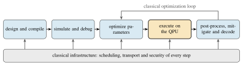
1.1Motivation
Four gaps motivate the work. The first is a scale gap in simulation. Exact state-vector simulation of an \(n\)-qubit circuit requires \(2^{n}\) complex amplitudes, and every additional qubit doubles the memory and time. A 32-qubit state vector in single precision occupies 32 GiB, which fits on one data-center GPU. A 42-qubit state vector requires tens of terabytes, which only a large fraction of a leadership-class supercomputer can hold.
Researchers nevertheless need simulation at exactly this scale. First, it is the regime where today’s hardware produces results that can neither be trusted nor fully verified. Second, the algorithms of Chapters IV and V were developed and validated in simulation before they ran on hardware.
GPU simulators are mature. The practical obstacle is the friction of using them. Circuits written in the dominant Python framework, Qiskit, cannot be handed to GPU-native simulators such as CUDA-Q without a rewrite. Deployment across hundreds of nodes of a Slurm-managed system, with containers and MPI, is a specialist task. Chapter III addresses this gap.
The second is a data gap at the classical–quantum interface. Most proposed quantum machine-learning models spend more resources on loading classical data into a quantum state and reading results back than on computing. Angle encodings use one qubit per feature. Amplitude encodings require circuits of depth exponential in the number of qubits. Readout of a single expectation value to precision \(\epsilon\) requires \(\mathcal{O}\!\left(1/\epsilon^{2}\right)\) shots.
Encodings such as QCrank change this arithmetic. They load many data values in parallel into a small register and read out many expectation values in parallel from the same circuit. They make shot-efficient, hardware-compatible learning primitives possible. Chapter IV builds four such primitives.
The third is a noise gap in algorithm design. Variational algorithms such as the quantum approximate optimization algorithm (QAOA) treat the quantum processor as a black box. A classical optimizer tunes its parameters from noisy expectation-value estimates. Current superconducting devices have two-qubit gate errors near \(10^{-3}\) and coherence times of a few hundred microseconds. There, the optimization loop spends most of its shot budget to fight noise. It converges slowly and often fails to find the ground state that a classical solver would find in milliseconds.
The problem instances, however, are not black boxes. A quadratic unconstrained binary optimization (QUBO) matrix carries structure that can be mapped directly to circuit parameters. The device carries calibration data that can guide the placement of logical qubits on physical qubits. Chapter V develops algorithms that exploit both kinds of structure.
The fourth is a trust gap. Users access quantum processors through shared clouds. Error-correcting codes are public. Future quantum computers will attack the classical infrastructure that transports jobs, calibration data and results. Fault-tolerant quantum computing is usually analysed against a benign noise model. A co-located adversary who can inject faults into a shared device is a qualitatively different threat, and a fixed public encoder is a fixed target.
The cryptography that protects the classical side of the stack must also migrate to the post-quantum standards that NIST finalized in 2024. Chapters VII and VIII address both sides of this gap. Between them, Chapter VI asks what fault-tolerant circuits and end-to-end quantum simulations will actually cost.
1.2Thesis Statement and Research Questions
Useful quantum computation in the coming decade will be delivered not by a quantum processor alone but by a co-designed stack in which classical high-performance computing surrounds the QPU at every layer:
GPU-accelerated simulation to develop, verify and calibrate circuits at scales the hardware cannot yet reach;
structured, vectorized data encodings that make the classical–quantum data interface efficient and learnable;
hardware-aware algorithm design that replaces black-box variational optimization with structure derived from the problem and the device;
AI- and HPC-driven synthesis that compiles toward fault-tolerant resource budgets; and
security-aware error correction and post-quantum cryptography so that the same stack can be trusted when it runs on shared cloud hardware in the post-quantum era.
Five research questions, one per layer of the stack, organize the dissertation. They are answered in Chapters III to VIII and revisited in Chapter IX.
- RQ1 (Scale).
-
How far can classical HPC push exact circuit simulation, and how do we make that capability usable without rewriting quantum programs?
- RQ2 (Data).
-
How should classical data enter and leave a quantum processor so that learning models are shot-efficient, hardware-compatible and trainable?
- RQ3 (Noise).
-
How can optimization algorithms on noisy intermediate-scale quantum (NISQ) devices exploit problem and hardware structure instead of black-box parameter search?
- RQ4 (Synthesis).
-
Can learned, HPC-scale synthesis produce circuits that respect fault-tolerant resource budgets, and what does honest cost accounting say about end-to-end quantum advantage?
- RQ5 (Trust).
-
How do we make error-corrected computation on shared cloud QPUs auditable and secure, and how does that connect to post-quantum cryptography standards?
Figure 1.2 shows the five layers, the chapter for each, and the flow of artifacts between them. Simulation results and containers from the bottom layer feed every layer above it. Hardware-aware compilation techniques from the encoding and algorithm layers feed the synthesis layer. The error-correction audit consumes the randomness and key-management services of the security layer. The QPU is deliberately in the middle, not on top of a hierarchy, with the classical layers around it.
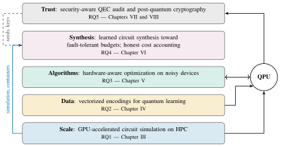
1.3Contributions
The contributions below are grouped by research question.
Scale (RQ1).
Q-GEAR transforms Qiskit circuits gate-by-gate into CUDA-Q kernels through a compact three-tensor encoding and packages the simulator as containers for Slurm-managed GPU systems. On the Perlmutter supercomputer it simulates circuits of up to 42 qubits on 1,024 NVIDIA A100 GPUs. It achieves roughly two orders of magnitude speed-up over a 128-core CPU node and roughly an order of magnitude over existing GPU simulators. Users need not rewrite their circuits [1].
Data (RQ2).
Four learning primitives build on vectorized address–data encodings:
QPIE, a non-sequential hybrid network with parallel information exchange between classical and quantum branches [2];
VQT, a quantum transformer that computes attention by a vectorized quantum dot product with a learnable nonlinear encoder [3];
ShardQ, a hardware-aware circuit cutting-and-knitting compiler that reduces encoding error on IBM Heron devices by roughly 15% [4]; and
NNQA, which compiles trained polynomial networks into exact quantum arithmetic with over 99.5% accuracy for polynomials up to degree 35 on superconducting and trapped-ion hardware [5].
Noise (RQ3).
DEAL (direct entanglement ansatz learning) replaces black-box QAOA parameter optimization with a direct mapping from QUBO coefficients to circuit angles. It adds a dynamic physical-qubit mapping driven by device calibration and an adaptive digital zero-noise extrapolation. It improves the ground-state success rate of 20-qubit, 10-layer circuits on IBM Heron processors by up to 14% [6]. QAWA (quantum approximate walk algorithm) introduces a classical-data-traceable oracle. Its depth grows linearly in the number of qubits, and its outputs are interpretable through polynomial-time classical post-processing. QAWA demonstrates portfolio optimization with a measurable advantage above the noise floor on a 156-qubit device [7].
Synthesis (RQ4).
RubriQ formulates fault-tolerant circuit synthesis as rubric-guided reinforcement learning of a code-generating language model, with GPU-accelerated simulation on Perlmutter inside the reward loop. It achieves a 3.31\(\times\) mean T-gate compression and keeps hardware-constraint violations below 1% [8]. A companion study quantifies the measurement and reload costs of direct quantum simulation of nonlinear wave equations with a unified cost-and-error model. It shows that the per-step quantum cost overtakes the classical cost as the grid grows. The coherent nonlinear update is therefore the target that any end-to-end advantage must meet [9].
Trust (RQ5).
A bounded cloud fault model and the notion of accepted logical disturbance make the exposure of a fixed public encoder to a co-located fault-injection adversary auditable. A polynomial-cost seeded Clifford ensemble reduces the mean accepted logical disturbance of eight-qubit encoders from 0.150 under a seed-aware adversary to 0.020 under a seed-blind one. The 86.7% reduction is attributable to rejection. The fixed [[5,1,3]] code corrects every tested weight-one fault [10]. The Light Rider QPC SDK is a post-quantum cryptographic module designed to the FIPS 140-3 requirements, with a module-search capability. It provides the validated randomness and key-establishment services that the audit and the rest of the stack consume [11].
1.4Methodology
Three methodological commitments run through the dissertation. The first is to test every algorithmic claim on real quantum hardware and in simulation. The devices used include IBM’s Heron-generation superconducting processors (ibm_torino, ibm_marrakesh, ibm_kingston, ibm_pittsburgh, ibm_boston), the IBM Nighthawk processor ibm_miami, and IonQ’s Aria-1 and Forte-1 trapped-ion systems. The ideal-simulator baseline always accompanies hardware results, to separate the effect of noise from that of the method.
The second is to treat the classical HPC resources as first-class experimental apparatus. Every chapter reports the GPUs, the number of nodes, and the containers and software versions used. Appendices A and B document the environments and artifacts in enough detail to reproduce them.
The third is honest accounting. When a method delivers no advantage, as in the nonlinear-wave study of Chapter VI, the negative result receives the same care as the positive ones. To know where the crossover lies is itself a research contribution.
1.5Scope and Limitations
The dissertation is about the software and systems layers of quantum computing, not device physics, control electronics or the design of new error-correcting codes. Its hardware experiments are limited to the qubit counts (up to 36 in the largest trapped-ion run) and depths (a few hundred two-qubit gates) that current cloud-accessible devices support with usable fidelity. The memory of the largest GPU allocation available (1,024 A100 GPUs) limits its simulation experiments and caps exact state-vector simulation at roughly 42–44 qubits.
The security analysis of Chapter VII uses a bounded fault model with weight-one Pauli faults and small codes. Its extension to correlated faults and to codes at the scale of practical fault tolerance is future work. The cryptographic module of Chapter VIII is designed to the FIPS 140-3 requirements, but its formal validation status is outside the dissertation’s scope. Each chapter discusses its own limitations further, and Chapter IX consolidates them.
1.6Organization of the Dissertation
Figure 1.3 maps each chapter to its research question and its work. Chapter II provides the shared background and closes by positioning the dissertation against the literature for each research question. Chapters III to VI answer RQ1 to RQ4, and Chapters VII and VIII together answer RQ5. Chapter IX states what has been established and outlines the research program that follows. Two appendices document the Q-GEAR configuration and the research artifacts and reproducibility information.
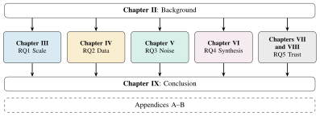
Chapter IIBackground and Related Work
This chapter gives the shared technical foundation for the research chapters and places this dissertation in the literature. The thesis statement of Chapter I holds that useful quantum computation in the coming decade will come from a co-designed stack. In that stack, classical high-performance computing (HPC) surrounds the quantum processing unit (QPU) at every layer. Figure 2.1 previews the stack and tags each layer with the research question (RQ1–RQ5) it serves. The sections follow the layers in turn:
gate-model computation and the native gate sets of the processors used throughout (Section 2.1);
classical circuit simulation and the HPC systems that run it (Section 2.2);
near-term noise and its mitigation (Section 2.3);
variational optimization and the quantum approximate optimization algorithm (Section 2.4);
data encoding (Section 2.5);
circuit cutting and knitting (Section 2.6);
quantum error correction (Section 2.7);
quantum threats and the post-quantum standards that answer them (Section 2.8);
language models for code synthesis (Section 2.9).
Section 2.10 closes with the gap in the literature that each research question addresses. Textbook material follows Nielsen and Chuang [12], and the research chapters cross-reference this chapter rather than repeat it.
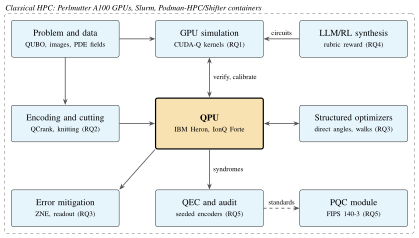
2.1Quantum Computation Fundamentals
2.1.1Qubits, Gates and Measurement
A qubit is a two-level quantum system. Its pure states are unit vectors in \(\mathbb{C}^2\), written \(\ket{\psi}=\alpha\ket{0}+\beta\ket{1}\) with \(|\alpha|^2+|\beta|^2=1\). An \(n\)-qubit register lives in the tensor-product space \((\mathbb{C}^2)^{\otimes n}\cong\mathbb{C}^{2^n}\), and a general pure state is \[\ket{\psi}=\sum_{x\in\{0,1\}^n}\psi_x\ket{x},\qquad \sum_{x}|\psi_x|^2=1, \tag{2.1}\] where bit strings index the \(2^n\) complex amplitudes \(\psi_x\). This exponential description is the source of the hoped-for computational power and the reason that classical simulation meets a memory wall (Section 2.2). Density operators \(\rho\), positive semidefinite with unit trace, describe mixed states. Noise processes act as completely positive trace-preserving maps \(\rho\mapsto\sum_k E_k\rho E_k^\dagger\) with Kraus operators that satisfy \(\sum_k E_k^\dagger E_k=I\) [12].
Closed-system evolution is unitary. A quantum circuit is a sequence of unitary gates, each of which acts on one or a few qubits. The gates used throughout are:
the single-qubit Pauli matrices \(X\), \(Y\) and \(Z\) and the Hadamard gate \(H\);
the phase gates \(S=\mathrm{diag}(1,i)\) and \(T=\mathrm{diag}(1,e^{i\pi/4})\);
the rotations \(R_P(\theta)=e^{-i\theta P/2}\) for \(P\in\{X,Y,Z\}\);
the two-qubit controlled-NOT (CNOT or CX) and controlled-\(Z\) (CZ) gates;
the parameterized interaction \(e^{-i\theta Z_iZ_j/2}\), the building block of the QAOA circuits of Section 2.4.
A computation ends with a measurement in the computational basis, which returns the bit string \(x\) with probability \(|\psi_x|^2\) and collapses the state. One execution gives one sample. An expectation value \(\expval{O}{\psi}\) of an observable \(O\) must therefore be estimated from \(S\) repeated executions, or shots, with a statistical error that scales as \(1/\sqrt{S}\). Idealized complexity analyses hide this shot cost, a recurring theme of Chapters IV and VI.
2.1.2Universal and Native Gate Sets
A gate set is universal if circuits over it can approximate every unitary on \(n\) qubits to arbitrary precision. The Clifford\(+T\) set \(\{H,S,T,\mathrm{CNOT}\}\) is universal and dominates fault-tolerant compilation (Section 2.7). The Solovay–Kitaev theorem guarantees that a finite universal set approximates a single-qubit gate to accuracy \(\varepsilon\) with only \(\mathrm{polylog}(1/\varepsilon)\) gates [12]. Physical devices, however, implement a small native gate set that their control hardware dictates. Every algorithmic circuit must be rewritten in that set before it can run.
IBM’s fixed-frequency transmon processors of the Falcon and Eagle generations used the cross-resonance interaction for their entangling gate. The echoed cross-resonance (ECR) sequence cancels its dominant unwanted terms and served as the native two-qubit gate of the 127-qubit Eagle devices [13], [14]. The Heron generation used here replaces the cross-resonance gate with a CZ gate mediated by tunable couplers. The single-qubit \(\sqrt{X}\), \(X\) and virtual \(R_Z\) gates complete the set. Virtual \(R_Z\) gates are frame changes with zero duration and zero error [15]. The native set reported for the Heron devices used here is \(\{\mathrm{CZ},\mathrm{ID},R_Z,\sqrt{X},X\}\), with ECR in place of CZ on the Eagle generation [8].
Trapped-ion processors such as IonQ’s Aria and Forte systems use the Mølmer–Sørensen interaction [16]. It couples pairs of ions through a shared motional mode and produces an \(XX\)-type entangling gate between arbitrary pairs. This gives all-to-all connectivity at the expense of slower gates. Native gate sets matter because the two-qubit gate count after rewriting, not the abstract count, determines the error budget of a NISQ execution.
2.1.3Transpilation and Qubit Routing
Transpilation converts an abstract circuit into one that respects the native gate set and the coupling graph of a device. It has four parts:
gate decomposition;
layout, the assignment of logical qubits to physical qubits;
routing, the insertion of SWAP gates so that every two-qubit gate acts on physically coupled qubits;
gate-level optimization, such as the cancellation of adjacent inverse gates and the fusion of single-qubit rotations.
Routing is NP-hard in general. The SABRE heuristic of Li et al. [17], the default in Qiskit, performs a bidirectional search. It inserts SWAPs greedily to minimize a distance-based cost [18]. Each SWAP costs three CNOTs (or CZs with additional single-qubit gates) on a heavy-hex lattice. Routing can therefore double or triple the two-qubit depth of a circuit whose logical connectivity does not match the hardware. Hence the algorithm designs of Chapters IV and V attend closely to hardware-native structure, and the hardware-aware cut selection of Chapter IV takes calibration data and physical qubit distance as first-class inputs.
2.2Classical Simulation of Quantum Circuits at HPC Scale
Figure 2.2 maps the simulation methods of this section, their tools and the chapters that use them.
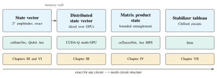
2.2.1State-Vector Simulation and the Memory Wall
The most direct classical simulator stores all \(2^n\) amplitudes of Equation (2.1) and applies each gate as a sparse linear map. A single-qubit gate \(U=(u_{ab})\) on target qubit \(t\) acts on every pair of amplitudes whose indices differ only in bit \(t\), \[\begin{pmatrix}\psi'_{x\,[t\leftarrow 0]}\\ \psi'_{x\,[t\leftarrow 1]}\end{pmatrix} =\begin{pmatrix}u_{00}&u_{01}\\ u_{10}&u_{11}\end{pmatrix} \begin{pmatrix}\psi_{x\,[t\leftarrow 0]}\\ \psi_{x\,[t\leftarrow 1]}\end{pmatrix} \qquad\text{for all $x$ with bit $t$ cleared}, \tag{2.2}\] so one gate costs \(\Theta(2^n)\) arithmetic operations and one sweep over memory. A \(k\)-qubit gate touches \(2^k\)-tuples of amplitudes and costs \(\Theta(2^{n+k})\). A circuit of \(G\) gates therefore costs \(\Theta(G\,2^n)\) time, but time is rarely the binding constraint. The state vector itself occupies \[M(n)=2^n\times 16\ \text{bytes}\qquad(\text{double-precision complex amplitudes}), \tag{2.3}\] or half that in single precision. Figure 2.3 plots Equation (2.3) against the memory of the NVIDIA A100 accelerators [19] used throughout. The curve doubles with every qubit: a 30-qubit state occupies 17 GB, a 40-qubit state 17.6 TB. The 32-qubit single-GPU, 34-qubit four-GPU and 42-qubit, 1024-GPU simulations reported for Q-GEAR [1] sit exactly where single-precision amplitudes fill the device memory. State-vector simulation at scale is thus a memory-capacity problem first and an arithmetic problem second: the memory wall behind RQ1.
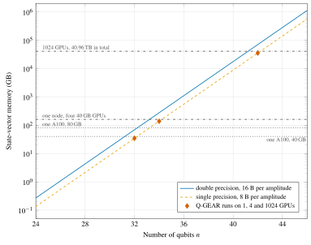
2.2.2Distributed State Vectors on GPUs
To pass the wall, the simulator must distribute the amplitudes across the memories of many devices. The standard scheme partitions on the high-order index bits. With \(2^m\) devices, the \(m\) most significant bits of \(x\) select the device, and the remaining \(n-m\) bits address the local slice. Gates on the \(n-m\) low-order, or local, qubits need no communication, because both amplitudes of each pair in Equation (2.2) reside on the same device. Gates on the \(m\) high-order, or global, qubits pair amplitudes on different devices and need a pairwise exchange of half-slices.
A more efficient scheme permutes global and local qubits periodically through an all-to-all exchange, so that a block of subsequent gates becomes local [20]. On Perlmutter, the exchange crosses NVLink within a node and the HPE Slingshot network between nodes through MPI. Once the state exceeds one node, interconnect bandwidth rather than floating-point throughput bounds the achievable speed. Q-GEAR [1] relies on the multi-GPU distribution of CUDA-Q and reported close to full GPU utilization on up to 1024 A100 GPUs.
2.2.3Tensor-Network Alternatives
Not every state requires \(2^n\) numbers. A matrix product state (MPS) writes the amplitudes as a product of matrices, \[\psi_{x_1x_2\cdots x_n}=\sum_{\alpha_1,\dots,\alpha_{n-1}}A^{[1]x_1}_{\alpha_1}\,A^{[2]x_2}_{\alpha_1\alpha_2}\cdots A^{[n]x_n}_{\alpha_{n-1}}, \tag{2.4}\] where each bond index \(\alpha_i\) ranges over the bond dimension \(\chi\), so storage is \(\mathcal{O}\!\left(n\chi^2\right)\) rather than \(\mathcal{O}\!\left(2^n\right)\) [21]. The representation is exact for any state if \(\chi\) may grow to \(2^{\lfloor n/2\rfloor}\). It is efficient only when the entanglement across every cut of the chain is bounded, as in shallow circuits or circuits with limited long-range entanglement. Each entangling gate multiplies \(\chi\) until a singular-value decomposition truncates it, which introduces a controlled approximation error. General tensor-network contraction underlies the cuTensorNet library of cuQuantum [20] and was the basis of the classical counter-arguments in the quantum-supremacy debate [22].
Chapter IV uses MPS compilation with a bounded bond dimension to compile sub-circuits of data-encoding circuits beyond the reach of exact simulation. The stabilizer simulators of Section 2.7 cover the complementary Clifford regime.
2.2.4GPU Simulators and the HPC Software Context
Table 2.1 summarizes the simulators that recur here. Qiskit Aer [18] provides state-vector, density-matrix, MPS and stabilizer methods, with cuStateVec-backed GPU execution and batched multi-shot GPU techniques [23]. CUDA-Q [24] is NVIDIA’s kernel-based programming model, and its simulation targets build on the cuQuantum SDK [20]: cuStateVec, with multi-GPU and multi-node distribution, and cuTensorNet.
PennyLane Lightning [25] is organized around adjoint differentiation for variational workloads. Qulacs [26] and QCLAB++ [27] are compact C++ simulators with single-GPU support, and Stim [28] is a stabilizer simulator restricted to Clifford circuits. These tools expose different programming models: a Qiskit circuit cannot be handed to a CUDA-Q kernel without a rewrite. Chapter III closes that gap without asking algorithm developers to abandon Qiskit.
| Simulator | Methods | Parallelism | GPU support | Programming model |
|---|---|---|---|---|
| Qiskit Aer [18], [23] | state vector, density matrix, MPS, stabilizer | OpenMP threads; MPI with cuStateVec | NVIDIA via Thrust and cuStateVec; batched shots | Qiskit circuits (Python) |
| CUDA-Q with cuQuantum [20], [24] | state vector (cuStateVec), tensor network (cuTensorNet) | multi-GPU and multi-node through MPI | native NVIDIA | quantum kernels in C++ or Python |
| PennyLane Lightning [25] | state vector with adjoint gradients | OpenMP, Kokkos, MPI | lightning.gpu (cuStateVec), lightning.kokkos | PennyLane QNodes (Python) |
| Qulacs [26] | state vector, density matrix | OpenMP and SIMD | single GPU (CUDA) | C++ and Python |
| QCLAB++ [27] | state vector | OpenMP | single GPU (CUDA) | header-only C++ |
| Stim [28] | stabilizer tableau, Pauli-frame sampling | SIMD bit packing | none (CPU only) | C++ and Python; Clifford circuits only |
The simulations ran predominantly on Perlmutter at NERSC. Each GPU node combines an AMD EPYC processor with four NVIDIA A100 GPUs connected by NVLink. The GPUs have 40 GB of high-bandwidth memory (80 GB on a subset of nodes), and the HPE Slingshot interconnect links the nodes. CPU baselines used dual-socket AMD EPYC 7763 nodes with 128 cores and 512 GB of memory [1], [19]. Slurm [29] schedules the jobs: it allocates nodes, launches MPI ranks and enforces time and memory limits, so a simulator must be packaged as a batch job.
Software environments are delivered as containers. Shifter [30] converts Docker images into a form that can be launched at scale on compute nodes. Its successor Podman-HPC [31] provides rootless, OCI-compatible containers with GPU and MPI hooks. A CUDA-Q or PyTorch installation pinned to specific library versions can thus be rebuilt identically later, and the artifacts of Appendix B follow this practice. Mohseni et al. [32] articulate the broader vision of a quantum supercomputer, in which QPUs form one accelerator class among many inside such a facility. That vision frames the stack of Figure 2.1.
2.3Noise on NISQ Hardware and Error Mitigation
Figure 2.4 places this section and Section 2.7 on one line, from tolerated noise to fault tolerance. This section covers the first two stages: the noise itself and its mitigation.
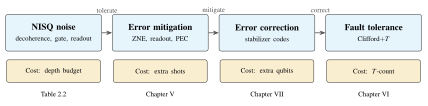
2.3.1Noise Channels and Device Metrics
Preskill’s term noisy intermediate-scale quantum (NISQ) [33] designates processors with tens to a few hundred qubits whose errors are not corrected but must be tolerated. Two incoherent processes dominate. Energy relaxation has the time \(T_1\), over which the excited-state population decays as \(e^{-t/T_1}\). Dephasing has the time \(T_2\le 2T_1\), over which the off-diagonal elements of the density matrix decay as \(e^{-t/T_2}\). Idle qubits also decohere: a qubit that waits for a time \(t\) while others are operated on accumulates an error of order \(t/T_1\) and \(t/T_2\). This idling decoherence is why long, sparse circuits are not free and why delay-aware scheduling matters.
Randomized benchmarking [34] quantifies gate errors. On current superconducting devices, single-qubit errors are of order \(10^{-4}\) and two-qubit errors of order \(10^{-3}\). An example is the median CZ error of \(1.46\times 10^{-3}\) on ibm_pittsburgh during the experiments of Chapter IV [4]. Readout error is the probability that a qubit prepared in \(\ket{0}\) or \(\ket{1}\) is reported as the other value. It is typically of order \(10^{-2}\), an order of magnitude worse than gate error.
Crosstalk denotes unwanted coupling between simultaneously driven or neighbouring qubits, including residual \(ZZ\) interactions with spectator qubits. Isolated gate benchmarks do not capture it, and it degrades circuits whose gates run in parallel [13]. Table 2.2 lists the processors used here with the values that the source publications report.
| Device | Family | Qubits | Native 2q gate | Median 2q error | Used in |
|---|---|---|---|---|---|
| ibm_torino | IBM Heron r1 | 133 | CZ | — | Chapter V |
| ibm_marrakesh | IBM Heron r2 | 156 | CZ | — | Chapters IV and V |
| ibm_kingston | IBM Heron r2 | 156 | CZ | \(\approx2.5\times 10^{-3}\) (mean) | Chapter IV |
| ibm_pittsburgh | IBM Heron r3 | 156 | CZ | \(1.46\times 10^{-3}\) | Chapters IV and V |
| ibm_boston | IBM Heron r3 | 156 | CZ | \(<5\times 10^{-3}\) | Chapters IV and VI |
| ibm_miami | IBM Nighthawk | 120 | CZ | — | Chapter IV |
| IonQ Aria-1 | trapped ion | 25 | MS | — | Chapter IV |
| IonQ Forte-1 | trapped ion | 36 | MS | — | Chapters IV and VI |
Consider a circuit with \(G_2\) two-qubit gates of error \(\varepsilon_2\), \(G_1\) single-qubit gates of error \(\varepsilon_1\) and \(n\) measured qubits with readout error \(\varepsilon_r\). A simple heuristic puts its success probability at roughly \((1-\varepsilon_2)^{G_2}(1-\varepsilon_1)^{G_1}(1-\varepsilon_r)^{n}\) before idling and crosstalk are counted. With \(\varepsilon_2\approx10^{-3}\), the two-qubit budget alone falls below \(e^{-1}\) at about a thousand gates.
In practice, coherent errors and crosstalk make the usable depth considerably smaller. The DEAL experiments of Chapter V observed performance degrading beyond roughly 41–43 CZ gates on Heron processors [6]. Depth is the enemy on NISQ hardware, and every design in this dissertation is a strategy for buying accuracy with less depth.
2.3.2Error Mitigation
Error mitigation reduces the bias of expectation values estimated on noisy hardware at the cost of additional circuit executions, without the qubit overhead of error correction. Zero-noise extrapolation (ZNE) was introduced independently by Temme et al. [35] and Li and Benjamin [36]. It executes the circuit at several amplified noise levels \(\lambda_1<\lambda_2<\dots<\lambda_m\), with \(\lambda=1\) the native level, and extrapolates the measured expectation values \(E(\lambda_i)\) to \(\lambda=0\). Under the model \(E(\lambda)=E^{\ast}+\sum_{k=1}^{m-1}a_k\lambda^k\), Richardson extrapolation gives \[E^{\ast}\approx\sum_{i=1}^{m}\gamma_iE(\lambda_i),\qquad \sum_{i}\gamma_i=1,\qquad \sum_{i}\gamma_i\lambda_i^{k}=0\quad(k=1,\dots,m-1), \tag{2.5}\] which for two points reduces to \(E^{\ast}\approx(\lambda_2E(\lambda_1)-\lambda_1E(\lambda_2))/(\lambda_2-\lambda_1)\).
Kandala et al. [37] amplified noise by stretching gate pulses, which requires pulse-level access. Digital ZNE [38] amplifies noise at the gate level instead. Unitary folding replaces a circuit \(U\), or a subset of its gates, by \(U(U^{\dagger}U)^{m}\), which is logically the identity but multiplies the gate noise by an odd factor \(\lambda=2m+1\). Identity or delay insertion lengthens idle periods, so the coherence-limited part of the noise is scaled separately from the gate-limited part. The adaptive digital ZNE of Chapter V [6] belongs to the latter family. It inserts delay gates whose durations come from device calibration data, so crosstalk and coherence errors are controlled rather than merely amplified.
The variance of the extrapolated estimator grows with \(\sum_i\gamma_i^2\), so ZNE trades bias for shots. ZNE also fails when the noise is not a smooth function of \(\lambda\), which is one reason the extrapolation must be validated against simulation. Measurement errors are mitigated separately. The readout channel is modelled as a stochastic matrix \(A\) with \(A_{yx}=\Pr[\text{read }y\mid\text{prepared }x]\), calibrated from preparation circuits. Then \(\hat{p}_{\mathrm{ideal}}=A^{-1}\hat{p}_{\mathrm{noisy}}\), or a constrained least-squares variant, recovers the ideal distribution. Because \(A\) has \(2^n\times2^n\) entries, scalable methods assume a tensor-product or few-qubit-correlated structure [39].
Probabilistic error cancellation [35] inverts the gate noise channel as a quasi-probability distribution and is unbiased. Its sampling overhead, however, grows exponentially with the number of noisy gates, so ZNE and readout mitigation are the practical choice at the depths considered here.
2.4Variational Algorithms and QAOA
2.4.1Variational Quantum Algorithms
Variational quantum algorithms (VQAs) [40] pair a parameterized quantum circuit \(U(\bm{\theta})\) with a classical optimizer. The QPU prepares \(\ket{\psi(\bm{\theta})}=U(\bm{\theta})\ket{0}^{\otimes n}\) and estimates a cost \(C(\bm{\theta})=\expval{H}{\psi(\bm{\theta})}\) from shots. The classical side updates \(\bm{\theta}\), and the loop repeats. The circuits are shallow by design, which suits NISQ hardware. The variational quantum eigensolver targets ground-state energies of molecular or spin Hamiltonians. QAOA targets combinatorial problems, and quantum neural networks target supervised learning.
All share the same failure modes: the number of cost evaluations that the optimizer demands, each of which costs shots and queue time, and the flat optimization landscape discussed below. Many evaluations use slightly different parameters, so GPU simulation is the natural development environment. This dissertation uses it to validate variational circuits before hardware submission and, in Chapter VI, as the reward oracle of a learning loop.
2.4.2QUBO Problems and the QAOA Ansatz
Quadratic unconstrained binary optimization (QUBO) asks for \(\bm{x}^{\ast}=\mathop{\mathrm{arg\,min}}_{\bm{x}\in\{0,1\}^n}\bm{x}^{\mathsf{T}}Q\bm{x}\) for a symmetric matrix \(Q\in\mathbb{R}^{n\times n}\). Glover et al. [41] survey how penalty terms fold constraints into \(Q\). Montañez-Barrera et al. [42] show how inequality constraints can be encoded without slack variables. Typical examples are:
MaxCut on a graph \((V,E)\), the canonical example, with \(Q\) built from the adjacency matrix;
the travelling-salesman problem, which uses \(n^2\) binary variables \(x_{v,t}\) (city \(v\) at position \(t\)) with one-hot penalties on rows and columns;
the knapsack problem, which penalizes capacity violations;
portfolio optimization, which minimizes the risk \(\bm{x}^{\mathsf{T}}\Sigma\bm{x}\) minus the expected return under a budget penalty.
The substitution \(x_i=(1-Z_i)/2\) converts the QUBO objective into a diagonal cost Hamiltonian \[H_C=\sum_{i<j}J_{ij}Z_iZ_j+\sum_{i}h_iZ_i+c,\qquad J_{ij}=\tfrac12Q_{ij},\quad h_i=-\tfrac12\sum_{j}Q_{ij}, \tag{2.6}\] whose ground state encodes \(\bm{x}^{\ast}\). The quantum approximate optimization algorithm (QAOA) [43] prepares the trial state \[\ket{\bm{\gamma},\bm{\beta}}=\prod_{k=1}^{p}e^{-i\beta_kH_M}\,e^{-i\gamma_kH_C}\ket{+}^{\otimes n},\qquad H_M=\sum_{i=1}^{n}X_i, \tag{2.7}\] with \(2p\) angles, and minimizes \(\expval{H_C}{\bm{\gamma},\bm{\beta}}\). Each cost layer is a product of commuting \(ZZ\) and \(Z\) rotations, and every \(e^{-i\gamma Z_iZ_j}\) compiles to two CNOTs and one \(R_Z(2\gamma)\). Each mixer layer is a product of \(R_X(2\beta)\) gates, as Figure 2.5 shows. As \(p\to\infty\), the ansatz can reproduce adiabatic evolution and reach the exact optimum. On hardware, the two-qubit gate count \(2p|E|\) plus routing overhead binds long before that.
Weidenfeller et al. [44] found that SWAP overhead dominates QAOA on heavy-hex hardware for dense problem graphs. Sachdeva et al. [45] reported that a 127-qubit gate-model device could outperform annealers on structured instances. Abbas et al. [46] survey the open problems of the field critically. Continuous-time quantum walks [47] offer an alternative view of the mixer as a walk on the hypercube and inspire the approximate-walk formulation of Chapter V.
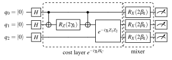
2.4.3Trainability and Parameter Initialization
The classical optimization of \(\bm{\gamma}\) and \(\bm{\beta}\) is the Achilles’ heel of QAOA. McClean et al. [48] studied sufficiently random parameterized circuits, which approximate unitary 2-designs. For them, the variance of every gradient component vanishes exponentially in \(n\), \(\mathrm{Var}[\partial_{\theta}C]\in\mathcal{O}\!\left(b^{-n}\right)\) for some \(b>1\). Gradients are then exponentially small almost everywhere: the barren plateau.
Holmes et al. [49] connected the severity of the plateau to ansatz expressibility. Wang et al. [50] showed that local noise induces a plateau whose severity grows with circuit depth, independently of the ansatz. This ties trainability directly to the depth budget of Section 2.3. Each gradient component also costs shots, and optimizer iterations multiply the hardware queue time.
The parameter-initialization literature responds by exploiting structure. Zhou et al. [51] observed that optimal QAOA angles concentrate and vary smoothly with \(p\), which permits interpolation-based initialization from smaller \(p\). Egger et al. [52] warm-start QAOA from the continuous relaxation of the QUBO, which biases the initial state and mixer toward a classical solution. Fixed-angle and parameter-transfer approaches reuse angles across instances of the same problem class. All of these still treat the angles as free parameters to be tuned.
The DEAL approach of Chapter V [6] goes one step further: it maps the QUBO coefficients directly onto ansatz angles, so a deterministic construction replaces optimization. The QAWA method [7] replaces the black-box loop with a shallow, classically traceable oracle whose mid-circuit measurement statistics are interpretable without full state tomography.
2.5Encoding Classical Data into Quantum States
2.5.1Basis, Angle and Amplitude Encodings
Any quantum algorithm that processes classical data must first load it into a quantum state. The choice of encoding determines both the circuit cost and what can be computed afterwards [53], [54]. Basis encoding writes a bit string into the computational basis, \(\bm{b}\mapsto\ket{\bm{b}}\). It is exact and cheap but uses one qubit per bit. Angle encoding maps each real feature \(x_j\) to a rotation of one qubit, \(\ket{\psi(\bm{x})}=\bigotimes_j R_Y(x_j)\ket{0}\), so \(n\) features cost \(n\) qubits and constant depth. Repeated or higher-frequency angle encodings act as feature maps whose Fourier spectrum controls the expressivity of the resulting model [53], [55].
Amplitude encoding stores \(N=2^n\) normalized values as the amplitudes \(\psi_x\) of an \(n\)-qubit state and achieves exponential compression in qubits. But preparing an arbitrary amplitude-encoded state requires \(\Theta(2^n)\) gates in general, and reading the values back requires tomography. The compression is paid for at both ends. Proposals that assume amplitude-encoded inputs at no cost, including the quantum linear-systems algorithm [56], are exposed to this input problem [57].
2.5.2QPIXL and QCrank
Image and array data motivated a family of encodings. They keep the exponential compression of amplitude encoding for the address but store the values as rotation angles. The QPIXL framework of Amankwah et al. [58] shows that the flexible representation of quantum images and related schemes reduce to a uniformly controlled rotation. After a Walsh–Hadamard transform of the angles and Gray-code ordering of the controls, its circuit uses only \(R_Y\) and CNOT gates. It admits compression when small transformed angles are discarded.
QCrank [59] generalizes this to \(n_d\) data qubits controlled by \(n_a\) address qubits. It encodes a sequence of \(N=2^{n_a}n_d\) real values \(\theta_{a,d}\) in two steps: it prepares the address register in uniform superposition and applies to each data qubit \(d\) the uniformly controlled rotation \[U_d=\sum_{a=0}^{2^{n_a}-1}\ket{a}\!\bra{a}\otimes R_Y(\theta_{a,d}),\qquad \ket{\Psi}=\frac{1}{\sqrt{2^{n_a}}}\sum_{a}\ket{a}\bigotimes_{d=1}^{n_d}\Bigl(\cos\tfrac{\theta_{a,d}}{2}\ket{0}+\sin\tfrac{\theta_{a,d}}{2}\ket{1}\Bigr). \tag{2.8}\] The Möttönen decomposition [60] implements each \(U_d\) with exactly \(2^{n_a}\) single-qubit \(R_Y\) rotations interleaved with \(2^{n_a}\) CNOTs whose controls follow a Gray code, as Figure 2.6 sketches. The transformed angles \(\tilde{\bm{\theta}}=M^{-1}\bm{\theta}\) come from a Walsh–Hadamard-type matrix \(M\). All \(n_d\) data qubits are processed in parallel, so the total CNOT count is \(\Theta(N)\) and the circuit depth is \(\Theta(2^{n_a})\), independent of \(n_d\).
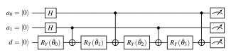
Readout is equally parallel. Measuring all qubits and conditioning on the address bits yields \(\expval{Z_d}_a=\cos\theta_{a,d}\). Every stored value is thus recovered from the same pool of shots as an expectation value rather than by tomography. With \(S\) total shots, each address is sampled about \(S/2^{n_a}\) times, and the standard error of each recovered value scales as \(\sqrt{2^{n_a}/S}\). This shot cost of reading out is the price of the parallelism, and the cost model of Chapter VI quantifies it [9].
Balewski et al. demonstrated QCrank on trapped-ion and transmon hardware [59] and compiled it for a dynamically programmable neutral-atom processor [61]. QCrank circuits are a benchmark of Chapter III, the substrate of the attention and encoding primitives of Chapter IV, and the objects that ShardQ cuts and reassembles.
2.5.3Polynomial Computation, Block Encodings and Readout Cost
Once real values are encoded as angles, arithmetic can be performed on them coherently. The EHands protocol of Balewski et al. [62] provides primitives for multiplication, weighted addition and polynomial evaluation on real-valued encoded states. A polynomial of the encoded value is thus produced without intermediate measurement. This is the starting point for the neural-native arithmetic of Chapter IV [5], which compiles a trained polynomial network into such primitives. Block encoding is a different route to matrix arithmetic. A unitary \(U_A\) on \(a+n\) qubits block-encodes an \(n\)-qubit operator \(A\) with normalization \(\alpha\) if \((\bra{0}^{\otimes a}\otimes I)\,U_A\,(\ket{0}^{\otimes a}\otimes I)=A/\alpha\).
The FABLE compiler [63] produces approximate block encodings of dense matrices with the same uniformly controlled rotation structure as QCrank. Quantum singular value transformation (QSVT) [64] then applies a polynomial transformation to the singular values of \(A\). It needs a number of block-encoding calls equal to the polynomial degree, and it unifies Hamiltonian simulation, linear-system solving and amplitude amplification. The vectorized dot product of Chapter IV [3] can be read as an approximate block encoding whose output is recovered as expectation values.
In all these schemes, the honest cost includes the shots needed to read the result. An expectation value estimated to precision \(\varepsilon\) requires \(\mathcal{O}\!\left(1/\varepsilon^2\right)\) shots. When all \(N\) outputs must be read, as in the nonlinear time stepping of Chapter VI, the readout cost scales as \(\mathcal{O}\!\left(N/\varepsilon^2\right)\) and can cancel the coherent speed-up [9]. Classical shadows [65] reduce the cost of estimating many observables from randomized measurements. They are the natural comparison point for such parallel readout.
2.6Circuit Cutting and Knitting
Circuit cutting partitions a large circuit into sub-circuits small enough for the available hardware or simulator. The sub-circuits are executed separately, and classical post-processing reconstructs the output of the original circuit, a step often called knitting. Two kinds of cut exist.
A wire cut severs a qubit wire between two gates. Peng et al. [66] showed that the identity channel on the cut wire can be expanded in a basis of measure-and-prepare operations. These measure in the Pauli bases and prepare Pauli eigenstates. The original expectation value then becomes a signed sum of expectation values of sub-circuits.
A gate cut removes a two-qubit gate. Mitarai and Fujii [67] showed that a CNOT or CZ can be written as a quasi-probability decomposition (QPD) \[\mathcal{U}=\sum_{i}c_i\,\mathcal{F}_i,\qquad c_i\in\mathbb{R},\qquad \gamma=\sum_{i}|c_i|, \tag{2.9}\] into local single-qubit operations \(\mathcal{F}_i\) with real coefficients that may be negative. Sampling the terms with probability \(|c_i|/\gamma\) and weighting the outcomes by \(\gamma\,\mathrm{sign}(c_i)\) yields an unbiased estimator whose variance is inflated by \(\gamma^2\) relative to the uncut circuit. For a CNOT \(\gamma=3\), so cutting \(k\) gates independently incurs a sampling overhead of \(\gamma^{2k}=3^{2k}\), and a wire cut incurs \(4^2=16\) per cut. This exponential overhead is the fundamental limitation of the technique and the reason that cut placement is an optimization problem in its own right.
Bravyi, Smith and Smolin [68] analyzed the general trade between classical and quantum resources in such decompositions. Piveteau and Sutter [69] showed that classical communication between the sub-circuits reduces the overhead of cutting \(n\) parallel CNOTs from \(\gamma=3^{n}\) to \(\gamma=2^{n+1}-1\). They also showed that gate cuts with communication are strictly more efficient than wire cuts.
CutQC [70] was the first end-to-end system. It finds cuts with a mixed-integer program, runs the sub-circuits on small devices and reconstructs full probability distributions with dynamic-definition post-processing. It demonstrated the evaluation of circuits larger than the device. IBM’s qiskit-addon-cutting packages QPD-based gate and wire cutting for production use. The ShardQ framework of Chapter IV [4] specializes cutting to QCrank-type data-encoding circuits. Its SparseCut heuristic chooses gate cuts from physical qubit distance and calibrated error rates. Its reconstruction is global rather than pairwise, with the \(\mathcal{O}\!\left(3^{2k}\right)\) overhead absorbed on GPUs.
2.7Quantum Error Correction and Fault Tolerance
2.7.1Stabilizer Codes
Quantum error correction (QEC) encodes logical information redundantly across many physical qubits, so that errors can be detected and undone without a measurement of the logical state. The stabilizer formalism of Gottesman [71] describes nearly all codes in practical use. Let \(\mathcal{P}_n\) be the \(n\)-qubit Pauli group and \(\mathcal{S}\subset\mathcal{P}_n\) an abelian subgroup not containing \(-I\), generated by \(n-k\) independent elements \(S_1,\dots,S_{n-k}\). The code space is the joint \(+1\) eigenspace \[\mathcal{C}=\bigl\{\ket{\psi}\in(\mathbb{C}^2)^{\otimes n}:\ S\ket{\psi}=\ket{\psi}\ \ \forall S\in\mathcal{S}\bigr\},\qquad \dim\mathcal{C}=2^{k}, \tag{2.10}\] which encodes \(k\) logical qubits. The logical operators are the elements of the normalizer \(N(\mathcal{S})\) that are not in \(\mathcal{S}\), and the code distance \(d\) is the minimum weight of such an element. The code is written \([[n,k,d]]\) and corrects arbitrary errors on any \(t=\lfloor(d-1)/2\rfloor\) qubits.
A Pauli error \(E\) that anticommutes with some generator flips the measured eigenvalue of that generator. The vector of eigenvalues, the syndrome, identifies \(E\) up to stabilizers. The general condition for a set of errors \(\{E_a\}\) to be correctable is the Knill–Laflamme condition \(PE_a^{\dagger}E_bP=c_{ab}P\) on the code projector \(P\) [72].
The smallest code that corrects an arbitrary single-qubit error is the \([[5,1,3]]\) perfect code of Laflamme et al. [73]. It saturates the quantum Hamming bound: its \(2^4=16\) syndromes exactly label the \(3\times5=15\) weight-one Pauli errors plus the trivial one. Chapter VII exploits this property and enumerates all \(3n\) weight-one faults exhaustively. Steane’s \([[7,1,3]]\) code [74] is a Calderbank–Shor–Steane (CSS) code [75] built from the classical \([7,4,3]\) Hamming code, with separate \(X\)-type and \(Z\)-type generators. The CSS structure gives it transversal Clifford gates. Terhal [76] reviews the theory of QEC for quantum memories.
2.7.2Surface Codes, Bicycle Codes and Thresholds
Kitaev’s toric code [77] and its planar variant, the surface code [78], [79], place qubits on a two-dimensional lattice. Weight-four \(X\)-type and \(Z\)-type checks sit on alternating faces, so every check involves only nearest neighbours. Syndrome extraction therefore needs only local CNOTs and one ancilla per check. A distance-\(d\) patch uses roughly \(2d^2\) qubits. The threshold theorem states that below a physical error rate \(p_{\mathrm{th}}\), an increase of \(d\) suppresses the logical error rate as \(p_L\approx A\,(p/p_{\mathrm{th}})^{\lceil d/2\rceil}\). For the surface code under circuit-level depolarizing noise, \(p_{\mathrm{th}}\) is of order \(1\%\) [79].
Decoding maps a syndrome history to a likely error, usually by minimum-weight perfect matching. Sundaresan et al. [80] compared matching and maximum-likelihood decoders on a heavy-hex subsystem code over multiple rounds. The 2025 experiment of Google Quantum AI [81] operated distance-3, -5 and -7 surface codes below threshold. Each increase of the distance by two reduced the logical error rate by a factor \(\Lambda\approx2\).
The rate \(k/n\) of the surface code vanishes as \(d\) grows, so quantum low-density parity-check codes with higher rate are attractive. The bivariate bicycle codes of Bravyi et al. [82], exemplified by the \([[144,12,12]]\) code with weight-six checks, are one family. They promise roughly a tenfold reduction in overhead relative to the surface code at comparable noise, at the cost of non-planar connectivity.
Syndrome extraction circuits are themselves faulty, and a fault on an ancilla can propagate to several data qubits. Fault-tolerant extraction schedules and repeated measurement rounds are designed to contain such faults. Instead of correcting, many small experiments post-select: runs with a nontrivial syndrome are rejected. This lowers the error rate of the accepted runs at the cost of discarded shots. The security analysis of Chapter VII [10] is built precisely around what survives such rejection.
2.7.3Clifford Simulation, Random Ensembles and Magic
The Clifford group \(\mathcal{C}_n\) is the normalizer of the Pauli group, and \(H\), \(S\) and CNOT generate it. The Gottesman–Knill theorem states that circuits of Clifford gates, Pauli measurements and stabilizer-state inputs can be simulated efficiently on a classical computer. The \(n\) stabilizer generators, rather than \(2^n\) amplitudes, track the state. Aaronson and Gottesman [83] gave a tableau representation with \(\mathcal{O}\!\left(n\right)\) cost per gate and \(\mathcal{O}\!\left(n^2\right)\) per measurement.
Stim [28] implements this with bit-packed, vectorized tableaus and a fast Pauli-frame sampler for repeated noisy runs. It samples syndrome-extraction circuits with thousands of qubits and is the standard tool for estimating logical error rates and thresholds. The gate-level simulations of Chapter VII at \(n=17\) use it.
Encoding circuits of stabilizer codes are Clifford, which has two consequences exploited here. First, ensembles of random Clifford unitaries are cheap to sample and to simulate, whereas Haar-random unitaries on \(n\) qubits require exponentially many gates. Second, the Clifford group is an exact unitary 2-design [84], and in fact a 3-design [85]: for every operator \(X\) on two copies of the system, \[\mathop{\mathbb{E}}_{U\sim\mathcal{C}_n}\bigl[U^{\otimes2}X(U^{\dagger})^{\otimes2}\bigr]=\mathop{\mathbb{E}}_{U\sim\mathrm{Haar}}\bigl[U^{\otimes2}X(U^{\dagger})^{\otimes2}\bigr], \tag{2.11}\] so any quantity that depends on at most the second moment of the ensemble takes its Haar value when averaged over Cliffords. This includes average fidelities and the disturbance measures of Chapter VII. Classical shadows [65] rely on the same fact.
Clifford gates alone are not universal. The \(T\) gate supplies the missing ingredient, often called magic. In the surface code, \(T\) cannot be implemented transversally. It is instead injected through magic-state distillation [86], whose cost dominates fault-tolerant resource estimates. The \(T\)-count is therefore the primary cost driver of a fault-tolerant circuit, ahead of Clifford count and depth. This is why it is a weighted term in the synthesis rubric of Chapter VI [8], and why \(T\)-consuming arithmetic dominates the cryptanalytic estimates of Section 2.8.
2.8Quantum Threats, Post-Quantum Cryptography and Standards
2.8.1Cryptanalytic Quantum Algorithms and Resource Estimates
Shor’s algorithm [87] factors integers and computes discrete logarithms in polynomial time. It uses the quantum Fourier transform to find the period of modular exponentiation. This breaks RSA, finite-field Diffie–Hellman and elliptic-curve cryptography. Grover’s algorithm [88] finds a marked item among \(N\) with \(\mathcal{O}\!\left(\sqrt{N}\right)\) queries and thereby halves the effective key length of symmetric ciphers and hash functions. The standard response is to double key sizes rather than to change algorithms. Resource estimates set the gap between these asymptotic statements and an actual attack.
Gidney and Ekerå [89] estimated that factoring a 2048-bit RSA modulus would take about eight hours on 20 million noisy superconducting qubits. Their estimate assumed a surface code at a physical error rate of \(10^{-3}\), and the \(T\)-gate-consuming modular arithmetic dominated. Gidney’s 2025 update [90] lowers the estimate to fewer than one million noisy qubits running for less than a week. It keeps the same assumptions: a \(0.1\%\) gate error rate, a square grid with nearest-neighbour connections, a 1 µs surface-code cycle and a 10 µs reaction time. The reduction comes from approximate residue arithmetic, yoked surface codes for idle logical qubits and magic-state cultivation in place of distillation. These estimates connect the fault-tolerant cost accounting of Section 2.7 to concrete policy timelines.
Mosca’s inequality [91] states the following. Let \(x\) be the time for which data must remain secret, \(y\) the time needed to migrate infrastructure and \(z\) the time until a cryptographically relevant quantum computer exists. If \(x\) plus \(y\) exceeds \(z\), the data is already at risk, because an adversary can harvest encrypted traffic now and decrypt it later.
2.8.2Standardization and Validation
Post-quantum cryptography (PQC) [92] replaces number-theoretic assumptions with problems believed to be hard for quantum computers, chiefly structured lattices, hash functions and error-correcting codes. NIST opened its standardization process with a public call for algorithms in December 2016 [93]. After three rounds of public cryptanalysis, it announced the selected algorithms in July 2022 [94]. In August 2024, it published three Federal Information Processing Standards:
FIPS 203, the module-lattice key-encapsulation mechanism ML-KEM derived from CRYSTALS-Kyber [95];
FIPS 204, the module-lattice digital signature ML-DSA derived from CRYSTALS-Dilithium [96];
FIPS 205, the stateless hash-based signature SLH-DSA derived from SPHINCS\(^{+}\) [97].
A fourth signature standard based on FALCON and an additional code-based key-encapsulation mechanism, HQC, are in progress.
Standardizing an algorithm is not the same as trusting an implementation. FIPS 140-3 [98], aligned with ISO/IEC 19790, defines four security levels for cryptographic modules and the Cryptographic Module Validation Program. Under that program, an accredited laboratory tests the approved algorithms, key management, self-tests and physical security of a module. Only then may the module be used in federal systems. Among the approved components, SP 800-90A [99] specifies deterministic random bit generators (DRBGs): Hash_DRBG, HMAC_DRBG and CTR_DRBG with their instantiation, reseeding and health-test requirements.
Randomness quality is a validation item in its own right, because every PQC key and signature depends on it. The Light Rider QPC SDK of Chapter VIII [11] is a FIPS 140-3-style PQC module. The randomness audit of Chapter VII [10] deliberately borrows the seeding and reseeding vocabulary of SP 800-90A.
2.8.3Threat Models for Cloud Quantum Hardware
Quantum key distribution (QKD) addresses the key-exchange problem physically rather than computationally. BB84 [100] encodes key bits in non-orthogonal photon states, so eavesdropping disturbs them detectably. Device-independent QKD [101] certifies security from Bell-inequality violations without trusting the devices. Wiretap-channel analyses such as [102] bound the secret-key rate under restricted eavesdropping. QKD secures links rather than computations and is complementary to PQC.
A newer question is the security of computation on shared, cloud-accessed QPUs, where a user’s circuit runs on hardware the user neither owns nor observes. Blind quantum computation [103] hides the computation from the server. Mahadev’s protocol [104] lets a classical client verify the output of a quantum server under cryptographic assumptions. Neither is practical on current devices.
At the hardware level, multi-programming, or co-tenancy, executes circuits of different users simultaneously on one chip. Ash-Saki et al. [105] showed that a co-tenant can exploit crosstalk to degrade or bias a victim’s circuit. This established fault injection through shared physical resources as a threat vector. The audit of Chapter VII [10] formalizes such an adversary under a bounded fault model. It asks how the public, fixed structure of QEC encoders exposes them. This is an emerging topic at the intersection of error correction and systems security.
2.9Large Language Models for Code and Circuit Synthesis
Large language models (LLMs) trained on source code generate syntactically valid programs from natural-language or partial-code prompts. Codex [106] established the functional-correctness evaluation methodology of the field: generated programs are executed against held-out tests rather than compared textually to a reference. Open models such as Qwen2.5-Coder [107] now reach strong performance at 7–32 billion parameters. Quantum circuits expressed in Qiskit, OpenQASM or CUDA-Q are programs, so the same models can be prompted to synthesize circuits.
Circuit synthesis is in one respect an unusually favourable target for such models, because a classical simulator can score a generated circuit exactly against its specification. The fidelity to a target state or unitary, adherence to a coupling graph and gate counts such as the \(T\)-count of Section 2.7 are all computable, so the simulator doubles as an oracle. Supervised fine-tuning alone, however, does not teach a model to respect such quantitative constraints. Generated code that fails to parse or to compile is common.
Reinforcement learning from verifiable rewards supplies the missing feedback. Proximal policy optimization [108] maximizes a clipped surrogate objective and requires a learned value network. Group relative policy optimization (GRPO), introduced with DeepSeekMath [109], removes the value network. It samples a group of \(N\) completions per prompt and uses the group-normalized reward \(\hat{A}_i=(r_i-\bar{r})/\sigma_r\) as the advantage. DeepSeek-R1 [110] showed that GRPO with rule-based rewards can induce long-form reasoning.
Two techniques make the fine-tuning of a multi-billion-parameter model affordable. Low-rank adaptation (LoRA) [111] freezes the pretrained weights \(W_0\) and learns a low-rank update \(W=W_0+BA\) with \(\mathrm{rank}(BA)=r\ll\min(d_{\mathrm{in}},d_{\mathrm{out}})\). This reduces the number of trainable parameters by orders of magnitude. DeepSpeed ZeRO [112] partitions optimizer states (stage 1), gradients (stage 2) and parameters (stage 3) across data-parallel GPUs. The memory footprint of a training run thus shrinks with the number of devices. Generative alternatives to LLMs exist: Fürrutter et al. [113] synthesize circuits with diffusion models conditioned on the target unitary.
The RubriQ system of Chapter VI [8] combines these ingredients: a 7-billion-parameter coder with rank-64 LoRA, GRPO with a group size of eight and ZeRO stage 2 across A100 nodes. A programmatic rubric reward, evaluated by CUDA-Q simulation inside the loop, places the GPU simulator of Section 2.2 at the centre of the learning process.
2.10Positioning of This Dissertation
The preceding sections identify, for each layer of the stack in Figure 2.1, a body of established results and an unresolved gap. We close with those gaps stated in terms of the five research questions of Chapter I.
RQ1 (Scale). GPU state-vector simulators and distributed frameworks exist (Section 2.2), and CUDA-Q in particular reaches thousand-GPU scale, but each requires programs written in its own model. Qiskit-native workflows, which dominate algorithm development and hardware access, either run on Aer with limited multi-node scaling or must be ported by hand. No published pipeline takes Qiskit circuits unchanged to distributed GPU simulation with containerized, Slurm-ready deployment. None characterizes where communication overtakes computation for typical algorithm circuits at 30–42 qubits on a production HPC system. Chapter III addresses this gap with Q-GEAR [1], [114].
RQ2 (Data). The encodings of Section 2.5 make loading and parallel readout efficient. Those encodings and learnable hybrid models have rarely been combined. QCrank-style vectorized encodings had not been made learnable or used as attention primitives. Nor had they been cut hardware-aware into sub-circuits or used as the target of an exact compilation of a trained network. Gradient-based hybrid models, conversely, were evaluated without accounting for shots or for the QPU-versus-GPU gradient trade-off. Chapter IV addresses this gap with QPIE [2], VQT [3], ShardQ [4] and NNQA [5].
RQ3 (Noise). The depth budget of Section 2.3 and the optimization cost and barren plateaus of Section 2.4 limit QAOA on hardware. Warm starts and parameter concentration reduce but do not eliminate the black-box loop. ZNE is usually applied as a generic post-processing step disconnected from the ansatz. Missing is a formulation in which the problem coefficients determine the angles directly, the ansatz is built from the native entangling gate of the device, and noise amplification is designed jointly with the circuit. Also missing is an oracle whose outputs are interpretable without tomography. Chapter V addresses this gap with DEAL [6] and QAWA [7].
RQ4 (Synthesis). LLM- and RL-based program synthesis (Section 2.9) had not been coupled to the fault-tolerant cost metrics of Section 2.7 through a simulator-in-the-loop reward. Diffusion-based circuit synthesis targets unitaries rather than constraint-aware programs. At the same time, quantum algorithms for nonlinear partial differential equations hide the measurement-and-reload cost of Section 2.5 inside linear embeddings [115]. No end-to-end account of when a quantum solver pays off exists. Chapter VI addresses this gap with RubriQ [8], [116] and with the split-step cost model for nonlinear waves [9], [117].
RQ5 (Trust). QEC theory (Section 2.7) assumes an adversary-free noise model. The cloud threat models of Section 2.8 have been studied for NISQ circuits but not for encoders and syndrome-based rejection. Nor had QEC been connected to the randomness and module-validation standards that govern classical cryptography. Chapter VII addresses this gap with the structured-randomness audit [10]. Chapter VIII addresses it with a FIPS 140-3-style post-quantum module [11] positioned against the ML-KEM, ML-DSA and SLH-DSA standards [95], [96], [97], FIPS 140-3 [98] and SP 800-90A [99].
Together, these five gaps trace the outline of Figure 2.1. A QPU is useful only to the extent that the classical layers around it are fast, structured, data-efficient, cost-aware and trustworthy. The chapters that follow build those layers in turn.
Chapter IIIGPU-Accelerated Circuit Simulation at HPC Scale
This chapter addresses RQ1. It asks how far classical high-performance computing can push exact state-vector simulation of quantum circuits. It also asks how researchers with many existing Qiskit programs can use that capability without a rewrite for every new accelerator back end. We present Q-GEAR, a framework that encodes Qiskit circuits into a few dense tensors and translates them gate by gate into CUDA-Q kernels.
We report experiments from [1]. Random unitary circuits of up to 42 qubits were simulated on up to 1,024 NVIDIA A100 GPUs. A 34-qubit circuit that required roughly one day on a 128-core CPU node finished in about one minute on four GPUs. The same pipeline gave order-of-magnitude gains over existing GPU simulators for the Quantum Fourier transform and for QCrank image-encoding circuits.
3.1Introduction and Motivation
Every quantum-computing research program depends on classical simulation. Before a circuit is submitted to a quantum processing unit (QPU), it is simulated:
to check that the algorithm is correct;
to calibrate hyper-parameters;
to estimate the shot budget;
to predict which features of the output distribution should survive hardware noise.
After the hardware run, simulation gives the noiseless reference against which fidelity, energy error and success probability are measured. The difficulty is cost. An \(n\)-qubit circuit stores \(2^{n}\) complex amplitudes and touches all of them for every gate, so both memory and time grow exponentially in \(n\) (Section 2.2). At \(n=34\) a single-precision state vector occupies 128 GB, and at \(n=42\) it occupies 32 TB. This exponential “simulation wall” is precisely what makes quantum computers interesting [22], [33]. But it also makes it difficult to develop, verify and calibrate circuits in the 30–45-qubit regime that current superconducting and trapped-ion processors can execute.
Graphics processing units (GPUs) are the natural instrument to push back this wall. A state-vector update is a memory-bound, embarrassingly data-parallel operation. It maps well to the thousands of streaming cores and the 1.5 TB/s memory bandwidth of an NVIDIA A100 [19]. NVIDIA’s cuQuantum library [20] and the CUDA-Q programming model built on it [24] expose this hardware through kernels. The Message Passing Interface (MPI) can distribute these kernels across many GPUs. Several research simulators have shown single-GPU state-vector performance far beyond CPU back ends [23], [25], [26], [27].
Yet the community’s circuits are overwhelmingly written in Qiskit [18]. Its ecosystem of transpilers, hardware providers and algorithm libraries has no counterpart in the GPU-native toolchains. In our experience and that of our collaborators, a researcher who wants GPU performance has two unattractive options. The first is to rewrite the circuit in a new domain-specific language, learn its idioms and re-validate every gate. The second is to accept the CPU back end and its multi-hour turnaround.
Q-GEAR removes this choice: a researcher should not have to rewrite a circuit to change the machine that simulates it. The framework accepts an ordinary Qiskit QuantumCircuit and re-materialises it as a CUDA-Q kernel at constant cost per gate, so the translation is negligible next to the simulation. The kernel runs on any available target, from a single GPU to hundreds of Perlmutter nodes. A Podman-HPC/Shifter container image captures the whole software stack, so deployment is reproducible and independent of the host.
This chapter makes the following contributions, all reported in [1] and released as open-source software [114].
A compact tensor encoding of circuit batches, with an HDF5 storage layout and JSON metadata. It decouples circuit generation from execution and ships thousands of circuits between CPU and GPU nodes as a single file (Section 3.3.1).
A gate-by-gate transformation from Qiskit gate objects to CUDA-Q kernel instructions in constant time per gate. It currently covers the gate set H, RY, RZ, U3, CX, CP, SWAP and measurement (Section 3.3.2).
Two execution modes. The adjoint mode composes many sub-circuits or Hamiltonian terms into one large state-vector simulation. The parallel mode dispatches independent circuits to independent GPUs (Section 3.3.3).
A containerised, Slurm-integrated deployment on NERSC Perlmutter. It uses the CUDA-Q
nvidia-mgputarget to partition a single state vector across up to 1,024 A100 GPUs by index-bit decomposition (Section 3.3.4).An experimental evaluation on random unitary circuits, the Quantum Fourier transform (QFT), a variational quantum eigensolver (VQE) and QCrank image-encoding circuits. It shows roughly two orders of magnitude speed-up over a 128-core CPU node, roughly one order of magnitude over existing GPU simulators, and strong scaling to 42 qubits (Section 3.6).
3.2Problem Statement and Preliminaries
Section 2.2 gives the mathematical background of state-vector simulation. Here we fix only the notation and the cost model. An \(n\)-qubit pure state is a vector \(\ket{\psi}\in\mathbb{C}^{2^{n}}\) with amplitudes \(\psi_{i}\) indexed by the bit string \(i=(i_{n-1}\cdots i_{1}i_{0})_{2}\), where bit \(i_{q}\) is the computational-basis value of qubit \(q\). A single-qubit gate \(U\) on qubit \(q\) updates every pair of amplitudes whose indices differ only in bit \(q\), \[\begin{pmatrix}\psi'_{i\,[i_{q}=0]}\\ \psi'_{i\,[i_{q}=1]}\end{pmatrix} = U \begin{pmatrix}\psi_{i\,[i_{q}=0]}\\ \psi_{i\,[i_{q}=1]}\end{pmatrix}, \qquad \text{for all } 2^{n-1} \text{ such pairs}, \tag{3.1}\] and a two-qubit gate acts analogously on quadruples of amplitudes. Every gate therefore performs \(\Theta(2^{n})\) arithmetic operations and, more importantly, streams the whole state vector through memory. For a circuit with \(m\) gates the time is \(\Theta(m\,2^{n})\). The memory is \(2^{n}\times 8\) bytes in single precision (complex64) or \(2^{n}\times 16\) bytes in double precision.
Our baseline, a 128-core CPU node, has 512 GB of DRAM and a few hundred gigabytes per second of aggregate memory bandwidth. It holds a 34-qubit single-precision state (128 GB), but each gate costs on the order of a second. A circuit with \(10^{4}\) two-qubit gates then runs for hours. A single A100 with 40 GB of high-bandwidth memory holds a 32-qubit single-precision state (32 GB) and streams it in tens of milliseconds. The same circuit therefore finishes in seconds. But each additional qubit doubles the memory, that is, the number of GPUs.
From this cost model we derive the four requirements that Q-GEAR must meet.
Transparency: the input is a Qiskit circuit, and the user never writes CUDA-Q code.
Negligible translation cost: the Qiskit-to-CUDA-Q translation must be \(\mathcal{O}\!\left(m\right)\) with a small constant, invisible next to the \(\Theta(m 2^{n})\) simulation.
Scalability: the same pipeline must run on one GPU, on the four GPUs of a node and on hundreds of nodes. When the circuit is too large for one device, it must use the memory of all GPUs for a single state vector.
Reproducibility: a container must capture the software stack, and ordinary Slurm batch scripts must drive it, so that an experiment can be repeated on a different allocation or HPC centre.
3.3Design of Q-GEAR
Figure 3.1 gives an overview of the Q-GEAR pipeline, from the Qiskit batch through the HDF5 file and the kernel builder to the GPU target.
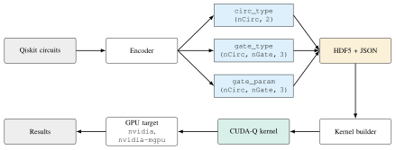
3.3.1Circuit Encoding into Pre-Allocated Tensors
The first design decision separates the generation of circuits from their execution. Generation typically happens in Qiskit on a CPU login node or in a Jupyter session. Execution happens on GPU compute nodes behind the batch scheduler. Direct serialisation of Qiskit circuit objects, as OpenQASM text or Python pickles, is possible but slow to parse and awkward to distribute over MPI ranks. Q-GEAR instead encodes a batch of \(N_{\mathrm{circ}}\) circuits, each with at most \(N_{\mathrm{gate}}\) gates, into three pre-allocated arrays whose shapes are known before the first gate is visited:
circ_typeof shape \((N_{\mathrm{circ}},2)\) and typeint32. It holds for each circuit the pair \([\texttt{num\_qubit},\texttt{num\_gate}]\).gate_typeof shape \((N_{\mathrm{circ}},N_{\mathrm{gate}},3)\) and typeint32. It holds for each gate the triple [gate_type,qubit1,qubit2]. Heregate_typeis an integer code from the dictionary in Table 3.1, andqubit2is set to \(-1\) for single-qubit gates.gate_paramof shape \((N_{\mathrm{circ}},N_{\mathrm{gate}},3)\) and typefloat32. It holds up to three real parameters per gate: \((\theta,\phi,\lambda)\) for U3, \((\theta,0,0)\) for RY, RZ and CP, and zeros for parameter-free gates.
Circuits shorter than \(N_{\mathrm{gate}}\) are padded with a reserved no-operation code, so all rows have the same length. The kernel builder skips the padding with the num_gate entry of circ_type. The encoder makes a single pass over the Qiskit gate list. The encoding cost is therefore \(\mathcal{O}\!\left(N_{\mathrm{circ}}N_{\mathrm{gate}}\right)\), with a constant dominated by attribute look-ups on the Qiskit objects. For the largest batches used in [1], with \(10^{4}\) two-qubit gates per circuit, encoding takes a fraction of a second, amortised over every subsequent execution of the batch.
The three tensors are written to an HDF5 file with the same three dataset names. A JSON document stored as an HDF5 attribute records the metadata needed to interpret them:
the gate dictionary;
the qubit counts;
the random seed or image identifier that generated the batch;
the Qiskit version and a time stamp.
HDF5 was chosen because it is the lingua franca of HPC data management and is readable from every language in the stack. It also supports parallel I/O from many MPI ranks and stores dense typed arrays without the parsing overhead of text formats. The encoded batch is thus a self-describing artefact. It can be regenerated deterministically, shipped to another machine, inspected with standard tools, and executed on any CUDA-Q target without the code that produced it. Appendix A reproduces the dataset names and the metadata schema. The exact layout is documented in [1] and in the software repository [114].
Table 3.1 summarises the supported gate set and its mapping onto CUDA-Q primitives. The set is deliberately small. Together with the Qiskit transpiler, which can rewrite any circuit into \(\{\)U3, CX\(\}\), it is universal. The native entries for H, RY, RZ, CP and SWAP avoid gate-count inflation. A full decomposition would cause this inflation for the QFT and QCrank workloads that motivated the framework. Gates outside the set are rejected with a message that names the offending instruction and suggests the transpiler basis to use.
| Qiskit gate | CUDA-Q primitive | Matrix / action | Qubits | Params | Notes |
|---|---|---|---|---|---|
h |
h(q) |
Hadamard | 1 | 0 | Clifford |
ry |
ry(\(\theta\),q) |
\(e^{-i\theta Y/2}\) | 1 | 1 | QCrank data rotations |
rz |
rz(\(\theta\),q) |
\(e^{-i\theta Z/2}\) | 1 | 1 | virtual on hardware |
u3 |
u3(\(\theta,\phi,\lambda\),q) |
general \(SU(2)\) | 1 | 3 | random unitaries |
cx |
cx(c,t) |
controlled-\(X\) | 2 | 0 | entangler |
cp |
cr1(\(\theta\),c,t) |
\(\mathrm{diag}(1,1,1,e^{i\theta})\) | 2 | 1 | QFT phasesa |
swap |
swap(a,b) |
exchange | 2 | 0 | QFT bit reversal |
measure |
mz(q) |
\(Z\)-basis readout | 1 | 0 | to classical register |
a Qiskit’s cp and CUDA-Q’s controlled r1 share the same matrix, so no phase correction is needed.
3.3.2Gate-by-Gate Kernel Transformation
The kernel builder reads one row of circ_type, allocates a CUDA-Q qubit register of the recorded size, and then iterates over the first num_gate rows of gate_type. It dispatches each integer code to the corresponding kernel primitive, with the qubit indices and parameters read from the same row of gate_type and gate_param. The dispatch is a table look-up, and the primitive call appends one instruction to the kernel. The work per gate is therefore constant and independent of \(n\), and the total translation time is \(\mathcal{O}\!\left(m\right)\) for an \(m\)-gate circuit. The resulting kernel is a genuine CUDA-Q program, which the CUDA-Q just-in-time pipeline compiles once into the intermediate representation consumed by the target. The kernel can then be executed in three ways:
with
cudaq.sample, to obtain counts;with
cudaq.observe, to obtain expectation values of a spin operator;with
cudaq.get_state, to retrieve the full state vector for fidelity checks against the Qiskit reference on small instances.
First, the construction is lossless for the supported gate set: every gate is mapped to a primitive with exactly the same unitary. A circuit simulated through Q-GEAR therefore produces, up to floating-point rounding, the same state vector as the Qiskit Aer simulator on the original circuit. This was verified in [1] on small instances by a comparison of state vectors, and on the VQE benchmark by a comparison of converged energies (Section 3.6.3).
Second, the construction is stateless: the builder needs only the tensors, not the original Qiskit objects. The encoding can therefore run on a login node. The kernel construction then runs independently on every MPI rank of a large job, with no Python objects pickled across processes.
3.3.3Workflow Modes: Adjoint and Parallel
Quantum-computing workloads on an HPC system come in two shapes, and Q-GEAR exposes one execution mode for each (Figure 3.2). In adjoint mode a single large computation is assembled from many pieces. For instance, the cost Hamiltonian of a variational algorithm is a sum \(H=H_{1}+\dots+H_{N}\) of Pauli terms, or a long circuit is the concatenation of many independently generated sub-circuits. Q-GEAR composes the pieces into one kernel and one spin operator and reads all \(N\) expectation values \(\expval{H_{k}}\) from one state-vector simulation. When gradients are needed, adjoint differentiation [118] obtains them in a single backward sweep rather than by \(2N\) parameter-shift evaluations. This mode benefits from the multi-GPU state-vector partitioning of Section 3.3.4, because the state is large and shared.
In parallel mode the workload consists of \(N\) independent circuits. Examples are the random circuits used for benchmarking, the QCrank sub-images of a large picture, and the candidate circuits of a synthesis loop (Chapter VI). Each MPI rank simulates its slice of the HDF5 batch on its own GPU with the single-device nvidia target. The ranks communicate only in the final gather of results. A single command-line flag in the Slurm script selects the mode, and both modes share the encoder, the kernel builder and the container image.
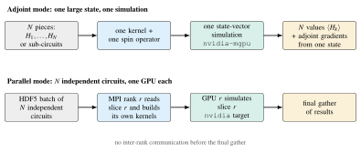
nvidia-mgpu target, so all \(N\) expectation values and their adjoint gradients come from one state. Parallel mode gives each MPI rank a slice of the HDF5 batch to simulate on its own GPU with the nvidia target and gathers the results at the end. Schematic.3.3.4Containerised Deployment and Multi-GPU Execution
Reproducible deployment on a shared HPC system is also a software-engineering problem. The CUDA-Q tool-chain depends on a specific CUDA driver interface and a specific MPI implementation. It also needs a Python environment that matches the Qiskit version used to generate the circuits. Q-GEAR freezes this stack in an Open Container Initiative image derived from the official CUDA-Q image, with Qiskit, h5py and the Q-GEAR package added. It runs the image through Podman-HPC on Perlmutter [31]. Shifter images are produced from the same definition for systems that do not support Podman-HPC.
Slurm launches the image with one task per GPU, and its plugin exposes the Cray MPICH libraries of the host to the container. The containerised CUDA-Q runtime can therefore use the Slingshot interconnect directly rather than fall back to TCP. A typical job script requests \(R\) GPU nodes, sets the CUDA-Q target to nvidia-mgpu, and launches \(4R\) ranks with srun. The same script with the target set to nvidia runs the parallel mode. The Slurm scripts, image definitions and environment files are part of the released software [114] and are listed in Appendix A.
The nvidia-mgpu target distributes one state vector over \(G=2^{g}\) GPUs by index-bit partitioning, shown in Figure 3.3. Write the amplitude index as \(i=(i_{n-1}\cdots i_{0})_{2}\). The \(g\) most significant bits \((i_{n-1}\cdots i_{n-g})\) select the GPU that owns the amplitude. The remaining \(n-g\) bits are its offset inside that GPU’s local array of \(2^{n-g}\) elements. Each GPU therefore stores a contiguous block of \(2^{n-g}\) amplitudes, or \(2^{n-g}\times 8\) bytes in single precision. Qubits \(0,\dots,n-g-1\) are called local and qubits \(n-g,\dots,n-1\) are called global.
On A100 GPUs with 40 GB this bounds the local block to \(2^{32}\) amplitudes, so \(G\) GPUs can hold at most \(n = 32+g\) qubits. This gives 32 qubits on one GPU, 34 on the four GPUs of a node, 36 on four nodes, and 42 on \(2^{10}=1,024\) GPUs. The last is the largest configuration reported in [1].
The partition determines which gates need communication. A single-qubit gate on a local qubit \(q<n-g\) pairs amplitudes whose indices differ only in bit \(q\), so both have the same top \(g\) bits and live on the same GPU. The update in Equation (3.1) is then entirely local, and all \(G\) GPUs proceed in parallel with no data movement.
A single-qubit gate on a global qubit \(q\geq n-g\) pairs amplitudes whose GPU ranks differ in bit \(q-(n-g)\). Every GPU must then exchange half of its block, \(2^{n-g-1}\) amplitudes, with its partner GPU before the update can be applied. CUDA-Q implements this as a pairwise exchange over NVLink within a node and over the Slingshot network between nodes. When several global gates follow one another, it instead permutes the qubit ordering, which turns global qubits into local ones and back.
Two-qubit gates follow the same rule for each of their qubits, with one simplification for controlled gates. If only the control qubit is global, no exchange is needed. The gate is the identity on the GPUs whose rank bit is 0 and the target operation on those whose rank bit is 1. Only a global target qubit forces communication.
The communication volume per global gate is \(2^{n-g-1}\times 8\) bytes per GPU, which for a 42-qubit state on 1,024 GPUs is 16 GB per GPU and per gate. The measured GPU utilisation nevertheless stayed near 100% (Section 3.6.2). This reflects the high bandwidth of NVLink and Slingshot. It also reflects that only the \(g\) global qubits, a small minority of the \(n\) qubits in a random circuit, ever trigger an exchange.
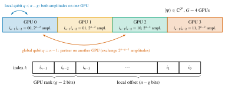
3.4Implementation
Q-GEAR is a Python package built with the nbdev literate-programming tool-chain, so the documentation, the unit tests and the source come from the same notebooks [114]. The package has three modules that mirror Figure 3.1:
an encoder module that walks a Qiskit circuit and fills the three tensors;
an I/O module that writes and reads the HDF5 batch file with its JSON metadata;
a kernel-builder module that produces CUDA-Q kernels and wraps the
sample,observeandget_stateentry points.
A command-line driver combines them with argument parsing for the target, the mode, the shot count and the batch slice assigned to the current MPI rank. Example generators cover the benchmark families of this chapter: random CX-block circuits, QFT, VQE ansätze and QCrank image encoders built on the encoder of [59]. The Jupyter notebooks that produced the figures of [1] are included for reproducibility.
All GPU experiments were run on the Perlmutter system at NERSC (Figure 3.4). A GPU node has one AMD EPYC 7763 “Milan” processor and four NVIDIA A100 GPUs with 40 GB of HBM2 each, fully connected by third-generation NVLink. PCIe Gen4 links the GPUs to the CPU, and four HPE Slingshot 11 (Cassini) network interface cards give every GPU its own path to the interconnect. The baseline CPU node has two AMD EPYC 7763 processors (128 cores) and 512 GB of DDR4. The 40 GB GPU memory sets the 32-qubits-per-GPU limit of Section 3.3.4, and the NVLink and Slingshot bandwidths make the exchange of global-qubit amplitudes affordable.
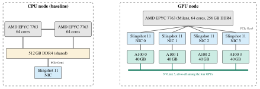
Table 3.2 summarises the software environment. The container is based on the official CUDA-Q image and adds a conda environment on the Perlmutter /pscratch file system. The Python packages are therefore read from the fast parallel file system rather than from the container layer at every rank start-up. This detail matters when a job launches 1,024 ranks that all import Qiskit and h5py within the same second. The CPU baseline runs the Qiskit Aer state-vector simulator with OpenMP threading over the 128 cores of a CPU node. It is subject to the 24-hour wall-clock limit of the Perlmutter regular queue.
| Component | Configuration |
|---|---|
| System | NERSC Perlmutter (HPE Cray EX); TTU HPCC for development runs |
| GPU node | \(1\times\) AMD EPYC 7763, \(4\times\) NVIDIA A100 40 GB (NVLink), PCIe Gen4, \(4\times\) Slingshot 11 |
| CPU node (baseline) | \(2\times\) AMD EPYC 7763 (128 cores), 512 GB DDR4 |
| Largest GPU job | 256 GPU nodes, 1,024 A100 GPUs, 42 qubits |
| Scheduler | Slurm, one MPI rank per GPU, 24-hour wall-clock limit on the CPU queue |
| Containers | Podman-HPC (Perlmutter); Shifter image built from the same definition |
| GPU simulator | CUDA-Q with cuQuantum custatevec; targets nvidia, nvidia-mgpu (cudaq from PyPI as required by qgear 1.1.2; the paper does not pin a version) |
| CPU simulator | Qiskit Aer state-vector (qiskit and qiskit-aer from PyPI, unpinned) |
| Other GPU baselines | Qiskit Aer GPU; PennyLane Lightning-GPU |
| Language / environment | Python 3.11; conda environment on /pscratch; h5py for HDF5 I/O |
| Precision | complex64 (single) state vector, \(2^{32}\) amplitudes per GPU |
3.5Experimental Setup
The evaluation in [1] uses four families of circuits that exercise different aspects of the pipeline.
Random CX-block circuits: layers of random U3 rotations on all qubits interleaved with CX gates on randomly chosen pairs, with \(n\) from 28 to 34 qubits and 100 to 10,000 two-qubit gates. They have no structure that a simulator could exploit, so they measure the raw state-vector throughput of each back end. Circuits with 100 two-qubit gates are short, those with 10,000 long.
The Quantum Fourier transform on up to 22 qubits. Its \(\Theta(n^{2})\) controlled-phase gates and final SWAP layer make it a standard structured benchmark and a component of many algorithms.
An 18-qubit VQE instance, which exercises the adjoint mode. An optimiser calls the simulator repeatedly for expectation values of a many-term Hamiltonian, so per-call latency rather than raw throughput dominates.
QCrank image encoding [59]. A grey-scale image of \(2^{n_{a}}\times n_{d}\) pixels is loaded into \(n_{a}\) address and \(n_{d}\) data qubits by uniformly controlled rotations. The pixel values are recovered from many measurements of the circuit. This family represents the data-encoding workloads of Chapter IV and requires millions of shots, which stresses the sampling path rather than the gate-application path.
Each configuration was timed end to end, from kernel construction to the availability of the result in Python. The CPU baseline was run on a dedicated CPU node under the 24-hour limit. A CPU run that did not finish within the limit is reported as exceeding 24 h. GPU utilisation was recorded with the NVIDIA system-management interface. For the multi-node runs the number of GPUs was first set to the smallest power of two that holds the state (\(G=2^{n-32}\)). It was then increased to measure strong scaling at fixed \(n\). Correctness was checked on small instances by a comparison of state vectors between Q-GEAR and Qiskit Aer. For the VQE, the converged energy was compared with the exact ground-state energy.
3.6Results
3.6.1CPU Versus GPU on Random Circuits
Figure 3.5 compares the simulation time of short and long random circuits on the CPU node, one A100 and the four A100s of one GPU node. The headline numbers from [1] follow. A 34-qubit long random unitary took approximately 24 h on the 128-core CPU node, that is, the entire wall-clock allowance. The same circuit finished in approximately 1 min on four A100 GPUs with the nvidia-mgpu target. On a single A100, which holds circuits of up to 32 qubits, the speed-up over the CPU node was approximately \(400\times\).
The GPU curves follow the expected \(2^{n}\) slope: each additional qubit roughly doubles the time, because each gate streams a state vector of twice the size. The CPU curve rises somewhat faster than \(2^{n}\) once the state exceeds the last-level caches and the memory-bandwidth limit of the socket dominates. For short circuits the GPU times are nearly flat in \(n\). Fixed costs dominate these times rather than gate application: chiefly kernel compilation, state allocation and the transfer of the result. In this regime the constant-time kernel transformation of Section 3.3.2 matters, because a translation cost proportional to the state size would have been visible.
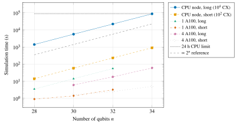
Two practical consequences follow. First, the four GPUs of a single Perlmutter node replace roughly a day of CPU time with a minute for the largest circuit that fits. A parameter sweep that would have consumed a week of allocation and several job submissions becomes an interactive session. Second, the crossover between CPU and GPU is far below 28 qubits. Among the sizes tested there is no regime in which the CPU node is competitive. The GPU’s fixed costs are on the order of a second, while a single gate on a 28-qubit state already costs the CPU a comparable time.
3.6.2Strong Scaling to 42 Qubits on 1,024 GPUs
Figure 3.6 shows how the multi-node adjoint mode extends the reach of exact simulation. Each additional qubit doubles the state and, at fixed memory per GPU, doubles the number of GPUs required. The configurations therefore lie on a diagonal: 4 GPUs for 34 qubits, 16 for 36, 64 for 38, 256 for 40 and 1,024 GPUs for 42 qubits. The last point, 256 Perlmutter nodes, is the largest configuration reported in [1]. Along this diagonal each GPU holds a block of the same size (\(2^{32}\) amplitudes), so without communication the time per gate would be constant. The measured times rise slowly with \(n\), because the number of global qubits \(g=n-32\) grows and each global-target gate exchanges half of every GPU’s block.
A vertical reading of the figure at fixed \(n\) shows strong scaling. When the GPU count doubles, the block per GPU halves and the time approximately halves. The paper [1] reports GPU utilisation close to 100% throughout. The pipeline scales to 1,024 GPUs with no code changes: only the node count in the Slurm script and the target name differ from the single-GPU case. This realises the scalability requirement of Section 3.2.
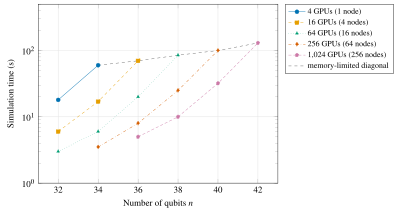
nvidia-mgpu target. Each GPU holds at most \(2^{32}\) amplitudes, so the largest state on \(G\) GPUs has \(32+\log_{2}G\) qubits (dashed diagonal); 42 qubits on 1,024 GPUs is the largest configuration reported. Re-plotted from the values reported in [1] (about 1 min at 34 qubits on 4 GPUs; 42 qubits on 1,024 GPUs at near-100% utilisation); intermediate points are illustrative.3.6.3Comparison With Other GPU Simulators
A speed-up over a CPU node is expected of any GPU simulator. The more discriminating question is how Q-GEAR compares with existing GPU back ends that a Qiskit or PennyLane user could reach with similar effort. The paper [1] reports that, on the same A100 hardware, Q-GEAR was approximately \(10\times\) faster than both the Qiskit Aer GPU simulator and PennyLane Lightning-GPU [25]. For the QFT the advantage over Aer was larger, between \(20\times\) and \(100\times\) depending on the size, on circuits of up to 22 qubits. A small illustrative example in the paper is a 30-gate QFT that ran in 0.0158 s through Q-GEAR against 0.4330 s in Aer, a factor of \(27.4\times\). Figure 3.7 plots the QFT comparison against PennyLane Lightning-GPU for 28 to 34 qubits.
The gap is not explained by arithmetic, because all three back ends use cuQuantum kernels for the state-vector updates. It comes from the layers above them. Q-GEAR compiles a whole kernel once and then executes it inside the CUDA-Q runtime. The Python-level simulators instead dispatch gates one at a time through their own instruction objects and synchronise with the host between operations. For circuits with hundreds to thousands of gates the per-gate overhead, not the per-gate arithmetic, therefore dominates. The QFT, with its many small controlled-phase gates, is exactly the kind of circuit that exposes this overhead.
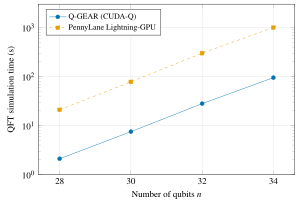
The VQE benchmark shows the same effect in a variational loop. An 18-qubit VQE instance converged in 126 optimiser iterations to a percent error of \(2.59\times 10^{-7}\) in the ground-state energy. It ran in about 4 s end to end through Q-GEAR in adjoint mode, compared with about 10 min for the same optimisation through the CPU baseline [1]. Each iteration evaluates the expectation values of all Hamiltonian terms on one state. The single-pass observe call of the adjoint mode therefore replaces hundreds of separate circuit executions per iteration. The converged energy agrees with the exact value to the stated precision, which confirms that the transformation preserves the circuit semantics.
3.6.4QCrank Image-Encoding Benchmarks
The final benchmark family targets the data-encoding circuits that recur throughout Chapters IV and VI. Table 3.3 lists the four images used in [1], from a \(64\times 80\) fingerprint with about 5,000 pixels to a \(384\times 256\) zebra with about 98,000 pixels. In QCrank the number of pixels is \(2^{n_{a}}n_{d}\), so a given image admits several \((n_{a},n_{d})\) decompositions. The zebra image, for instance, was encoded with 13 address and 12 data qubits, with 14 and 6, and with 15 and 3. Each pixel value is read out from the statistics of its address, so the shot count scales with the number of address states. It ranges from three million shots for the fingerprint to 98 million shots for the 15-address-qubit zebra encoding.
For the smaller images, the GPU pipeline delivered speed-ups approaching two orders of magnitude over the CPU baseline [1]. For the largest shot counts the advantage narrows. The sampling and host-transfer path, not the state-vector update that the GPU accelerates, dominates when \(10^{8}\) bit strings are sampled from a 25-qubit state. This observation motivated the multi-shot sampling optimisations discussed in Section 3.7 and, more fundamentally, the shot-efficient encodings developed in Chapter IV.
| Image | Resolution | Pixels | Address qubits \(n_{a}\) | Data qubits \(n_{d}\) | Shots |
|---|---|---|---|---|---|
| Finger | \(64\times 80\) | 5,120 | 10 | 5 | 3 M |
| Shoes | \(128\times 128\) | 16,384 | 11 | 8 | 6 M |
| Building | \(192\times 128\) | 24,576 | 12 | 6 | 12 M |
| Zebra | \(384\times 256\) | 98,304 | 13 | 12 | 24 M |
| Zebra | \(384\times 256\) | 98,304 | 14 | 6 | 49 M |
| Zebra | \(384\times 256\) | 98,304 | 15 | 3 | 98 M |
GPU speed-ups over the CPU baseline approach two orders of magnitude for the smaller images [1].
3.7Discussion and Limitations
The results above answer the first half of RQ1 quantitatively. With the GPUs available on a leadership-class system today, exact state-vector simulation reaches 42 qubits. The 30–34-qubit regime that used to require a day of CPU time is now interactive. The design answers the second half of RQ1, usability. No circuit in this chapter was rewritten, and the same HDF5 batch ran on one GPU and on 1,024 GPUs after a change of two lines in a job script. Several limitations bound what this approach can deliver, and they shape the rest of the dissertation.
The memory wall. Index-bit partitioning trades memory for GPUs at a fixed exchange rate of one qubit per doubling of the GPU count. With 40 GB per GPU the 1,024 GPUs used here hold 42 qubits. The 80 GB A100 and the newer H100 add one qubit. The entire Perlmutter GPU partition of roughly 7,000 GPUs would add two or three more. Exact simulation of general circuits therefore ends at about 42–45 qubits on any machine that exists or is planned, regardless of software quality.
Beyond that scale, only approximate methods can extend simulation, such as matrix-product states [21] for low-entanglement circuits or the circuit-cutting techniques of Section 2.6. They work only when they can exploit structure that random circuits do not have. At this boundary the hardware experiments of Chapters IV and V become the only way to obtain answers. Q-GEAR is therefore positioned as a verification and calibration tool for circuits that then run on QPUs, not as a replacement for them.
Communication for high-order qubits. Along the memory-limited diagonal of Figure 3.6 the time per gate rises with \(n\). The fraction of gates that touch global qubits grows with \(g=n-32\), and each such gate moves half of the distributed state across the network. For random circuits the effect is mild, since global qubits are a small minority. Structured circuits are different: in the QFT or in the address register of QCrank, a few qubits are addressed by many gates. A fixed qubit ordering can then place a heavily used qubit among the global ones and incur an exchange at nearly every layer. A natural extension is to choose the permutation of logical to index bits so that the most frequently addressed qubits are local, in the spirit of the qubit-reordering strategies in [20], [23]. The current Q-GEAR release leaves this to the CUDA-Q runtime.
Gate-set coverage. The eight instructions in Table 3.1 cover the workloads in this dissertation. They do not cover, for example, multi-controlled gates, arbitrary unitaries given as matrices, mid-circuit measurement with feed-forward, or reset. Some of these are straightforward additions to the dispatch table. Mid-circuit measurement with classical control is not, because it breaks the pure state-vector model on which the multi-GPU partitioning relies. It would require the sampling path of the simulator rather than the state-vector path. The QAWA circuits of Chapter V, which use mid-circuit measurement data, were therefore validated with Q-GEAR only up to the measurement layer.
Sampling-dominated workloads. The QCrank results show the cost of a shallow circuit with a shot count in the tens of millions. The sampling of bit strings from the final state and their transfer to the host then dominate the cost. GPU state-vector acceleration does not address this step. Techniques that sample many shots from a single stored state without a re-simulation of the circuit [23] mitigate this, and Q-GEAR uses the multi-shot sampling of CUDA-Q. The more fundamental remedy is to design encodings that need fewer shots, which is the subject of Chapter IV.
Precision. All results use single-precision complex amplitudes. This halves memory relative to double precision and allows 32 qubits per GPU. For the circuit depths considered here the accumulated rounding error is far below the shot noise of any realistic experiment. The VQE benchmark converged to a relative error of \(10^{-7}\). For much deeper circuits, or for small differences of amplitudes, a double-precision target with 31 qubits per GPU is available at twice the memory cost.
3.8Relation to the Other Chapters
Q-GEAR is the simulation substrate on which the rest of this dissertation stands, and Figure 3.8 shows the concrete connections. The 20-qubit, 10-layer DEAL circuits of Chapter V were simulated noiselessly through Q-GEAR before submission to the IBM Torino and Marrakesh processors. This confirmed that the directly initialised angles reproduced the intended energies. It also gave the noiseless reference distributions used to measure the hardware success probabilities and Kullback–Leibler divergences. The QAWA walk circuits of the same chapter were simulated up to 20 qubits with the same pipeline.
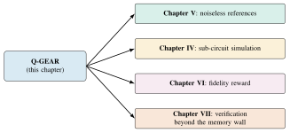
In Chapter IV the ShardQ circuit-cutting framework knits sub-circuit results on A100 GPUs. The cost of its quasi-probability reconstruction grows as \(3^{2k}\) in the number of cuts \(k\). The parallel mode of Section 3.3.3 ran the sub-circuit simulations and made this reconstruction tractable. The QCrank encoders benchmarked in Table 3.3 are the same encoders that ShardQ cuts and that VQT uses for its vectorised attention. In Chapter VI the RubriQ reinforcement-learning loop simulates every generated circuit in CUDA-Q to evaluate the fidelity component of its rubric reward. The constant-time kernel construction and the container deployment allow thousands of candidate circuits per training step on the Perlmutter nodes that host the language model.
Finally, the memory wall of Section 3.7 is why the later chapters turn from simulating quantum computation to trusting it. Once circuits exceed what any classical machine can check, the questions of Chapter VII about auditable error correction on shared hardware become unavoidable.
3.9Summary
This chapter presented Q-GEAR, a framework that makes GPU-accelerated state-vector simulation available to Qiskit users without a rewrite of their circuits. The framework has four parts:
a three-tensor HDF5 encoding that decouples circuit generation from execution;
a constant-time kernel transformation over a compact but universal gate set;
adjoint and parallel modes for the two shapes of HPC quantum workloads;
a containerised, Slurm-integrated deployment that partitions one state vector across GPUs by index-bit decomposition, so that the same job script runs on one GPU or on 1,024.
Experiments reported in [1] showed:
roughly two orders of magnitude speed-up over a 128-core CPU node, with a 34-qubit random unitary reduced from about a day to about a minute on one GPU node;
roughly one order of magnitude over existing GPU simulators, with 20–100\(\times\) gains on the QFT;
an 18-qubit VQE reduced from ten minutes to four seconds;
exact simulation of 42-qubit circuits on 1,024 A100 GPUs at near-full utilisation.
The chapter also identified the limits of the approach: a memory wall at about 42–45 qubits, communication costs for heavily used global qubits, a restricted gate set, and sampling-dominated encoding workloads. These limits motivate the hardware-aware algorithms of Chapter V, the shot-efficient encodings of Chapter IV, and the verification questions of Chapter VII. The pipeline itself remains the tool with which every circuit in those chapters was first validated.
Chapter IVVectorized Encodings for Quantum Learning
This chapter addresses RQ2: how should classical data enter and leave a quantum processor so that learning models are shot-efficient, hardware-compatible and trainable? Chapter III showed how far GPU simulation can push the development of quantum circuits. This chapter turns to learning, the layer on the classical–quantum boundary. Here the dominant cost is neither the simulator nor the optimizer (the subject of Chapter V) but the data interface. The interface is the loader that turns a classical vector into a quantum state and the estimator that turns measurement counts back into numbers.
We argue that one family of vectorized encodings yields learning primitives whose shot cost, gate count and trainability can be reasoned about in closed form. These encodings are uniformly controlled rotations on a data register indexed by an address register, in the lineage of QCrank [59]. Four systems substantiate the claim: QPIE, VQT, ShardQ and NNQA (Figure 4.1).
4.1Introduction
Most quantum algorithms with a provable advantage for linear algebra and learning make two assumptions. Examples are the linear-systems solver of Harrow, Hassidim and Lloyd [56], the quantum singular value transformation [64], and the kernel and principal-component methods surveyed by Biamonte et al. [57]. They assume that the input is already available as a quantum state and that the output is a low-dimensional property of a quantum state. Neither assumption holds for a learning system that consumes classical images, sequences or tables and must return classical predictions.
Three costs follow. A generic amplitude encoding of \(N\) real numbers costs \(\Theta(N)\) two-qubit gates in the worst case. Tomography costs a number of shots that grows with the number of amplitudes to be resolved. The variational circuits usually placed between the two suffer from barren plateaus [48] as they grow. On a processor with a few hundred qubits and two-qubit error rates near \(10^{-3}\) (Section 2.3), the data interface decides whether a quantum learning model can run at all. Accuracy is a later question.
This chapter takes the position that the interface should be structured rather than generic. A vectorized encoding stores a classical value as the rotation angle of one data qubit, conditioned on an address register held in uniform superposition. So \(n_d\) uniformly controlled rotations on \(n_a\) address qubits load \(N = 2^{n_a} n_d\) values, with \(\Theta(N)\) CNOT gates in a fixed, hardware-friendly pattern [59], [60].
Three consequences follow and recur throughout the chapter (Figure 4.1, top). First, every shot returns one address and one bit per data qubit, so all \(N\) values are read out in parallel from the same shots. The shot cost is set by the precision required per value, not by the dimension of the Hilbert space. Second, the map from angles to expectation values is a product of cosines. Nonlinear computations on encoded values thus reduce to linear algebra over trigonometric quantities whose Jacobians are known classically. Gradients need not pass through the quantum processor. Third, the encoding, not an optimizer, fixes the circuit structure, so the compiler can cut, approximate and route the circuit with knowledge of the device.
The four contributions instantiate this position at increasing distance from conventional variational learning (Figure 4.1, bottom).
QPIE (Section 4.3) replaces the sequential stacking of a pretrained classical network and a variational quantum circuit by a parallel exchange of information between them. It selects the gradient method at run time: the parameter-shift rule on a quantum processor, adjoint differentiation on a GPU simulator. It improves accuracy over classical transfer learning on the classification tasks with reported baselines, and it converges faster on two time-series tasks [2].
VQT (Section 4.4) estimates the masked attention matrix of a transformer by a Vectorized Quantum Dot Product (VQDP). A Vectorized Nonlinear Quantum Encoder (VNQE) makes the encoding learnable. The quantum primitives run forward-only and need \(\mathcal{O}\!\left(\log (BT^2)\right)\) qubits for a batch of \(B\) sequences of length \(T\). They were run on IBM and IonQ hardware with 4–9 qubits. The resulting language model is competitive with prior quantum transformers on the Brown corpus [3].
ShardQ (Section 4.5) makes encodings that exceed the coherent depth budget of a superconducting device executable. It cuts them into sub-circuits with a deterministic, distance-ordered algorithm (SparseCut) and compiles the sub-circuits approximately as matrix-product states. It then recombines their outputs by a single global quasi-probability reconstruction. It lowers the reconstruction error of image encodings on IBM Heron processors by about 15% relative to standard transpilation [4].
NNQA (Section 4.6) removes the variational loop from the quantum side altogether. A polynomial neural network is trained classically and compiled into exact quantum arithmetic built from weighted-sum and multiplication blocks on real-valued encoded states. It carries a universal-approximation guarantee. It reaches better than 99.5% accuracy for polynomials up to degree 35 on IBM and IonQ hardware, in a single execution per polynomial [5].
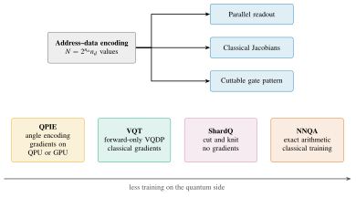
Section 4.2 fixes the notation for the address–data encoding and the design axes on which we compare methods. Sections 4.3 to 4.6 present the four systems. Section 4.7 compares them on common axes, states their shared design principles and limitations, and draws the bridges to Chapters III and V to VII. Section 4.8 summarizes.
4.2Preliminaries: Vectorized Encodings and Design Axes
Sections 2.5 and 2.6 give the general background on data encodings and circuit cutting. This section only fixes the notation of the chapter and the axes on which the four methods are compared.
4.2.1Address–Data Encodings
Let \(\bm{x} \in [-1,1]^{N}\) be a real vector with \(N = 2^{n_a} n_d\), indexed as \(x_{k,j}\) with address \(k \in \{0,\dots,2^{n_a}-1\}\) and data index \(j \in \{1,\dots,n_d\}\). The QCrank encoding [59] prepares \[\ket{\psi(\bm{x})} \;=\; \frac{1}{\sqrt{2^{n_a}}} \sum_{k=0}^{2^{n_a}-1} \ket{k}_A \otimes \bigotimes_{j=1}^{n_d} R_y(\theta_{k,j})\ket{0}_{D_j}, \qquad \theta_{k,j} = \arccos x_{k,j}, \tag{4.1}\] by a layer of Hadamard gates on the address register \(A\), followed by the uniformly controlled rotation (UCR) \(U_j = \sum_k \ket{k}\!\bra{k} \otimes R_y(\theta_{k,j})\) for each data qubit \(D_j\). Following Möttönen et al. [60], \(U_j\) is compiled into \(2^{n_a}\) single-qubit \(R_y\) rotations interleaved with \(2^{n_a}\) CNOT gates. A Walsh–Hadamard transform of \(\{\theta_{k,j}\}_k\) gives the rotation angles, and the CNOT controls follow a Gray-code sequence over the address qubits. The CNOT count is therefore exactly \(n_d 2^{n_a} = N\) and the depth is \(\mathcal{O}\!\left(2^{n_a}\right)\). The pattern is independent of the data, so it can be pre-compiled and, in Section 4.5, cut.
A measurement of all qubits in the computational basis yields, in each shot, an address \(k\) and a bit \(b_j\) for every data qubit. Conditioned on address \(k\), \(\Pr(b_j = 1 \mid k) = \sin^2(\theta_{k,j}/2) = (1 - x_{k,j})/2\). So with \(S_k\) shots on address \(k\) the estimator \[\hat{x}_{k,j} \;=\; 1 - 2\hat{p}_{k,j}, \qquad \operatorname{Var}\big(\hat{x}_{k,j} \mid S_k\big) \;=\; \frac{4\,p_{k,j}(1-p_{k,j})}{S_k} \;=\; \frac{1 - x_{k,j}^2}{S_k}, \tag{4.2}\] is unbiased with binomial shot noise, where \(p_{k,j} = \Pr(b_j = 1 \mid k)\). Because the address register is uniform, \(S_k\) is multinomial with mean \(S/2^{n_a}\) for \(S\) shots in total. Every one of the \(N\) values is estimated from the same run: the readout is quantum-parallel in the sense of [59]. We use \(\varepsilon\) for the target additive error per value, so \(S = \mathcal{O}\!\left(2^{n_a}/\varepsilon^2\right)\) shots suffice for all values simultaneously, up to logarithmic factors. Equations (4.1) and (4.2) are the only two facts about the encoding that the rest of the chapter uses. QCrank was demonstrated on trapped-ion and transmon devices in [59], its pixel-encoding predecessor QPIXL in [58], and its relation to block encodings in [63].
4.2.2Design Axes for Quantum Learning Primitives
We compare the four methods on four axes that follow directly from RQ2.
Where the nonlinearity lives. A learning model needs nonlinear maps, and a quantum circuit is linear in the state. So the nonlinearity either comes from measurement statistics, as in conventional variational classifiers [119], [120], or sits in a classical layer around the circuit.
Trainability and gradient mechanism. Are the quantum parameters trained at all? Are gradients taken through the quantum processor (parameter shift [121]), through a simulator (adjoint differentiation [118]), or only through classical layers? Is the model exposed to barren plateaus [48]? Where a quantitative statement is possible, we use the spectrum of the empirical Fisher information matrix in the sense of Abbas et al. [122].
Shot scaling. How does the total number of measurements grow with the size of the encoded data? For a vectorized encoding, Equation (4.2) governs this growth.
Hardware compatibility. How do the width and two-qubit depth of the compiled circuit compare with the coherence and connectivity of the device? Can the circuit be cut (Section 2.6)?
Table 4.6 in Section 4.7 records the position of each method on these axes.
4.3Non-Sequential Hybrid Networks: QPIE
4.3.1Motivation and Problem Statement
Quantum transfer learning after Mari et al. [123] stacks a pretrained classical feature extractor, a “dressed” variational quantum circuit and a classical classifier in sequence. The construction is attractive because the classical network absorbs the high-dimensional part of the input. But the sequential arrangement has three costs.
The quantum layer lies on the critical path of every forward pass, so its shot cost and latency are paid on every sample.
The information that reaches the circuit passes through a bottleneck of a few features, one per qubit. So the pretrained parameters, which hold the transferred knowledge, never touch the quantum branch.
Every gradient of the loss with respect to a quantum parameter must be estimated from hardware or simulated. The cost grows with the number of parameters and with the number of shots per expectation value.
QPIE addresses these costs in two ways. It runs the classical and quantum branches in parallel with an exchange of information between them. It also chooses the gradient estimator by the execution back-end [2].
4.3.2Architecture
Figure 4.2 sketches the architecture and one quantum block. The classical branch is a pretrained network \(f_c(\bm{x}; \bm{W})\) whose parameters \(\bm{W}\) may be frozen or fine-tuned. The quantum branch is a variational circuit \(f_q(\bm{x}; \bm{\theta}, \bm{\varphi})\) built from blocks of ten data qubits and two ancilla qubits. The data qubits receive an angle encoding of (a projection of) \(\bm{x}\). The trainable layers consist of parameterized single-qubit rotations of arbitrary angle interleaved with entangling gates. Such rotations are non-Clifford for generic angles, so the blocks lie outside the class that the Gottesman–Knill theorem renders efficiently simulable [83]. This is a necessary (not sufficient) condition for the quantum branch to add expressivity.
The exchange is two-directional. A map \(\bm{\varphi} = g(\bm{W})\) transfers pretrained classical parameters into rotation angles of the quantum block. The transferred knowledge is thus present in the circuit from the first training step. The expectation values of the block are concatenated with the classical features, and a fusion head \(h\) produces the prediction, \[\hat{y} \;=\; h\big(f_c(\bm{x}; \bm{W}),\; f_q(\bm{x}; \bm{\theta}, g(\bm{W}))\big). \tag{4.3}\] In the reference implementation [2] the classical branch is a pretrained ResNet-18 or ResNet-50 whose first two stages stay frozen. The map \(g\) feeds the unlocked pretrained weights into the rotation angles of the variational gates. Up to 28 qubits cover about 45% of the pretrained parameters. The rotation axis of each gate is chosen dynamically from the measured value \(m\) of the preceding block: \(R_x\) for \(m<\tau_1\), \(R_y\) for \(\tau_1\le m<\tau_2\) and \(R_z\) otherwise. The two ancilla qubits carry the exchange switch. The last qubit is measured, and its outcome (0 off, 1 on) decides whether the block exchanges information with the classical layer. The number of ancillas grows with the logarithm of the number of output classes.
In the topology of Equation (4.3) the branches are siblings, not stages, so the quantum block runs concurrently with the classical network. Pretrained information enters the circuit through parameters, not only through activations.
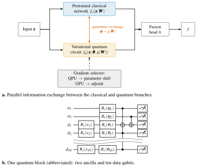
4.3.3Dynamic Gradient Selection
Let \(E(\theta) = \expval{O}\) be an expectation value of a circuit whose dependence on \(\theta\) enters through a gate \(e^{-i\theta P/2}\) with \(P^2 = I\). The parameter-shift rule [121] \[\frac{\partial E}{\partial \theta} \;=\; \tfrac{1}{2}\Big[E\big(\theta + \tfrac{\pi}{2}\big) - E\big(\theta - \tfrac{\pi}{2}\big)\Big] \tag{4.4}\] is exact and requires only expectation values, so it is the estimator of choice on hardware. Its cost is two circuit executions of \(S\) shots per parameter, or \(2PS\) shots per gradient for \(P\) parameters. On a state-vector simulator the adjoint method [118] computes the whole gradient with one forward and one backward sweep over the state. Its cost is independent of \(P\), up to the \(\mathcal{O}\!\left(2^n\right)\) memory of the state. QPIE inspects the execution back-end at run time and selects Equation (4.4) for quantum processors and adjoint differentiation for GPU simulators. Nothing else in the training loop changes.
The result reported in [2] is a speed-up of up to \(30\times\) for the GPU-simulated path over the CPU-simulated path. This made the 28-qubit configurations described next trainable. The containerized A100 workflow was the one developed for Q-GEAR in Chapter III.
4.3.4Experimental Setup and Results
Experiments were run on the Amazon Braket SV1 state-vector simulator, on the IonQ Aria-1 trapped-ion processor and on local NVIDIA A100 GPUs. The circuits had up to 28 qubits built from blocks of ten data and two ancilla qubits [2]. The implementation is a PyTorch model with the quantum blocks expressed in PennyLane, packaged as a container image. The image (a PennyLane Dockerfile and a PyTorch 24.06 Shifter image) targets an A100 with 80 GB of memory for the adjoint-differentiated path. Seven tasks were used:
the Moon and Spiral two-dimensional toy classification sets;
the Hymenoptera (ants versus bees) image set used in [123];
a public brain-tumour MRI classification set;
MNIST [124];
the NARMA5 and NARMA10 nonlinear autoregressive time series [125].
The classical baseline is the corresponding classical transfer-learning model reported in the same paper. Table 4.1 collects the accuracies.
| Task | Type | Classical baseline | QPIE |
|---|---|---|---|
| Moon | 2-D toy, binary | 0.93 | 0.95–0.99 |
| Spiral | 2-D toy, binary | 0.90 | 0.96–0.99 |
| Hymenoptera | images, binary | — | — |
| Brain-tumour MRI | images, binary | 0.76 | 0.87–0.91 |
| MNIST | images, 10 classes | 0.81 | 0.93–0.97 |
| NARMA5 / NARMA10 | time series | \(\approx\)88% faster convergence within 100 steps | |
Three further observations from [2] bear on the design axes of Section 4.2.2. First, on the two stochastic time-series tasks the parallel architecture converged roughly 88% faster within a 100-step budget. We attribute this to the transferred parameters, which are present in the circuit from initialization and need not be learned through the activations. Second, the empirical Fisher information matrix of the QPIE model has a less biased spectrum than that of sequential transfer learning. The largest eigenvalues reach approximately 16 against approximately 7. In the framework of [122], a Fisher spectrum less concentrated near zero means a larger effective dimension and less exposure to the vanishing gradients of [48]. We read it as evidence that the parameter exchange, not merely the added parameters, changes the geometry of the loss.
Third, the dynamic gradient selection delivered the GPU speed-up quoted above without any change to model code. This is the portability that RQ1 asked for and that Chapter III pursued at the simulator level.
4.3.5Discussion
The evidence for QPIE is strongest where the datasets are small and the baseline is a like-for-like transfer-learning model. It does not establish an advantage over state-of-the-art classical models on the same tasks, and the paper does not claim one. The contribution is architectural. The parallel placement of the quantum block removes it from the critical path and lets the compiler overlap its execution with the classical network. It also makes the choice of gradient estimator a property of the back-end, not of the model. The shot cost of Equation (4.4) on hardware remains linear in the number of quantum parameters. This is the axis on which the remaining three systems move (Figure 4.1).
4.4Vectorized Attention: VQT
4.4.1From Attention to Dot Products
The scaled dot-product attention of Vaswani et al. [126] maps queries \(Q\), keys \(K\) and values \(V\), each a \(T \times d\) matrix per sequence, to \[\operatorname{Attn}(Q,K,V) \;=\; \operatorname{softmax}\!\Big(\frac{QK^{\top}}{\sqrt{d}} + M\Big)\,V, \tag{4.5}\] where \(M\) is the causal mask. For a batch of \(B\) sequences the score matrix \(QK^\top\) costs \(\mathcal{O}\!\left(BT^2 d\right)\) multiply–adds and is the quadratic bottleneck of the architecture. Some previous quantum sequence models implement recurrent or attention layers as variational circuits, as in the quantum LSTM of Chen et al. [127]. Others realise attention through linear combinations of unitaries and polynomial transformations of block encodings, as in Quixer [128]. Both place the trainable parameters inside the circuit.
VQT takes a narrower view. The only quantum-native operation in Equation (4.5) is the dot product. A \(\tanh\) projection bounds the entries of \(Q\) and \(K\) to \([-1,1]\). A product of two bounded numbers is a product of two cosines. The vectorized encoding of Equation (4.1) forms all \(BT^2\) such products in one superposition [3].
4.4.2The Vectorized Quantum Dot Product
Let \(\mathcal{I}\) be the index set of the products \(x_k y_k\) to be formed, enumerated by an address register of \(n_a = \lceil \log_2 |\mathcal{I}| \rceil\) qubits. For the masked score matrix of a batch, \(|\mathcal{I}|\) is proportional to \(BT^2\), so \(n_a = \mathcal{O}\!\left(\log(BT^2)\right)\). Two data qubits \(D_Q\) and \(D_K\) receive the UCRs with angles \(\arccos x_k\) and \(\arccos y_k\). A final CNOT from \(D_Q\) to \(D_K\) writes the parity \(Z_Q Z_K\) onto \(D_K\). In the product state conditioned on address \(k\), \(\expval{Z_Q Z_K}_k = \cos(\arccos x_k)\cos(\arccos y_k) = x_k y_k\), so the estimator \[\hat{c}_k \;=\; 1 - 2\hat{p}_k, \qquad p_k = \Pr(b_K = 1 \mid k) = \frac{1 - x_k y_k}{2}, \tag{4.6}\] is an unbiased estimate of the product. A score \(a_{ts} = \sum_{i} q_{t,i} k_{s,i}\) is the sum of the \(\hat{c}_k\) over the \(d\) addresses that carry the pair \((t,s)\). The circuit has \(2 \cdot 2^{n_a} + 1\) CNOT gates and two-qubit depth \(2^{n_a} + 1\), and the hardware counts in Table 4.2 follow this formula exactly. The complexity reported in [3] is \(\mathcal{O}\!\left(\log(BT^2)\cdot \text{shots}\right)\) in qubits and executions against \(\mathcal{O}\!\left(BT^2 d\right)\) classically. That is, the qubit count is logarithmic in the number of products, while the shot count, by Equation (4.2), is linear in it. We make the second half of that statement precise.
Proposition 4.1 (Shot-noise variance of the VQDP estimator). Let the VQDP circuit on \(n_a\) address qubits be executed \(S\) times, let \(S_k\) be the number of shots that return address \(k\), and let \(\hat{c}_k\) be the estimator of Equation (4.6). Then \(\hat{c}_k\) is unbiased for \(c_k = x_k y_k\) with \[\operatorname{Var}\big(\hat{c}_k \mid S_k\big) \;=\; \frac{4\,p_k(1-p_k)}{S_k} \;=\; \frac{1 - c_k^2}{S_k} \;\le\; \frac{1}{S_k}, \tag{4.7}\] and for a score \(\hat{a} = \sum_{k \in \mathcal{I}_{ts}} \hat{c}_k\) over an index set of size \(d\), \(\operatorname{Var}(\hat{a} \mid \{S_k\}) = \sum_{k \in \mathcal{I}_{ts}} (1 - c_k^2)/S_k\). In expectation over the uniform address distribution, \(\mathbb{E}[S_k] = S/2^{n_a}\), so that \(\operatorname{Var}(\hat{a}) \lesssim d\,2^{n_a}/S\) and \(S = \mathcal{O}\!\left(d\,2^{n_a}/\varepsilon^2\right)\) shots suffice for an additive error \(\varepsilon\) on every score simultaneously, up to logarithmic factors.
Proof sketch. Conditioned on address \(k\), the state of \(D_K\) after the parity CNOT is a mixture whose \(Z\)-expectation is \(c_k\), so each shot on address \(k\) is a Bernoulli trial with success probability \(p_k = (1 - c_k)/2\); the sample mean \(\hat{p}_k\) of \(S_k\) such trials has variance \(p_k(1-p_k)/S_k\), which gives Equation (4.7) after the affine map \(\hat{c}_k = 1 - 2\hat{p}_k\). Shots on distinct addresses are independent, so variances add over \(\mathcal{I}_{ts}\). The address register is prepared in the uniform superposition and is not acted on by the UCRs except as a control, so the address marginal is uniform and \(S_k \sim \operatorname{Binomial}(S, 2^{-n_a})\); substituting the mean and applying a Chernoff bound to the deviation of \(S_k\) from its mean yields the stated shot count. The full derivation, including the treatment of the multinomial fluctuation of \(\{S_k\}\) and the constants under the paper’s normalisation, is given in the appendix of [3]; we have deliberately stated the bound without those constants. ◻
The proposition is both encouraging and sobering. The qubit count grows logarithmically and the two-qubit depth linearly in the number of products. But the shot budget grows linearly, as the operation count of a classical implementation does. The primitive is therefore not a route to an asymptotic speed-up of attention. Its value is that it is an executable attention estimator on present hardware with an error known in closed form. Its Jacobian (\(\partial (x_k y_k)/\partial x_k = y_k\)) is classically available, so no gradient ever needs to be estimated on the quantum processor. This is the “gradient-free” property claimed in [3].
4.4.3Learnable Encoding: VNQE and the Two Attention Heads
The second primitive addresses a weakness of fixed encodings identified by Schuld et al. [129]: the encoding determines which functions the model can represent. The Vectorized Nonlinear Quantum Encoder (VNQE) makes the encoding learnable. A classical angle-learning layer, \(\mathrm{Linear} \to \mathrm{GELU} \to \mathrm{Linear} \to \mathrm{ReLU}\) [130], outputs the rotation angles of a small circuit. The circuit consists of a layer of Hadamard gates, a stack of expressive blocks (parameterized \(R_y\) and \(R_z\) rotations followed by a CNOT ladder), and computational-basis measurements. The measured expectation values are the encoded features. Figure 4.3 shows the encoder next to the plain address–data encoder of Equation (4.1) on which the VQDP is built.
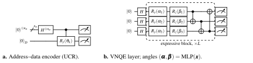
The two primitives are assembled into two attention heads (Figure 4.4). The tanh projection head applies \(\tanh\) projections to \(Q\), \(K\) and \(V\) and estimates the score matrix by the VQDP. The values receive a further \(\tanh\) projection. A masked attention layer then performs the softmax and the multiplication by \(V\) classically. The expressive quantum head replaces the \(\tanh\) projections by angle MLPs and inserts a VNQE between the VQDP and the masked attention layer. In both heads all trainable parameters sit in classical layers, and the VQDP is a fixed map with a classically known Jacobian. So back-propagation never requires a parameter-shift evaluation on the quantum processor.
During training the quantum primitives were evaluated by shot-based simulation on Perlmutter GPU nodes. The expressive block is not differentiated at all. The angle MLP in front of the VNQE is the only trainable part, and the circuit outputs enter the loss as fixed features. The workflow is therefore gradient-free on the quantum side [3], and the hardware runs reported below are inference-only.
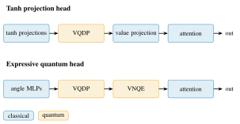
4.4.4Hardware Evaluation of the VQDP
The VQDP was benchmarked as a micro-kernel on an ideal simulator, the IBM Kingston superconducting processor and the IonQ Aria-1 trapped-ion processor [3]. Each address held one query–key product pair. The batch sizes were 4 to 128, with \(n_a = 2\) to \(7\) address qubits plus the two data qubits. The total shot count grew from 10K to 320K with the batch size. The circuits were generated by the quantum-transformer code base and submitted to IonQ through its job API and to IBM through Qiskit. The figure-reproduction scripts and raw hardware data are published with the paper, and the arithmetic identities behind the VQDP were checked symbolically in Mathematica. Table 4.2 lists the circuit statistics and the root-mean-square error (RMSE) of the estimated products against their exact values, and Figure 4.5 plots the RMSE.
| Ideal simulator | IBM Kingston | Aria-1 | ||||||
| Batch | Qubits | #CX | CX depth | RMSE | #CZ | CZ depth | RMSE | RMSE |
| 4 | 4 | 9 | 5 | 0.017 | 18 | 14 | 0.022 | 0.057 |
| 8 | 5 | 17 | 9 | 0.016 | 29 | 25 | 0.023 | 0.155 |
| 16 | 6 | 33 | 17 | 0.017 | 78 | 69 | 0.037 | 0.215 |
| 32 | 7 | 65 | 33 | 0.017 | 164 | 121 | 0.059 | — |
| 64 | 8 | 129 | 65 | 0.016 | 348 | 249 | 0.274 | — |
| 128 | 9 | 257 | 129 | 0.016 | 704 | 514 | — | — |
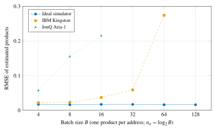
Three features of the data stand out. First, the ideal-simulator RMSE is flat at 0.016–0.017 across a \(32\times\) range of batch sizes. This is what Proposition 4.1 predicts when the total shot count grows in proportion to \(2^{n_a}\), so that the shots per address stay constant.
Second, on IBM Kingston the compiled circuit has roughly two to three times the two-qubit gates of the ideal circuit and a proportionally larger depth. The cause is the routing of the star-shaped address–data connectivity of the UCR onto the heavy-hexagonal coupling map. The RMSE follows the depth. It grows gently from 0.022 to 0.059 up to a CZ depth of 121 and then jumps to 0.274 at depth 249. No result is reported at batch 128. Third, on IonQ Aria-1 the all-to-all connectivity needs no routing, but the two-qubit gates are slower. There the RMSE grows from 0.057 at batch 4 to 0.215 at batch 16, and no results are reported for larger batches.
The paper also shows the reconstructed products as a scatter plot of \(\hat{c}_k\) against the exact \(x_k y_k\). On the simulator the points lie on the diagonal with a width consistent with Equation (4.7). On hardware the cloud both widens and contracts toward zero as depth grows, the signature of depolarizing noise that shrinks the parity expectation. At the level of the full attention matrix, the quantum estimate deviated from the classical one by less than 1.2% with \(3.0\)M shots [3].
4.4.5Language Modelling on the Brown Corpus
To test the primitives inside a complete model, VQT was trained as a small autoregressive language model on the Brown corpus [131]. It was compared with a 125K-parameter nanoGPT [132] and with three published quantum sequence models. These are the quantum LSTM of Chen et al. [127], Quixer [128] and the hybrid quantum transformer of Smaldone et al. [133]. Table 4.3 reproduces the comparison.
| Model | Year | Qubits | Parameters | Perplexity | Loss |
|---|---|---|---|---|---|
| nanoGPT [132] | 2023 | — | 125K | 92.5 | 0.94 |
| Q-LSTM [127] | 2022 | 6 | — | 125.3 | 1.18 |
| Quixer [128] | 2024 | — | — | 117.1 | 1.61 |
| Hybrid quantum transformer | 2025 | — | — | 127.6 | 1.08 |
| VQT, default | 2025 | 6 | — | 105.4 | 1.12 |
| VQT, large encoder | 2025 | 12 | — | 108.2 | 1.08 |
The default VQT configuration with six qubits reaches a perplexity of 105.4 and a loss of 1.12. This beats all three quantum baselines on perplexity. It is within about 14% of the classical nanoGPT, which has no quantum bottleneck and roughly 125K trainable parameters. A larger encoder with twelve qubits lowers the loss to 1.08 but raises the perplexity slightly to 108.2. The two metrics are reported separately in [3], and we read no more into the difference than that the larger encoder does not uniformly help. The comparison is fair in that all quantum models are evaluated on the same corpus. But the baselines were trained under their own published protocols, so the table supports a claim of competitiveness, not of dominance.
4.4.6Discussion
VQT demonstrates the second design principle of the chapter. Nonlinearity and trainability stay on the classical side, and the quantum processor performs a fixed, vectorized, forward-only computation whose error is understood.
The binding constraint that emerged from the hardware evaluation is two-qubit depth. The UCR depth \(2^{n_a}\) doubles with each address qubit, and on a heavy-hex device the routed depth is two to four times larger still. Table 4.2 locates the failure point of the 2025 IBM Kingston processor between a CZ depth of 121 and 249. Another factor of four in the encoded data therefore needs better hardware or a compiler that divides the encoding into pieces the hardware can execute. ShardQ is that compiler.
4.5Hardware-Aware Circuit Knitting for Encodings: ShardQ
4.5.1Problem: Encodings That Do Not Fit
A 1,000-pixel grey-scale image encoded by Equation (4.1) needs \(n_a = 9\) address and \(n_d = 2\) data qubits, \(2 \times 512\) CNOT gates before routing, and a two-qubit depth of the order of 512. This is well beyond what Table 4.2 showed to be executable. Circuit cutting offers a way out.
A two-qubit gate can be replaced by a quasi-probability decomposition (QPD) into local operations on its two qubits [66], [67], [68]. For a CNOT or CZ gate, \(U = \sum_i c_i A_i \otimes B_i\) with \(\sum_i |c_i| = \gamma = 3\). Any expectation value of the original circuit is then recovered as a signed combination of expectation values of the two disconnected sub-circuits. The sampling overhead is \(\gamma^2 = 9\) per cut and hence \(\mathcal{O}\!\left(3^{2k}\right)\) for \(k\) cuts.
Classical communication between sub-circuits can reduce the overhead [69], and general-purpose cutters such as CutQC [70] choose where to cut by partitioning the circuit graph. None of these methods looks at the device. The premise of ShardQ has two parts [4]. First, for an encoding circuit whose structure is fixed by Equation (4.1), the address–data structure of the encoder itself determines the right place to cut. The gates that span the longest virtual-qubit distance cost most on a device with limited connectivity. Second, the sub-circuits are encodings themselves, so they have low entanglement and can be compiled approximately.
4.5.2SparseCut: Deterministic Cut Selection by Entanglement Distance
SparseCut, given in Algorithm 1, works on the address–data structure of the encoder, not on a generic circuit graph. It collects every two-qubit gate that couples an address qubit \(q_i\in A\) to a data qubit \(q_j\in D\) and scores each such gate by the virtual-qubit distance \[d(g) \;=\; \lvert i - j\rvert,
\tag{4.8}\] and then sorts the candidates by \(d\) in descending order. It returns the first \(\min(\lvert G_{\mathrm{cross}}\rvert, k_{\max})\) of them as cuts. The hyper-parameter \(k_{\max}\) (max_cuts in [4]) bounds the \(3^{2k}\) sampling overhead the user is willing to pay.
The rule cuts the longest entanglement distances first, which follows the Gray-code structure of the encoder. There, the gates that span the most qubits are the ones that routing on a heavy-hex device would pay for most. The absolute distance makes the rule independent of the bit ordering of the platform. The dominant cost is the sort, \(\mathcal{O}\!\left(|G| \log |G|\right)\) for \(|G|\) gates. The procedure is deterministic: the same circuit and the same cut budget always give the same cuts.
The device enters through the transpilation of the sub-circuits and through the noise model of the experiments. The noise model was derived from the calibration snapshot of ibm_pittsburgh (median CZ error \(1.46\times10^{-3}\), median \(\sqrt{X}\) error \(1.62\times10^{-4}\)) [4]. Graph-partitioning cutters minimize the number of cut edges. SparseCut instead prefers to cut the gates that would be most expensive to execute, even if that means one more cut.
4.5.3MPS Approximate Compilation and Global Reconstruction
Each sub-circuit produced by SparseCut is itself an address–data encoding on a subset of the qubits. Its output state is a uniform superposition over a smaller address register with product-state data qubits attached. So the entanglement across any bipartition is bounded by the size of the address subregister. The state admits a matrix-product-state (MPS) representation [21], [134] of modest bond dimension.
ShardQ exploits this and compiles each sub-circuit approximately. The target state is written as an MPS with bond dimension truncated to a bound \(\chi\). A shallower circuit that prepares the truncated MPS replaces the original. The discarded Schmidt weights control the truncation error, which trades against depth. The classical side of the pipeline, MPS compilation and the reconstruction described next, runs on GPUs. Configurations with up to two cuts take about 15 s on one 80 GB A100. Four cuts, whose reconstruction involves \(3^{8}\) QPD terms, occupied four GPU nodes for about 24 h [4].
A global quasi-probability reconstruction recombines the outputs of the sub-circuits. With \(k\) cuts indexed by \(i_1,\dots,i_k\) and QPD coefficients \(c^{(m)}_{i_m}\), the expectation of an observable \(O\) on the uncut circuit is \[\expval{O} \;=\; \sum_{i_1,\dots,i_k} \Big(\prod_{m=1}^{k} c^{(m)}_{i_m}\Big)\; \expval{O}_{\text{sub-circuits}(i_1,\dots,i_k)}, \tag{4.9}\] where the right-hand expectation is a product over the sub-circuits of expectation values taken with the local operations selected by the indices. Pairwise knitting evaluates Equation (4.9) one cut at a time: it recombines two sub-circuits into a virtual larger one and repeats. Each stage introduces its own finite-sample error, and the errors compound.
ShardQ instead forms the full sum over the joint index set once, from the measured distributions of all sub-circuits. The reconstruction error is then that of a single estimator, not of a chain of them. The price is the \(3^{2k}\) sampling overhead, which the GPU absorbs. Figure 4.6 summarizes the pipeline.
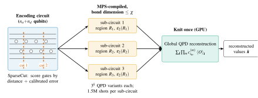
4.5.4Experimental Setup and Results
Experiments were run on two IBM Heron processors. ibm_pittsburgh is a Heron r3 device whose median CZ error was \(1.46\times 10^{-3}\) at the time of the runs. ibm_marrakesh is a Heron r2 device. The encodings had 2–9 address and 2–8 data qubits, including 1,000-pixel images at 9 address and 2 data qubits. Each sub-circuit received \(1.5\)M shots [4]. The implementation (ShardQ_v2) has four parts:
the Qiskit circuit-cutting add-on for the QPD primitives;
the device calibration (two-qubit error, \(T_1\), \(T_2\)), read through the Qiskit runtime;
MPS simulation and compilation on GPUs for circuits beyond 100 qubits;
CutQC-style and random cut selection as baselines for SparseCut.
The baseline for the hardware comparison was the same encoding transpiled by the standard Qiskit pipeline and executed uncut. Reconstruction quality was measured by the RMSE between reconstructed and true values and by a fidelity of the reconstructed value vector.
Across the configurations the cut-and-knit pipeline reduced the RMSE by roughly 15% relative to standard transpilation. For image encodings the fidelity rose from 0.79 for the uncut QCrank circuit to 0.90 with ShardQ at five address qubits, and from 0.75 to 0.88 at seven address qubits. As expected, the gap widens with the number of address qubits: the uncut depth doubles, while the sub-circuit depth stays near the device budget. Table 4.4 records the sampling overhead and the classical cost against the number of cuts.
| Cuts \(k\) | QPD terms \(3^{k}\) | Overhead \(3^{2k}\) | GPU resources | Wall-clock |
|---|---|---|---|---|
| 0 | 1 | 1 | — (uncut baseline) | — |
| 1 | 3 | 9 | one A100 (80 GB) | \(\approx\)15 s |
| 2 | 9 | 81 | one A100 (80 GB) | \(\approx\)15 s |
| 3 | 27 | 729 | — | — |
| 4 | 81 | 6 561 | four GPU nodes | \(\approx\)24 h |
4.5.5Discussion
The result is a compiler result, not an error-mitigation result: no additional shots are spent on mitigation, and no noise model is inverted. The gain comes from shorter circuits on better couplers, paid for with classical resources: MPS compilation and a global reconstruction on GPUs. The exponential overhead in Table 4.4 is the honest limit of the method. Two cuts are cheap, four cuts cost a day on four GPU nodes, and six would be out of reach.
The approach therefore suits encodings that are a small constant factor too deep for the device, exactly the regime that Table 4.2 identified for the VQDP. It also exemplifies the third principle of the chapter, that the compiler should know the device. SparseCut consumes the same calibration data that Chapter VII will treat as a security-relevant fault map, a connection we return to in Section 4.7.4.
4.6Neural-Native Quantum Arithmetic: NNQA
4.6.1Motivation
The three systems so far keep some computation variational or approximate on the quantum side. NNQA asks whether that is necessary at all for a large and useful class of functions. A polynomial neural network has polynomial activations, so the whole network is a multivariate polynomial of bounded degree. Such a network can be trained with ordinary classical machinery. A polynomial is exactly the function class that quantum arithmetic on real-valued encoded states can evaluate. The EHands protocol of Balewski et al. [62] showed how to add, scale and multiply values stored as rotation angles in the QCrank convention.
NNQA builds on that lineage. It compiles the trained network into a fixed circuit of native unitary blocks that evaluates the polynomial exactly in the ideal expectation. No optimizer runs on the quantum side, and each input needs a single execution [5]. It displaces two alternatives. The variational quantum eigensolver family [40], [135] pays \(10^2\)–\(10^3\) executions for the optimization loop. Quantum signal processing [64], [136] evaluates polynomials of a block-encoded operator at a depth proportional to the degree and with ancilla overhead.
4.6.2Arithmetic Blocks on Real-Valued Encoded States
A real value \(x \in [-1,1]\) is stored as \(R_y(\arccos x)\ket{0}\), so that \(\expval{Z} = x\). Two blocks suffice for polynomials. The multiplication block places \(m\) such qubits side by side and accumulates their parity onto the last qubit by a chain of \(m-1\) CNOT gates. Since the qubits are in a product state, \[\expval{Z_1 Z_2 \cdots Z_m} \;=\; \prod_{i=1}^{m} x_i, \tag{4.10}\] and in particular \(m\) copies of the same input give the monomial \(x^m\). The weighted-sum block uses an ancilla prepared in \(\sqrt{w}\ket{0} + \sqrt{1-w}\ket{1}\). The ancilla selects, by an open and a closed control, which of two sub-blocks acts on a shared output qubit. The output expectation is the convex combination \[\expval{Z_{\mathrm{out}}} \;=\; w\,f_1 + (1-w)\,f_2, \tag{4.11}\] and nested ancillae extend this to sums of more terms. Signs and scales are absorbed into the rotation angles. Figure 4.7 shows both blocks schematically. The degree-6 example of [5] (seven qubits, five CNOT gates, depth 19) matches this construction. It has six encoded copies of the input, a five-gate parity chain, and one ancilla for the weighted sum of the monomials.
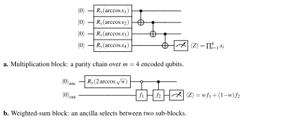
4.6.3Compilation and Universal Approximation
Figure 4.8 shows the compilation. A polynomial network \(P_{\bm{W}}(\bm{x}) = \sum_{|\alpha| \le D} a_\alpha(\bm{W}) \bm{x}^\alpha\) is trained classically, and its coefficients are normalized so that all intermediate values lie in \([-1,1]\). Each monomial maps to a multiplication block and the weighted sum of monomials to a tree of weighted-sum blocks. The resulting circuit is transpiled for the target device. The compilation is exact: the ideal expectation value of the compiled circuit equals the normalized polynomial. The only errors are shot noise and hardware noise. This gives an approximation guarantee for free.
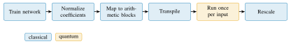
Theorem 4.2 (Universal approximation by NNQA circuits; after [5]). Let \(f \colon [-1,1]^n \to [-1,1]\) be continuous and let \(\varepsilon> 0\). There exist a degree \(D\), a polynomial network \(P_{\bm{W}}\) of degree at most \(D\), and an NNQA circuit \(C_{\bm{W}}\) on finitely many qubits (\(D+1\) in the univariate case) composed of the blocks of Section 4.6.2, such that the ideal expectation value \(E_{C_{\bm{W}}}(\bm{x})\) of the designated output qubit satisfies \(\sup_{\bm{x} \in [-1,1]^n} |E_{C_{\bm{W}}}(\bm{x}) - f(\bm{x})| < \varepsilon\). With \(S\) shots per input the estimate deviates from \(E_{C_{\bm{W}}}(\bm{x})\) by at most \(\varepsilon\) with probability \(1 - \delta\) whenever \(S = \Omega(\log(1/\delta)/\varepsilon^2)\).
Proof sketch. By the Weierstrass approximation theorem—or, for networks with sigmoidal rather than polynomial activations, by Cybenko’s theorem [137]—polynomials are dense in \(C([-1,1]^n)\), so a polynomial \(P\) of some degree \(D\) exists with \(\sup |P - f| < \varepsilon/2\); a polynomial network can represent any such \(P\) exactly. Because the values are bounded, \(P\) can be rescaled so that every monomial and every partial sum lies in \([-1,1]\), and the scale is restored classically after measurement. Each monomial \(\bm{x}^\alpha\) with \(|\alpha| \le D\) is realized exactly by a multiplication block of \(|\alpha|\) qubits (Equation (4.10)), and the weighted sum of \(\mathcal{O}\!\left(n^D\right)\) monomials by a tree of weighted-sum blocks whose ancilla amplitudes encode the normalized coefficients (Equation (4.11)); the qubit count grows with the degree, \(D+1\) qubits in the univariate case, and the circuit computes \(P\) exactly in the ideal expectation. The shot-noise statement is Hoeffding’s inequality for the bounded random variable \(Z_{\mathrm{out}} \in \{-1,+1\}\). The full proof, including the treatment of multivariate inputs and the accounting of ancilla qubits, is given in [5]. ◻
The theorem is deliberately modest. It asserts nothing about speed-up. Its content is that the class of functions reachable without any quantum optimization is universal. The polynomial degree that classical training selects sets the cost of reaching a given function.
4.6.4Resource Model
Figure 4.9 compares the resource model of NNQA with the variational and signal-processing alternatives, with the anchor points reported in [5]:
a degree-6 polynomial costs NNQA seven qubits, five CNOT gates and depth 19 in a single execution of 4,096 shots;
the degree-35 stress test cost NNQA 36 qubits and depth 70;
a variational approach to the same targets needs 6–12 qubits, depth 20–100 and \(10^2\)–\(10^3\) executions for the optimization loop;
quantum signal processing needs of the order of 10–100 qubits at depth around 50.
The qubit count of NNQA grows linearly with the degree, one qubit per multiplication, which is the price of exactness. But the depth grows slowly, and the number of executions is one.
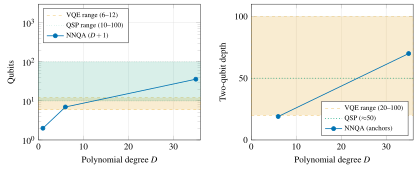
4.6.5Hardware Results
The compiled circuits were executed on the IBM Heron r3 processor ibm_boston (156 qubits), the IBM Nighthawk processor ibm_miami and the IonQ Forte-1 trapped-ion processor. Classical training used A100 nodes of the Perlmutter system, the same platform as Chapter III [5]. The nnqa toolkit trains the polynomial network, maps its weights to rotation angles, and emits the weighted-sum and multiplication primitives as Qiskit circuits. It also provides cloud-job scripts for the IBM Heron and Nighthawk back-ends. Table 4.5 summarizes the outcomes.
On ibm_boston the RMSE between the hardware estimate and the exact polynomial was 0.020–0.024 for degrees 1 to 6, with correlations of 0.995–0.999. The ideal simulator gave 0.013–0.018 at the same 4,096 shots. On ibm_miami (10,000 shots) the RMSE was 0.008–0.014 with correlations above 0.999, and every evaluation point passed. On IonQ Forte-1 the RMSE was 0.011–0.019 for degrees 1 to 6 and 0.004–0.009 in the stress test from degree 1 to 35. The correlations were above 0.999 up to degree 30 and 0.995 at degree 35 (36 qubits, depth 70). The drop marks the coherence limit of the device.
The pass rate is the fraction of evaluation points inside the \(\pm0.03\) band set by the \(2\sigma\) shot-noise interval. It was 74–86% on the Heron r3 device, 100% on Nighthawk and 92–99% on Forte-1. The difference reflects the sensitivity of the parity chain to readout and two-qubit errors on the superconducting device. The trapped-ion device has all-to-all connectivity and executes the chain without routing.
| Device | Degrees | RMSE | Correlation | Pass rate |
|---|---|---|---|---|
ibm_boston (Heron r3) |
1–6 | 0.020–0.024 | 0.995–0.999 | 74–86% |
ibm_miami (Nighthawk) |
1–6 | 0.008–0.014 | \(\ge 0.9994\) | 100% |
| IonQ Forte-1 | 1–6 | 0.011–0.019 | 0.997–0.999 | 92–98% |
| IonQ Forte-1, stress test | 1–35 | 0.004–0.009 | \(\ge 0.9994\) (\(0.9948\) at 35) | 98–99% |
4.6.6Discussion
NNQA is the end point of the trajectory that began with QPIE (Figure 4.1). The quantum processor performs a single, fixed, exact computation whose structure is decided entirely by classical training and compilation.
Its limitations are the mirror image of its strengths. The normalization that keeps all intermediate values in \([-1,1]\) shrinks the signal as the degree grows. So the shot count for a fixed absolute error on the unnormalized output increases with the degree. This is where the \(\varepsilon^{-2}\) of Theorem 4.2 bites. The parity chain makes the output sensitive to a single readout error on any of its qubits, which is visible in the Heron pass rates. Finally, the method evaluates the polynomial for one input vector per circuit. Batched inputs across an address register, as in Equation (4.1), are the natural next step and would bring NNQA back into contact with the VQDP.
4.7Synthesis
4.7.1Four Methods on Common Axes
Table 4.6 places the four systems on the axes of Section 4.2.2, and Figure 4.1 shows the same movement. QPIE trains quantum parameters with gradients estimated on the quantum processor, at a shot cost that scales with their number. VQT keeps trainable parameters classical and pays shots linearly in the amount of encoded data. ShardQ is a compiler with no trainable parameters and a classical cost exponential in the number of cuts. NNQA trains classically and executes once. The maximum qubit counts run from 28 in simulation for QPIE to 36 on hardware for NNQA. The hardware base broadens from one trapped-ion device to three superconducting generations and two trapped-ion devices.
| Axis | QPIE | VQT | ShardQ | NNQA |
|---|---|---|---|---|
| Encoding | angle encoding into non-Clifford variational blocks (10 data \(+\) 2 ancilla) | UCR address–data (VQDP); learnable VNQE | UCR address–data, gate-cut into sub-circuits | real-valued encoded states; exact arithmetic blocks |
| Trainable? | yes: quantum and classical parameters | yes: classical layers only; quantum primitives forward-only | no (compiler) | yes: classical training, then compilation |
| Gradient method | parameter shift on QPU; adjoint on GPU | classical back-propagation; VQDP Jacobian known | none | classical only |
| Shot scaling | \(2PS\) per gradient for \(P\) quantum parameters | linear in encoded products: \(S=\mathcal{O}\!\left(d\,2^{n_a}/\varepsilon^2\right)\) | \(1.5\)M shots per sub-circuit; \(3^{2k}\) overhead for \(k\) cuts | one execution of 4,096 shots; \(\mathcal{O}\!\left(\varepsilon^{-2}\right)\) |
| Hardware tested | Braket SV1, IonQ Aria-1, A100 simulator | IBM Kingston, IonQ Aria-1, ideal simulator | IBM Heron r3 ibm_pittsburgh, Heron r2 ibm_marrakesh |
IBM Heron r3 ibm_boston, Nighthawk ibm_miami, IonQ Forte-1 |
| Max qubits | 28 (simulation) | 9 (hardware) | 11 (9 address \(+\) 2 data) | 36 (hardware) |
4.7.2Common Design Principles
Three principles recur.
Vectorize the readout. Every method that touches an address register reads all encoded values from the same shots. The shot budget is thus set by the precision per value, not by the dimension of the state. Every error bound in the chapter (Equation (4.2), Proposition 4.1, the shot clause of Theorem 4.2) is a binomial or Hoeffding bound that follows from this fact.
Move nonlinearity to the classical side. VQT places \(\tanh\) projections, angle MLPs and the softmax in classical layers around a linear-in-cosines quantum core. NNQA goes further and moves training itself off the processor. Even QPIE, the most conventional of the four, routes the transferred knowledge through a classical parameter map. Gradients through the quantum processor are therefore avoided (VQT, NNQA) or optional (QPIE). This removes the dominant shot cost of variational training and, because the quantum circuits are shallow and structured, sidesteps barren plateaus by construction.
Make the compiler hardware-aware. ShardQ chooses its cuts from the coupling map and the calibration snapshot. The pass rates of NNQA show that the same arithmetic circuit fares differently on heavy-hex and all-to-all devices. The encoding fixes the circuit, and the compiler, not the model, should absorb the device.
4.7.3Limitations
The limitations are equally shared. Readout is the cost centre. Information leaves the processor only through measurement statistics, so every method pays \(\mathcal{O}\!\left(\varepsilon^{-2}\right)\) shots per estimated value. For VQT the total shot count is linear in the amount of encoded data. So none of the primitives offers an asymptotic advantage in shots over a classical implementation of the same arithmetic. What they offer is qubit counts logarithmic in the data and circuits that run on present devices with known error.
The avoidance of barren plateaus by construction also bounds expressivity. The quantum cores of VQT and NNQA compute products and weighted sums of cosines, and their representational power comes from the classical layers around them. This raises a fair question that these papers do not settle: how much does the quantum core add beyond a classical layer of the same size? Depth remains the hardware constraint. The UCR depth \(2^{n_a}\) doubles per address qubit, and the remedy of ShardQ has an exponential classical cost in the number of cuts. Finally, the empirical comparisons are against like-for-like quantum baselines or small classical models. None of the four papers claims, and this chapter does not claim, an advantage over state-of-the-art classical learning systems.
4.7.4Relation to the Other Chapters
The chapter draws on and feeds the rest of the dissertation in four places.
The GPU simulation pipeline of Q-GEAR (Chapter III) supplied the containerized A100 workflow for the simulator-side experiments of QPIE, VQT and ShardQ. The adjoint-differentiated training of QPIE, the ideal-simulator reference of Table 4.2, and the MPS compilation and global reconstruction of Section 4.5.3 all ran there.
The Quantum Approximate Walk Algorithm of Chapter V shares with this chapter the idea of a data-traceable oracle. QAWA builds its optimization oracle from mid-circuit measurement data in the same address–data convention, so the encoding of Equation (4.1) is the common substrate of Chapters IV and V.
The exact arithmetic of NNQA is the coherent counterpart of the measure-and-reload step whose cost Chapter VI accounts for in the direct simulation of nonlinear waves. There, the nonlinearity is applied classically between measurement and reload, at \(\mathcal{O}\!\left(\varepsilon^{-2}\right)\) shots per step. NNQA instead applies a polynomial nonlinearity coherently on encoded values. This is exactly the primitive that the cost model of Chapter VI identifies as the target for an end-to-end advantage.
The reliance of ShardQ on the calibration snapshot anticipates the concern of Chapter VII. The physical-to-logical fault map that a hardware-aware compiler exploits is, on a shared cloud processor, information that an adversary could exploit too. The auditing framework of Chapter VII is designed for exactly the encoders whose structure this chapter has shown to be fixed and public.
4.8Summary
This chapter answered RQ2 by treating the classical–quantum data interface as the object of design. A single family of vectorized, address–data encodings supplied four learning primitives with closed-form shot costs and hardware-friendly structure.
QPIE showed that a variational quantum block can leave the critical path of a hybrid network and receive transferred knowledge through its parameters. Its gradient estimator is chosen by the back-end. It improved accuracy over sequential transfer learning on the classification tasks with reported baselines and convergence speed on two time-series tasks [2].
VQT showed that the quadratic core of attention can be estimated by a forward-only vectorized dot product with \(\mathcal{O}\!\left(\log(BT^2)\right)\) qubits and a provable shot-noise bound. It was executed on IBM and IonQ hardware, and the resulting six-qubit language model is competitive with prior quantum transformers on the Brown corpus [3].
ShardQ showed that encodings too deep for a superconducting device can be cut with a deterministic, distance-ordered algorithm. The pieces are compiled approximately as matrix-product states and knitted globally on GPUs. This reduced reconstruction error by about 15% and raised the fidelity of 1,000-pixel image encodings on IBM Heron processors [4].
NNQA showed that a classically trained polynomial network can be compiled into exact quantum arithmetic with a universal-approximation guarantee and executed once per input. It reached better than 99.5% accuracy up to degree 35 on IBM and IonQ hardware [5].
The common lesson is to vectorize the readout, keep nonlinearity classical and make the compiler know the device. It is carried forward to the synthesis and cost-accounting questions of Chapter VI and to the security of structured encoders in Chapter VII.
Chapter VHardware-Aware Optimization on Noisy Devices
This chapter addresses RQ3: how optimisation algorithms on noisy intermediate-scale quantum (NISQ) devices can use the structure of the problem and of the hardware instead of black-box search over circuit parameters. The quantum approximate optimisation algorithm (QAOA) and its variational relatives promise to solve combinatorial problems on today’s processors. In practice, their classical outer loop consumes thousands of noisy circuit evaluations. Their landscapes flatten as circuits deepen, and their output distributions are hard to interpret and impossible to verify at scale. We present two responses.
Part A introduces DEAL, Direct Entanglement Ansatz Learning. DEAL derives the circuit angles directly from the coefficients of the quadratic unconstrained binary optimisation (QUBO) problem. It places the logical qubits on the physical device according to the same coefficients and the device’s calibration data. It entangles them with a mixer of maximally entangling native gates, and it mitigates the residual noise with an adaptive digital zero-noise extrapolation. Part B introduces QAWA, the Quantum Approximate Walk Algorithm. QAWA replaces the problem-derived ansatz by a classical-data-traceable oracle of linear two-qubit depth. It learns approximate solution patterns through a distributed quantum-walk procedure, and it makes the outputs interpretable and verifiable in polynomial time through classical preprocessing of mid-circuit measurement data.
Both methods were validated on IBM Heron processors, and both were first checked with the GPU simulation pipeline of Chapter III. The chapter closes with a contrast of the two sources of structure, the problem and the data, and shows how the second leads into the vectorised encodings of Chapter IV.
5.1Introduction and Motivation
Combinatorial optimisation is the application most often proposed for near-term quantum computers, and QAOA [43] is the algorithm most often proposed for it. The reasons are practical. QAOA circuits are shallow, and their structure follows directly from the cost function. Any problem that can be written as a QUBO can be run without further algorithmic invention. Such problems include MaxCut, the travelling salesman problem (TSP), knapsack, portfolio selection and many others [41].
The difficulties are equally practical and documented extensively [40], [44], [46]. QAOA is a variational algorithm. For a circuit of \(p\) layers, a classical optimiser must find the \(2p\) angles \((\bm{\gamma},\bm{\beta})\). The optimiser treats the quantum processor as a black box and evaluates the energy at hundreds or thousands of parameter settings. Each evaluation costs thousands of shots on a device whose calibration drifts over the hours that such a run takes. Shot noise and gate errors corrupt the landscape that the optimiser sees.
As the number of qubits and layers grows, the landscape becomes exponentially flat [48], and the optimiser converges to spurious minima or not at all. Deeper circuits should approximate the optimum better. But on hardware, each additional layer adds two-qubit gates whose errors compound. Beyond a device-dependent depth, the output distribution collapses toward uniform noise. Finally, even when the algorithm returns a good bit string, it is hard to say why. The output is a sample from an entangled state, which cannot be reconstructed without state tomography, whose cost grows exponentially with the number of qubits.
The thesis statement of this dissertation (Chapter I) proposes co-design as the remedy: the algorithm should use the structure available to it rather than rediscover it by search. In the optimisation setting, two sources of structure exist, and this chapter uses both. The first is the problem itself. The QUBO matrix \(Q\) tells us which variables interact strongly and which weakly. This information can be turned directly into circuit angles and into a placement of logical variables on physical qubits. The optimiser then starts near a good solution, or does not need to run at all.
The second source is the hardware. Every IBM Quantum backend publishes calibration data: the coupling map, the two-qubit and readout error rates, and the coherence times. These data tell us which qubits and couplers should carry the most important interactions, and how noise should be scaled to extrapolate it away. DEAL combines these two sources. QAWA adds a third, the classical data that define an instance, such as asset returns in a portfolio problem. An oracle can encode these data so that every output is a closed-form function of the inputs. This makes the algorithm interpretable and verifiable in a way that a generic variational ansatz can never be.
The chapter is organised as follows. Section 5.2 fixes the QUBO and QAOA notation and states the problem precisely. Sections 5.3 to 5.5 present the design, the experimental setup and the results of DEAL on the IBM Torino and IBM Marrakesh processors. Sections 5.6 and 5.7 do the same for QAWA on IBM Pittsburgh. Section 5.8 discusses limitations, Section 5.9 relates the two methods to each other and to the neighbouring chapters, and Section 5.10 summarises.
5.2Problem Statement and Preliminaries
The general background on NISQ hardware and variational algorithms is in Sections 2.3 and 2.4. Here we fix notation. A QUBO instance is a symmetric matrix \(Q\in\mathbb{R}^{n\times n}\) and asks for \[\bm{x}^{\star} = \mathop{\mathrm{arg\,min}}_{\bm{x}\in\{0,1\}^{n}} \bm{x}^{\top} Q \bm{x} = \mathop{\mathrm{arg\,min}}_{\bm{x}} \Bigl(\sum_{i} Q_{ii}x_{i} + 2\sum_{i<j} Q_{ij}x_{i}x_{j}\Bigr). \tag{5.1}\] Constraints, such as the one-hot conditions of the TSP or the capacity condition of the knapsack problem, are folded into \(Q\) as penalty terms [41], [42]. The substitution \(x_{i}=(1-Z_{i})/2\) maps Equation (5.1) to an Ising cost Hamiltonian \[H_C = \sum_{i} h_{i} Z_{i} + \sum_{i<j} J_{ij} Z_{i}Z_{j} + \text{const}, \tag{5.2}\] whose ground state encodes \(\bm{x}^{\star}\), with \(h_{i}\) and \(J_{ij}\) linear in the entries of \(Q\). QAOA prepares the state \[\ket{\bm{\gamma},\bm{\beta}} = \prod_{k=1}^{p} e^{-i\beta_{k}H_M}\, e^{-i\gamma_{k}H_C}\, \ket{+}^{\otimes n}, \qquad H_M = \sum_{i} X_{i}, \tag{5.3}\] and minimises \(E(\bm{\gamma},\bm{\beta})=\expval{H_C}{\bm{\gamma},\bm{\beta}}\) over the \(2p\) angles with a classical optimiser. The answer is the most frequent low-energy bit string among the samples of the optimised state.
The cost layer \(e^{-i\gamma_{k}H_C}\) compiles to one \(R_{Z}\) rotation per qubit and one \(R_{ZZ}\) rotation per non-zero \(J_{ij}\). Each \(R_{ZZ}\) requires two native two-qubit gates and, if the coupling map does not contain the edge \((i,j)\), a chain of SWAP gates. The mixer compiles to one \(R_{X}\) per qubit. On a 20-qubit dense instance, the two-qubit gate count therefore grows as \(p\,|E|\) with \(|E|\) up to \(\binom{20}{2}=190\). Every one of those gates contributes a median error of a few times \(10^{-3}\) on current hardware (Table 5.1).
The problem addressed by this chapter can now be stated. The inputs are a QUBO \(Q\), a device with coupling graph \(G_{\mathrm{dev}}=(V_{\mathrm{dev}},E_{\mathrm{dev}})\) and calibration data (two-qubit error rates \(\{E_{uv}\}_{(u,v)\in E_{\mathrm{dev}}}\) and readout errors \(\{r_{u}\}\)), and a shot budget. The task is to produce a circuit and a post-processing procedure that
reach a given success probability \(P_{\mathrm{succ}}\), the probability that a sample is an optimal bit string, with as few circuit evaluations and as few two-qubit gates as possible;
degrade gracefully as noise increases;
return an output whose quality can be judged without exponential-cost verification.
DEAL addresses (i) and (ii): it removes the outer loop and makes the circuit hardware-aware. QAWA addresses (iii), and (i) through linear-depth oracles.
5.3DEAL: Direct Entanglement Ansatz Learning
DEAL consists of five components, illustrated in Figure 5.1 and formalised in Algorithm 2:
a normalisation of the QUBO coefficients into per-qubit priorities (Section 5.3.1);
a closed-form initialisation of the angles from these priorities (Section 5.3.2);
an entanglement-based ansatz (Section 5.3.3);
a dynamic mapping of logical to physical qubits, driven by the priorities and the calibration data (Section 5.3.4);
an adaptive digital zero-noise extrapolation, with a noise-normalised error metric and a Bayesian rule for the number of layers (Section 5.3.5).
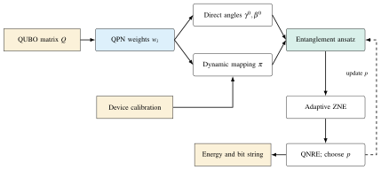
5.3.1Qubit Prioritization Normalization
A QUBO matrix is not uniform. A few variables typically carry most of the coupling weight, because they appear in many constraint penalties or because their objective coefficients are large. Qubit Prioritization Normalization (QPN) quantifies this by the row sums of the absolute coefficients, \[s_{i} = \sum_{j} \lvert Q_{ij}\rvert, \qquad w_{i} = \frac{s_{i}}{\sum_{l} s_{l}}, \qquad \sum_{i} w_{i} = 1, \tag{5.4}\] so that \(w_{i}\in[0,1]\) is the share of the total interaction magnitude of the instance that involves variable \(i\). For a MaxCut instance on a regular graph, all \(w_{i}\) are equal. For a TSP with one-hot constraints, the variables that appear in more penalty terms receive larger weights. For a knapsack instance, the weights reflect item values and the capacity penalty.
QPN is a linear-time preprocessing step, computed once per instance. Two downstream components use its output: the angle initialisation uses \(w_{i}\) as an amplitude, and the physical mapping uses \(w_{i}\) as a placement priority. We also use the normalised pairwise weights \(w_{ij}=\lvert Q_{ij}\rvert/\sum_{k<l}\lvert Q_{kl}\rvert\) to weight the edges of the interaction graph.
5.3.2Direct Angle Initialisation
DEAL does not start the QAOA angles at random or at a generic linear ramp. It sets them in closed form from the QPN weights: \[\gamma_{k}^{0} = \frac{\lambda_{\gamma}\, k}{n\,p}\sum_{i=1}^{n} \arccos\bigl(1-2w_{i}\bigr), \qquad \beta_{k}^{0} = \frac{\lambda_{\beta}\,(p-k)}{n\,p}\sum_{i=1}^{n} \arcsin\sqrt{w_{i}}, \qquad k=1,\dots,p, \tag{5.5}\] where \(\lambda_{\gamma},\lambda_{\beta}\in(0,\pi]\) are global scale factors, set per problem class. Their defaults in [6] are \(\lambda_{\gamma}=\pi\) and \(\lambda_{\beta}=\pi/2\). Two features of Equation (5.5) deserve comment.
First, the dependence on the layer index is a linear ramp: \(\gamma_{k}\) increases and \(\beta_{k}\) decreases with \(k\). This is the discretised annealing schedule that is known to be a good starting point for QAOA [44], [45]. The ramp is divided by \(p\) so that the total rotation is independent of the depth.
Second, the problem sets the amplitude of the ramp through the trigonometric sums. The angle \(\theta_{i}=2\arcsin\sqrt{w_{i}}\) is exactly the \(R_{Y}\) rotation that prepares a single qubit with excitation probability \(w_{i}\), that is, the amplitude-encoding angle of the priority weight. The identity \(\arccos(1-2w)=2\arcsin\sqrt{w}\) shows that the cost and mixer amplitudes in Equation (5.5) are the same quantity, \(\sum_{i}\theta_{i}\), distributed in opposite directions along the ramp. The initialisation therefore rotates the cost layer more when the instance has a few dominant variables (large \(w_{i}\), angles near \(\pi\)) and less when the weight is spread evenly (all \(w_{i}=1/n\), angles near \(2/\sqrt{n}\)). This matches the intuition that concentrated instances need stronger phase separation per layer.
In the experiments of [6], the angles of Equation (5.5) were used directly, without a subsequent optimiser loop. This removes the thousands of noisy evaluations of vanilla QAOA, and it is what “direct” in the method’s name refers to. Where the budget allows, a short refinement from this starting point is possible and only improves the results. None of the numbers reported below used one.
5.3.3Entanglement-Based Ansatz
The standard QAOA mixer \(H_M=\sum_{i}X_{i}\) acts on each qubit separately. All entanglement comes from the \(R_{ZZ}\) rotations of the cost layer, whose angles \(\gamma_{k}J_{ij}\) are small for the weakly coupled pairs that make up most of a QUBO. DEAL replaces the mixer by two-qubit blocks \[R_{XX+YY}(\beta) = \exp\!\Bigl[-\tfrac{i\beta}{2}\bigl(X\otimes X + Y\otimes Y\bigr)\Bigr] = \begin{pmatrix} 1 & 0 & 0 & 0\\ 0 & \cos\beta & -i\sin\beta & 0\\ 0 & -i\sin\beta & \cos\beta & 0\\ 0&0&0&1\end{pmatrix}, \tag{5.6}\] applied along the edges of the mapped interaction graph, as shown for four qubits in Figure 5.2. The block acts as a rotation in the \(\{\ket{01},\ket{10}\}\) subspace and as the identity on \(\ket{00}\) and \(\ket{11}\). It therefore moves probability between neighbouring configurations of equal Hamming weight, the transition that matters for one-hot and cardinality constraints. It also generates entanglement at every layer, independently of the cost coefficients.
On hardware, each block compiles into two native maximally entangling gates plus single-qubit rotations: the echoed cross-resonance gate on Eagle-generation processors [138], and the CZ gate on the Heron processors used here. The entangling power per block is therefore maximal, and the block count per layer equals that of the \(R_{ZZ}\) cost layer. The resulting ansatz is \[\ket{\psi_{\mathrm{DEAL}}} = \prod_{k=1}^{p}\Bigl[\prod_{(i,j)\in E_{\pi}} R^{(ij)}_{XX+YY}(\beta_{k}^{0})\Bigr]\, e^{-i\gamma_{k}^{0}H_C}\, \ket{+}^{\otimes n}, \tag{5.7}\] where \(E_{\pi}\) is the set of interaction-graph edges that the mapping \(\pi\) of Section 5.3.4 places on adjacent physical qubits.
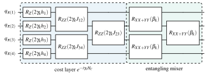
5.3.4Dynamic Physical Mapping
The mapping component places the \(n\) logical variables on the physical qubits. The coupling graph of the device is sparse: on IBM Heron processors it is a heavy-hexagonal lattice of degree at most three. Its qubits and couplers differ in quality by an order of magnitude on any given day. A pair of variables \((i,j)\) mapped to physical qubits at coupling-graph distance \(d(\pi(i),\pi(j))>1\) requires \(d-1\) SWAP gates in every layer. Every gate on the path contributes its calibrated error. DEAL chooses the injective map \(\pi\) that minimises the weighted, error-weighted path length \[C(\pi) = \sum_{i<j} w_{ij}\; d\bigl(\pi(i),\pi(j)\bigr)\; E_{\pi(i)\pi(j)}, \tag{5.8}\] where \(E_{uv}\) is the accumulated two-qubit error along the shortest path from \(u\) to \(v\). Strongly interacting pairs (large \(w_{ij}\)) are thus placed adjacent to each other on low-error couplers, while weakly interacting pairs may be separated.
Exact minimisation of Equation (5.8) is a quadratic assignment problem, so DEAL uses the greedy rule of Algorithm 2:
Sort the logical qubits by their QPN priority \(w_{i}\).
Place the highest-priority qubit on the physical qubit with the lowest aggregated error (two-qubit errors of its couplers plus its readout error).
Place each subsequent qubit on the free physical qubit that minimises its contribution to Equation (5.8) with respect to the qubits already placed.
The mapping is dynamic: it is recomputed from the calibration data of the backend immediately before each submission. A coupler whose error rate has degraded since the last calibration is therefore avoided automatically. The cost of the recomputation is \(\mathcal{O}\!\left(n^{2}\lvert V_{\mathrm{dev}}\rvert\right)\) and negligible.
5.3.5Adaptive Digital Zero-Noise Extrapolation and the QNRE Metric
Even with a hardware-aware mapping, a 20-qubit, 10-layer circuit contains tens of two-qubit gates whose errors compound. DEAL mitigates their effect with zero-noise extrapolation (ZNE) [35], [37]. Digital ZNE [38] scales the noise of a circuit with inserted gates that are logically the identity but physically add error. It executes the circuit at several noise scales \(\lambda\) and extrapolates the measured expectation values to \(\lambda=0\). The standard implementation folds unitaries, \(U\mapsto UU^{\dagger}U\), which triples the two-qubit gate count. On a circuit already near the coherence limit, this pushes the output into the uniform-noise regime, where extrapolation is meaningless.
DEAL instead scales noise with delay and identity gates: idle periods and single-qubit identities that lengthen the circuit. They increase the decoherence (\(T_{1}\), \(T_{2}\)) and crosstalk errors and add no two-qubit gates. The insertion is adaptive: the delay per layer is chosen from the backend’s reported coherence times. The scale factor \(\lambda\) is then the intended multiple of the estimated coherence error, not of the gate count. Two scales were used in [6], \(\lambda=1\) (the unmodified circuit) and \(\lambda=2\), and the energy was extrapolated linearly, \[\hat{E}_{0} = 2\hat{E}_{1} - \hat{E}_{2}, \tag{5.9}\] which doubles the shot cost of one evaluation. This price is affordable because DEAL needs one evaluation per layer count, not the hundreds that an optimiser needs.
To compare methods across devices and depths, [6] introduces the Quantum Noise-Limited Relative Error (QNRE). The relative energy error \(\lvert\hat{E}-E^{\star}\rvert/\lvert E^{\star}\rvert\), with \(E^{\star}\) the known optimum, conflates two causes: a poor ansatz and a noisy device. QNRE subtracts the noise band \(E_{\mathrm{noise}}\) of the circuit before it normalises, so that for problem \(i\) and sampled eigenvalue \(j\) \[\mathrm{QNRE}^{(i)}_{j} \;=\; \frac{\max\big(\lvert E^{(i)}_{\mathrm{observed},j}-E^{(i)}_{\mathrm{optimal}}\rvert - E^{(i)}_{\mathrm{noise}},\;0\big)}{E^{(i)}_{\mathrm{optimal}}}, \tag{5.10}\] and a QNRE of zero means that the observed energy lies within the noise band of the optimum: hardware noise, not the parameters, limits the result. A large QNRE means that the parameters, not the noise, are the bottleneck. Over the 50 best eigenvalues of the simulated instances the QNRE ranges were 7.7–69% for TSP (energies 7–22), 25–550% for MaxCut (energies 50–250) and 20–833% for the knapsack problem (energies 18–140) [6].
Finally, the number of layers \(p\) is a hyper-parameter chosen by Bayesian optimisation. A Gaussian-process surrogate models the success probability observed at the layer counts tried so far, and expected improvement selects the next \(p\). On the devices used here, this rule consistently located the maximum at seven to eight layers. This is below the depth at which the CZ gate count drives the circuit into the noise floor (Section 5.5).
5.4DEAL Experimental Setup
Experiments were run on two IBM Quantum processors of the Heron generation, listed in Table 5.1: IBM Torino, a 133-qubit Heron r1, and IBM Marrakesh, a 156-qubit Heron r2. Both use tunable-coupler CZ gates as the native two-qubit operation on a heavy-hexagonal coupling graph. The calibration snapshot for Torino reported in [6] had these median values:
CZ error \(4.384\times 10^{-3}\);
\(\sqrt{X}\) (SX) error \(3.161\times 10^{-4}\);
readout assignment error \(1.770\times 10^{-2}\);
coherence times \(T_{1}=175.89\,\mathrm{\mu s}\) and \(T_{2}=134.83\,\mathrm{\mu s}\).
These numbers enter the aggregated errors \(\bar{E}_{u}\) and the delay schedule of Algorithm 2. The corresponding snapshot for Marrakesh and the later snapshot for IBM Pittsburgh (Heron r3, used for QAWA in Section 5.7) are not reproduced in the summaries available to us. They are left blank in the table.
| Processor | Qubits | CZ error | SX error | Readout error | \(T_{1}\) (µs) | \(T_{2}\) (µs) |
|---|---|---|---|---|---|---|
| IBM Torino (Heron r1) | 133 | \(4.384\times 10^{-3}\) | \(3.161\times 10^{-4}\) | \(1.770\times 10^{-2}\) | 175.89 | 134.83 |
| IBM Marrakesh (Heron r2) | 156 | \(2.909\times 10^{-3}\) | \(4.204\times 10^{-4}\) | \(1.184\times 10^{-2}\) | 156.99 | 75.89 |
| IBM Pittsburgh (Heron r3) | 156 | \(1.510\times 10^{-3}\) | \(1.923\times 10^{-4}\) | \(5.127\times 10^{-3}\) | 270.96 | 308.21 |
Three problem families were used, listed in Table 5.2. The TSP instances use the standard one-hot QUBO formulation, with penalty terms for the visit-once and one-city-per-step constraints. The knapsack instances use a slack-variable capacity penalty. The MaxCut instances need no constraints. All were sized to 20 qubits. This is the largest size at which the noiseless reference could be obtained routinely and the CZ budget of the hardware still allowed ten layers. Each was run with \(p=1,\dots,10\) layers to trace the dependence of success on depth.
The classical optima in the table were obtained by exhaustive enumeration. They are the values \(E^{\star}\) against which success is defined: a sample counts as a success if its energy equals \(E^{\star}\). The vanilla QAOA baseline used:
the same instances;
the same mapping produced by the Qiskit transpiler at its highest optimisation level;
the standard \(X\) mixer;
a classical optimiser started from a linear ramp.
Both methods used the same shot budget per evaluation. Noiseless reference distributions for all circuits were generated with the Q-GEAR pipeline of Chapter III on A100 GPUs before hardware submission. They confirmed that the directly initialised angles reproduced low-energy states, and they serve as the reference \(P\) in the Kullback–Leibler divergences reported below.
| Problem | QUBO formulation | Qubits | Layers | Optimum \(E^{\star}\) |
|---|---|---|---|---|
| Travelling salesman | one-hot, visit-once penalties | 20 | 1–10 | 8.795 / 7.468a |
| Knapsack | value objective, capacity penalty | 20 | 1–10 | 39.167 |
| MaxCut | cut-size objective, unconstrained | 20 | 1–10 | 14.184 |
a Two optimal solutions are marked for TSP in Fig. 7 of [6]: a tour on a non-Eulerian graph can be traversed in two directions, so the one-hot encoding admits more than one valid ground state and both optima are reported.
5.5DEAL Results
Figure 5.3 shows the success probability \(P_{\mathrm{succ}}\) versus the number of layers for vanilla QAOA and DEAL on both processors. All four curves have the same shape. Success rises with depth from about 0.7 at one layer, peaks around seven to eight layers, and then falls as the accumulated CZ errors overwhelm the additional expressivity. The DEAL curve lies above the QAOA curve at every depth on both devices, and the gap widens where it matters, in the deep regime.
At ten layers, DEAL achieved a success rate 14.81 % higher than vanilla QAOA on Torino and 7.40 % higher on Marrakesh, as reported in [6]. The paper also reports a lower variance of the energy error across repetitions. This is expected: the directly initialised circuit is the same in every run, whereas the optimiser’s trajectory is not. In depth efficiency, DEAL reached with seven layers the energy that QAOA needed nine layers to reach. This saves two layers of two-qubit gates on a device where every layer costs several per cent of fidelity.
The falling branch of the curves places the useful depth of these 20-qubit circuits at roughly 41 to 43 CZ gates on the mapped circuit. Beyond this count, both methods degrade. DEAL degrades more slowly, because its mapping keeps the heavy edges on the best couplers and its ZNE recovers part of the loss.
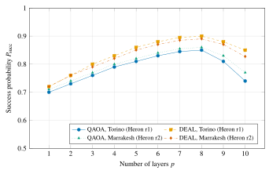
The energies confirm the picture. For all three problem families, DEAL returned ground-state energies within a small margin of the classical optima in Table 5.2. That is, it returned near-optimal tours, packings and cuts on 20-qubit instances without a single optimiser iteration on the hardware [6]. Two further diagnostics were reported for a smaller 4-qubit instance with 16 basis states and 500 repetitions, on which the full output distribution could be examined.
The first diagnostic sorts the measured probabilities in decreasing order and accumulates them. The steepness of this cumulative-probability curve measures how concentrated the distribution is on its top states. The mean of the sorted probabilities was 0.1263 for DEAL against 0.1149 for QAOA. The two performance-gap regions annotated between the mean curves in Fig. 3 of [6] have widths \(\Delta=0.1065\) and \(\Delta=0.0156\). Both results indicate that DEAL places more of its probability mass on the leading, low-energy configurations.
The second diagnostic is the Kullback–Leibler divergence between the hardware distribution \(\hat{P}\) and the noiseless reference \(P\) from simulation, \[D_{\mathrm{KL}}(P\,\Vert\,\hat{P}) = \sum_{\bm{x}} P(\bm{x})\log\frac{P(\bm{x})}{\hat{P}(\bm{x})}, \tag{5.11}\] which decreased from about \(10^{-1}\) at one layer to about \(10^{-2}\) at the best depth for both methods. At the depths where success peaks, the hardware output is thus close to the ideal distribution. The advantage of DEAL over QAOA comes from a better ideal distribution, that is, from the ansatz and the angles, rather than from a smaller hardware-induced distortion alone.
5.6QAWA: Quantum Approximate Walk Algorithm
DEAL removes the optimiser but keeps the QAOA structure: a problem-derived phase separator, an entangling mixer, and an output that is a sample from an entangled state. Its output is therefore still opaque. To confirm the quality of the solution, one must know the optimum in advance, as in the benchmarks above, or perform tomography of the output state, whose cost is exponential in \(n\). The Quantum Approximate Walk Algorithm (QAWA) [7] starts from the opposite end. It asks what a shallow circuit on a noisy device can learn about a problem whose instance is defined by classical data. It designs the circuit so that every quantity it produces can be traced back to that data in closed form. Figure 5.4 shows its three components and the flow of data between them.
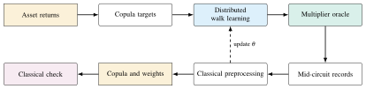
5.6.1Classical-Data-Traceable Oracle
The core component is an oracle that loads classical data into a quantum register in a way that is both shallow and traceable. We call its circuit the multiplier oracle (Figure 5.5). The register is split into an address part \(A\) of \(n_{a}\) qubits and a data part \(B\) of \(n_{b}\) qubits. A layer of Hadamard gates puts \(A\) into the uniform superposition over the \(2^{n_{a}}\) addresses. Each address qubit \(a\) then controls an \(R_{Y}(\theta_{ab})\) rotation on each data qubit \(b\). The angle \(\theta_{ab}\) encodes one classical datum, for instance the return of asset \(b\) in scenario \(a\), through the amplitude-encoding map \(\theta=2\arcsin\sqrt{v}\) of Section 2.5.
Rotations about the same axis add. Conditioned on the address string \(\bm{a}=(a_{1},\dots,a_{n_{a}})\), data qubit \(b\) therefore receives the total rotation \(\Theta_{b}(\bm{a})=\sum_{j}a_{j}\theta_{jb}\), and the joint state after the ladder is \[\ket{\Phi} = \frac{1}{\sqrt{2^{n_{a}}}}\sum_{\bm{a}\in\{0,1\}^{n_{a}}} \ket{\bm{a}}_{A}\otimes\bigotimes_{b=1}^{n_{b}} \Bigl[\cos\tfrac{\Theta_{b}(\bm{a})}{2}\ket{0}+\sin\tfrac{\Theta_{b}(\bm{a})}{2}\ket{1}\Bigr]_{B}. \tag{5.12}\] A final layer of \(R_{Z}(\pi/2)\) rotations on \(B\) fixes the phase reference of the data register. It commutes with the \(Z\)-basis readout of \(B\), so it does not change the marginal statistics reported below. But it matters when the oracle is composed with subsequent walk steps that act on the same register. All qubits are then read out in the \(Z\) basis.
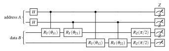
Three properties follow from Equation (5.12). First, the oracle is traceable. The probability of observing data bit \(b=1\) together with address \(\bm{a}\) is \(2^{-n_{a}}\sin^{2}(\Theta_{b}(\bm{a})/2)\), an explicit function of the classical inputs. The pairwise statistic \(\expval{Z_{b}Z_{b'}}\) averaged over addresses is \(2^{-n_{a}}\sum_{\bm{a}}\cos\Theta_{b}(\bm{a})\cos\Theta_{b'}(\bm{a})\), a product of two data-dependent quantities averaged over scenarios. This is why we call the circuit a multiplier: it computes, in superposition over all scenarios, exactly the products whose averages define correlations. Any output can therefore be checked classically in time polynomial in \(n_{a}\) and \(n_{b}\) for a given set of addresses. The whole output distribution can be checked in time \(\mathcal{O}\!\left(2^{n_{a}}n_{b}\right)\), which is polynomial when the address register is small.
Second, the oracle is shallow. Each controlled rotation compiles to two CNOT gates, and the rotations on different data qubits controlled by the same address qubit can be scheduled in parallel. The ladder over \(n_{b}\) data qubits therefore has CNOT depth \(\mathcal{O}\!\left(n\right)\) in the total qubit count. This contrasts with the \(\mathcal{O}\!\left(n^{2}\right)\) two-qubit gates of a dense QAOA cost layer. It also contrasts with the \(\mathcal{O}\!\left(n^{2}\right)\) measurement settings, each with its own circuit, that pairwise tomography would need to extract the same correlations from a generic state [65].
Third, the oracle is a special case of the uniformly controlled rotations [60] on which the QCrank encoding of Section 2.5 is built [59]. QCrank loads one datum per address into a data qubit by a full uniformly controlled rotation. The multiplier oracle uses only the linear, single-control terms of that rotation, and it trades exactness of the loaded values for a depth linear rather than exponential in \(n_{a}\). This approximation gives the algorithm its name.
5.6.2Distributed Approximate Walk Learning
The oracle alone loads data. The walk uses it to learn. In a discrete-time quantum walk [47], a coin operation on an internal register is followed by a shift conditioned on the coin. The walker’s position distribution after \(t\) steps depends on the coin angles. QAWA uses the multiplier oracle as a data-dependent coin: the data register \(B\) acts as the walker, the address register \(A\) as the coin, and the controlled-rotation ladder as the coin-conditioned shift. One application of the oracle is thus one approximate walk step, and the angles \(\theta_{ab}\) are the walk’s parameters.
The learning task is to choose the angles so that the distribution of the data register matches a target distribution \(P_{\mathrm{target}}\) derived from the problem. The loss is the Kullback–Leibler divergence \(D_{\mathrm{KL}}(P_{\mathrm{target}}\Vert\hat{P}_{\theta})\) of Equation (5.11) between the target and the measured distribution. For the portfolio application, the target is a copula. By Sklar’s theorem [139], the joint distribution of the returns of several assets factorises into its marginals and a copula that carries the dependence structure alone. The copula is what a portfolio optimiser needs, because the marginals are known and the risk comes from the dependence. QAWA transforms the historical returns of each asset to uniform marginals. It discretises the pairwise copula of each pair of assets on a grid indexed by the address register and learns one set of oracle angles per pair.
The learning is distributed. Independent sub-walks learn the \(\binom{n_{b}}{2}\) pairwise copulas, on separate GPU ranks in simulation or in separate hardware jobs. The learned angles are then reassembled into a single oracle whose pairwise statistics \(\expval{Z_{b}Z_{b'}}\) reproduce all pairwise dependencies at once. After each iteration, the classical controller updates the angles from the measured statistics by plain gradient descent with a fixed learning rate \(\eta\) on the KL loss. Because each measured statistic has the closed form of Section 5.6.1, the update can be computed and verified classically. In the experiments below, the divergence fell below \(0.01\) after about 75 of the 150 training iterations (the fitted decay is \(\mathrm{KL}(t)=0.082\,e^{-0.031t}+0.004\) [7]). This is one to two orders of magnitude below the evaluation count of a black-box QAOA optimiser.
5.6.3Interpretability Through Mid-Circuit Measurement Preprocessing
The final component of QAWA is a reading of QAOA-style outputs that does not require tomography. In a generic variational circuit, the only accessible information is the final bit-string distribution, and relating it to the problem requires reconstruction of the state. QAWA instead records mid-circuit measurement data, the outcomes of the address register together with the data register, and processes them classically. The address outcome identifies the scenario, and the data outcome is a closed-form function of that scenario’s data, so the pair can be interpreted directly. The empirical conditional frequencies \(\hat{P}(b\mid\bm{a})\) estimate \(\sin^{2}(\Theta_{b}(\bm{a})/2)\), and the empirical pairwise statistics estimate the products defined in Section 5.6.1.
Recovery of all \(\binom{n}{2}\) pairwise correlations of \(n\) data qubits from these records needs \(\mathcal{O}\!\left(n^{2}\right)\) estimated quantities. Each comes from the same measurement data rather than from separate tomographic circuits, and the estimates can be checked against the classical data that generated the angles. Solution quality is therefore verifiable in polynomial time. Given the returned portfolio weights, the expected return and risk can be computed from the recovered copula and compared with the classical baseline, without trust in the quantum device. A classical party who did not run the quantum computation can thus audit the output. This property anticipates the verification theme of Chapter VII.
5.7QAWA Experimental Setup and Results
The application reported in [7] is a four-asset portfolio drawn from the S&P 500, made up of Apple (AAPL), Microsoft (MSFT), Johnson & Johnson (JNJ) and Exxon Mobil (XOM). These assets were chosen to span technology, health care and energy, so that the pairwise dependencies are genuinely different. The historical returns were transformed to uniform marginals, and the six pairwise copulas were the learning targets. Simulations used Qiskit 2.2 with the Aer state-vector back end on the TTU HPCC and NERSC systems. They were extended to 20 qubits to establish the scaling of the oracle’s depth and of the learning dynamics. The shallow oracle circuits up to the measurement layer were also cross-checked with the Q-GEAR pipeline of Chapter III.
Hardware runs used IBM Pittsburgh, a 156-qubit Heron r3 processor (Table 5.1), with 8,192 shots per circuit and 20 independent runs per configuration. Averages and noise floors could thus be estimated. The baseline portfolio was the classical mean–variance allocation computed from the empirical covariance. The noise floor was estimated from the spread of the hardware results across the 20 runs.
Figure 5.6 shows the learning dynamics. From an uninformative initialisation, the KL divergence between the target copula and the measured distribution decreased monotonically and reached 0.01 after about 75 iterations. At that point, all six pairwise correlation coefficients of the four assets had been recovered from the pairwise statistics of the oracle [7]. The curve flattens below \(10^{-2}\), the level set by the shot noise of the finite sample per iteration rather than by the expressivity of the oracle.
On IBM Pittsburgh, the portfolio constructed from the hardware-recovered copula achieved an average improvement of 5.4 % over the baseline portfolio across the 20 runs. It also achieved an advantage of 8.1 % above the noise floor, as reported in [7]. A QAOA formulation of the same portfolio QUBO, run under the same shot budget, did not match this result even with additional optimiser iterations. QAWA needed none beyond its walk-learning schedule. Every quantity that enters the portfolio construction is a closed-form function of the measured statistics. The entire chain from hardware counts to portfolio weights was therefore re-verified classically in polynomial time.
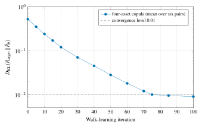
Table 5.3 summarises how vanilla QAOA, DEAL and QAWA differ along the dimensions that RQ3 asks about:
the source of the circuit structure;
the number of circuit evaluations on the classical side;
the circuit depth;
the mitigation and interpretation of the output;
the cost of verification.
The progression from column to column is the progression of the chapter: from search over an unstructured parameter space, to structure imported from the problem and the device, to structure imported from the data with a verifiable output.
| Property | Vanilla QAOA | DEAL | QAWA |
|---|---|---|---|
| Source of structure | problem Hamiltonian only | problem (QPN weights) and device (calibration, topology) | classical data (walk angles, copula targets) |
| Parameter initialisation | random or generic ramp | closed form from \(Q\) (Equation (5.5)) | data-encoding angles, refined by walk learning |
| Classical outer loop | black-box optimiser, \(10^{2}\)–\(10^{3}\) noisy evaluations | none (direct angles); Bayesian choice of \(p\) | distributed walk learning, about 75 iterations |
| Two-qubit gate depth | \(\mathcal{O}\!\left(p\,|E|\right)\) plus SWAPs | \(\mathcal{O}\!\left(p\,|E|\right)\), heavy edges on adjacent low-error couplers | \(\mathcal{O}\!\left(n\right)\) CNOT depth per oracle |
| Error mitigation | none | adaptive digital ZNE with delay/identity insertion, \(\lambda\in\{1,2\}\) | classical preprocessing of mid-circuit data; noise floor from repeated runs |
| Interpretability | bit-string energies only | QNRE separates noise-limited from parameter-limited error | every output a closed-form function of the input data |
| Verification | know the optimum, or tomography \(\mathcal{O}\!\left(4^{n}\right)\) | energy re-evaluation against known optimum | polynomial time; \(\mathcal{O}\!\left(n^{2}\right)\) estimated pairwise statistics |
| Hardware demonstration | (baseline runs) | IBM Torino, IBM Marrakesh, 20 qubits, 10 layers | IBM Pittsburgh, four assets; simulation to 20 qubits |
5.8Discussion and Limitations
The results of this chapter support the claim of RQ3 that structure beats search on today’s devices. But they also delimit the claim, and we record the limits here. The first limit concerns scale. All hardware results are for 20 qubits or fewer and for at most ten layers. The falling branches in Figure 5.3 show this limit. At 41–43 CZ gates, the devices used here are already near the depth at which output distributions lose their structure. DEAL pushes the useful depth by two layers and the success rate by up to fifteen per cent. This is significant for practice but does not change the exponent: larger instances need more couplings, and more couplings need more CZ gates. No initialisation or mapping heuristic can substitute for lower gate errors.
The closed-form angles of Equation (5.5) were tuned on the three problem families in Table 5.2. The scale factors \(\lambda_{\gamma},\lambda_{\beta}\) may need adjustment for QUBOs with very different coefficient distributions. Whether a universal setting exists is an open question that the Bayesian machinery of Section 5.3.5 could be extended to answer.
The second limit concerns what the mapping can fix. The greedy solution of Equation (5.8) places the heaviest edges well. But on a heavy-hexagonal graph of degree three, a dense 20-variable QUBO with 190 couplings cannot avoid SWAP chains for most of its edges. The mapping determines which edges pay the SWAP cost, not whether the cost is paid. Devices with higher connectivity, or the circuit-cutting approach of Chapter IV that removes the worst edges altogether, address the remaining cost from different directions.
The third limit concerns approximation in QAWA. The multiplier oracle is exact for the single-control terms of a uniformly controlled rotation and drops the higher-order terms. Copulas with strong tail dependence have densities far from products of pairwise factors. For them, the approximate walk may converge to a KL divergence floor above the shot-noise level. The four-asset experiment does not probe this regime. The 20-qubit simulations only establish that the depth and the learning dynamics scale, not that the approximation stays accurate for arbitrary targets. The full QCrank encoding is the natural fallback: its depth is exponential in the address register, but it is exact. The trade-off between the two is exactly the encoding question of Chapter IV.
The fourth limit concerns the baselines. Vanilla QAOA with a linear-ramp start and a generic optimiser is the standard comparison in the literature. But stronger classical heuristics exist for each of the problems considered, and no claim of quantum advantage over them is made here or in the underlying papers. The contribution is methodological. On a fixed noisy device with a fixed budget, structure-aware circuits reach higher success with fewer evaluations, and they produce outputs whose quality can be judged.
5.9Relation to the Other Chapters
The two methods of this chapter obtain structure from complementary sources. The contrast, summarised in Figure 5.7, is instructive for the dissertation as a whole. DEAL derives structure from the problem: the QUBO coefficients fix the angles through Equation (5.5) and the placement through Equation (5.8). The hardware enters only through calibration data that modulate that placement and the noise-scaling schedule. Its circuits remain QAOA-like, and its outputs remain samples judged by their energy.
QAWA derives structure from the data: the instance is a set of numbers, the oracle loads them by amplitude encoding, and the walk learns from their statistics. The problem enters only through the choice of target distribution. Its circuits are data loaders rather than phase separators, and its outputs are statistics whose meaning is fixed by construction. The two are ends of a spectrum, not competitors. Their hinge is the amplitude-encoding angle \(2\arcsin\sqrt{w}\), the initialisation of DEAL and the oracle angle of QAWA. In both cases, the numbers that define the instance become rotation angles without an optimiser in between.
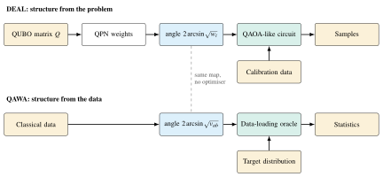
Both methods depend on the simulation substrate of Chapter III. The 20-qubit, 10-layer DEAL circuits were simulated noiselessly through Q-GEAR on A100 GPUs before every hardware submission. This confirmed that the directly initialised angles produce low-energy states, and it provided the reference distributions \(P\) in Equation (5.11). Without GPU acceleration, a trace of ten layer counts across three problem families and two devices would have consumed days of CPU time per iteration of the design. The QAWA oracles were simulated up to 20 qubits with the same pipeline, up to their measurement layer. The mid-circuit measurement path is one of the gate-set limitations noted in Section 3.7.
In retrospect, QAWA’s data-traceable oracle is another instance of the theme that Chapter IV developed fully: the interface between classical data and the quantum register should be a structured, vectorised encoding whose outputs can be read without tomography. The QCrank encoding and its ShardQ cutting, the vectorised dot products of the VQT transformer, and the exact quantum arithmetic of NNQA all generalise the multiplier oracle in different directions. They trade depth for exactness or for learnability. The hardware-aware mapping of DEAL likewise has its counterpart in ShardQ. There, the entanglement distance of the encoder decides where to cut a circuit, and the calibrated coupling map decides where its sub-circuits run. The polynomial-time verifiability of QAWA’s output, together with the QNRE metric’s separation of noise-limited from parameter-limited error, foreshadows the auditing questions of Chapter VII. Once quantum computations run on shared cloud hardware whose noise a user cannot control, a classical check of an output is not a convenience but a requirement.
5.10Summary
This chapter presented two hardware-aware approaches to combinatorial optimisation on noisy superconducting processors. DEAL, summarised in Algorithm 2, combines four elements:
a closed-form initialisation derived from the QUBO coefficients through Qubit Prioritization Normalization, which replaces the black-box parameter search of QAOA;
a dynamic mapping of logical qubits to the device that weighs interaction strength against calibrated error;
\(R_{XX+YY}\) mixer blocks compiled to native maximally entangling gates;
an adaptive digital zero-noise extrapolation for the residual noise.
On IBM Torino and IBM Marrakesh, 20-qubit, 10-layer DEAL circuits achieved success rates 14.81 % and 7.40 % higher than vanilla QAOA at ten layers. They matched with seven layers what QAOA needed nine for, and they returned near-optimal energies for TSP, knapsack and MaxCut instances, as reported in [6].
QAWA introduces a classical-data-traceable oracle of linear CNOT depth and learns copulas by a distributed approximate quantum walk. It makes the outputs interpretable and verifiable in polynomial time through classical preprocessing of mid-circuit measurement data. On IBM Pittsburgh, it recovered all six pairwise correlations of a four-asset S&P 500 portfolio and converged to a KL divergence of 0.01 in about 75 iterations. It improved on the baseline portfolio by 5.4 % on average, 8.1 % above the noise floor, as reported in [7].
Both methods were pre-validated with the Q-GEAR pipeline of Chapter III. Together they answer RQ3 in the affirmative for the scales accessible today, and they close the loop with the question that preceded it. The data-derived structure that makes these shallow circuits interpretable is the same structured, vectorized data interface that Chapter IV built for learning (RQ2). The next chapter asks what circuits of either kind will cost once they must respect fault-tolerant budgets.
Chapter VILearned Synthesis and Honest Cost Accounting
This chapter addresses RQ4: can learned, HPC-scale synthesis produce circuits that respect fault-tolerant resource budgets, and what does honest cost accounting say about end-to-end quantum advantage? Two studies answer the two halves. Both put the full cost of a quantum computation into one programmatic accounting and let it drive the design.
Part A (Sections 6.2 to 6.6) presents RubriQ: fault-tolerant circuit synthesis as large-language-model (LLM) code generation, fine-tuned by reinforcement learning against a programmatic rubric. CUDA-Q simulation on GPUs evaluates the rubric inside the training loop. Part B (Section 6.7) asks what it costs to simulate nonlinear wave equations on a quantum processor when the nonlinearity needs the field itself. Its answer is a unified measurement-and-reload cost model validated on hardware. Section 6.8 relates both studies to the other chapters, and Section 6.9 summarizes.
6.1Introduction
The previous chapters scaled simulation (Chapter III), made the classical–quantum data interface vectorized and learnable (Chapter IV) and replaced black-box variational search with problem structure (Chapter V). Each was measured against today’s hardware. This chapter turns to the hardware being built: fault-tolerant processors. Their cost is dominated not by two-qubit gate error but by the number of non-Clifford operations that must be distilled [79], [86]. There a compiler faces a different question: not “how few CZ gates?” but “how few T gates, on the right topology, without breaking the function the circuit is meant to implement?”
Classical synthesis attacks that question with heuristics and search. T-count and T-depth optimizers based on phase-polynomial and matroid techniques [140] are exact for restricted gate sets but do not scale to structured algorithmic circuits. Exhaustive synthesis is exponential in the number of qubits. Generative models have recently entered the field. Diffusion models can propose circuits for small unitaries [113], and code-generating LLMs [106] already write Qiskit or CUDA-Q programs from natural-language prompts. What is missing is a training signal that turns a fluent program generator into a compiler that respects fault-tolerant budgets.
Reinforcement learning with verifiable rewards [110] supplies the mechanism, but the obvious reward—one if the circuit is correct and compliant, zero otherwise—is sparse. A candidate that is \(95\%\) correct and violates one coupling constraint scores the same as a syntactically invalid program. RubriQ replaces that sparse signal with a programmatic rubric whose components are individually verifiable and whose weighted sum is dense and decomposable. GPU-accelerated state-vector simulation evaluates the rubric at HPC scale inside the policy-optimization loop.
The second half of the chapter asks a related question. Quantum algorithms for differential equations often report asymptotic speed-ups that assume the input is already loaded and the output is a single scalar. It has long been argued that such claims must be read with their input/output costs [141]. For nonlinear wave equations the difficulty is sharper, because the nonlinear term depends on the field itself. The linear-embedding routes that avoid reading it out—Carleman linearization [142], multiple-copy schemes [143] and Schrödingerization [115]—pay for that avoidance in copies, truncation or dilation.
Part B takes the direct route on purpose and writes down all its shots and gates in one cost-and-error model. The conclusion is negative but quantitative: per-step quantum cost overtakes classical cost as the grid grows.
The contributions of this chapter are the following.
We formulate fault-tolerant circuit synthesis as constraint-aware LLM code generation with a five-component programmatic rubric reward (Section 6.3.2). A Group Relative Policy Optimization (GRPO) loop evaluates the rubric with CUDA-Q on GPUs (Sections 6.3.3 and 6.3.4).
An HPC implementation on Perlmutter with DeepSpeed ZeRO-2 and low-rank adaptation reaches \(85\%\) strong-scaling efficiency on eight A100 GPUs (Section 6.4). On 1500 benchmark circuits it gives \(3.31\times\) mean T-gate compression, hardware-constraint violations below \(1\%\) and \(96\%\) correctness, with validation on IBM Heron r3 and IonQ Forte (Section 6.5).
A hybrid Strang split-step solver for the nonlinear Schrödinger and viscous Burgers equations implements the nonlinear step as a measure–update–reload cycle. A unified cost-and-error model and an adaptive controller complete it (Section 6.7). Validated on an IBM Heron processor, it yields a quantitative crossover argument.
6.2Preliminaries and Problem Statement
6.2.1Fault-Tolerant Cost and Constraint-Aware Synthesis
Section 2.7 reviews the stabilizer formalism and the Clifford group. In most practical error-correcting codes, the Clifford gates \(\{H, S, \mathrm{CNOT}\}\) are implemented transversally or by cheap code deformations. The non-Clifford \(T=\mathrm{diag}(1,e^{i\pi/4})\) gate requires magic-state distillation and dominates the space–time volume of a fault-tolerant computation [79], [86]. The T-count of a Clifford+T circuit is therefore the standard proxy for its fault-tolerant cost. Tableau simulation verifies a purely Clifford circuit in polynomial time [71], [83], so “Clifford fraction” is a cheap, exact rubric component.
Let \(\mathcal{G}=(V,E)\) be the coupling graph of the target device, with \(V\) the physical qubits and \(E\) the pairs on which two-qubit gates are native. A synthesis instance is a specification \(s\): a target unitary or state on \(n\) qubits, plus the algorithmic family and the device. A candidate solution is a program \(o\) that, when parsed, yields a circuit \(c(o)\) over Clifford+T with two-qubit gates on \(E\). Write \(F(c)\) for the fidelity of \(c\) against the reference implementation, \(T(c)\) for its T-count, \(D(c)\) for its depth and \(\nu(c)\) for the number of two-qubit gates on pairs outside \(E\). The constraint-aware synthesis problem is \[\min_{c}\; T(c) \quad\text{subject to}\quad F(c)\ge 1-\varepsilon,\qquad \nu(c)=0,\qquad D(c)\le D_{\max}, \tag{6.1}\] with \(\varepsilon\) a fidelity tolerance and \(D_{\max}\) a depth budget.
Equation (6.1) is combinatorial. For the families considered here (quantum Fourier transform, phase estimation, Hamiltonian simulation and data encoding), the search space is far beyond exhaustive methods. RubriQ treats Equation (6.1) as a learning problem. The constraints become weighted terms of a reward, and a generative policy is optimized to make the constrained optimum likely.
6.2.2Policy Optimization for Program Generation
Section 2.9 gives the background on LLMs as policies. An autoregressive language model with parameters \(\theta\) defines a distribution \(\pi_\theta(o\mid q)\) over token sequences \(o=(o_1,\dots,o_{|o|})\) given a prompt \(q\). Reinforcement-learning fine-tuning adjusts \(\theta\) to increase the expected reward \(\mathbb{E}_{o\sim\pi_\theta}[r(q,o)]\) while staying close to a reference model \(\pi_{\mathrm{ref}}\). Proximal Policy Optimization (PPO) [108] does this with a clipped surrogate objective and a learned value network that supplies a per-token baseline. GRPO [109] removes the value network: for each prompt it samples a group of \(G\) completions and uses the group’s own reward statistics as the baseline. The advantage of a completion is then its reward standardized within the group.
6.3RubriQ: Rubric-Guided Synthesis
6.3.1Synthesis as Conditional Program Generation
RubriQ represents a circuit as a program, not a gate list. The prompt \(q(s)\) contains the specification \(s\):
the algorithmic family and its parameters,
the number of qubits,
the coupling graph \(E\) (as an adjacency list), and
the target gate set.
The policy answers with source code, a Qiskit program or a CUDA-Q kernel, from which a parser extracts the circuit \(c(o)\). Two design decisions follow. First, the pretrained coder already knows the libraries, so the policy starts from a fluent prior over syntactically valid programs. The reinforcement signal only has to shape their quantum properties. Second, parsing can fail, and how it fails matters. An unparseable completion carries no information about fidelity or T-count, so RubriQ invests in recovering circuits from imperfect generations (Section 6.3.5).
6.3.2The Rubric Reward
The reward is a weighted sum of five programmatically evaluated components, \[R(c) \;=\; \sum_{k=1}^{5} w_k\, r_k(c),\qquad \sum_k w_k = 1,\qquad r_k(c)\in[0,1], \tag{6.2}\] with weights \(w=(0.40,\,0.20,\,0.15,\,0.15,\,0.10)\) for fidelity, Clifford fraction, hardware compliance, T-gate count and efficiency, respectively, as fixed in [8]. Below, \(c_{\mathrm{ref}}\) is the reference circuit that a standard compiler produces for the same specification.
Fidelity. \(r_{\mathrm{fid}}(c)\) is the average gate fidelity between the unitary \(U_c\) of the generated circuit, extracted after measurements and resets are stripped, and the target unitary \(U_A\) of the specification, \[r_{\mathrm{fid}}(c) = F_{\mathrm{avg}} = \frac{d\,F_{\mathrm{process}}+1}{d+1},\qquad F_{\mathrm{process}} = \frac{\abs{\Tr(U_A^{\dagger}U_c)}^{2}}{d^{2}},\qquad d=2^{n_q}, \tag{6.3}\] computed by state-vector simulation in CUDA-Q [24] on a GPU. The targets for the QFT, QPE, Heisenberg and Ising families are built analytically.
Clifford fraction. \(r_{\mathrm{cl}}(c)\) is the fraction of operational gates of \(c\) in the Clifford group, with a Toffoli gate counted as seven \(T\) gates in the resource census. It rewards small non-Clifford content even when the fidelity term is not yet satisfied. It is exact and cheap because it never touches the \(2^{n_q}\)-dimensional state.
Hardware compliance. \(r_{\mathrm{topo}}(c)\) is the best score over the target back-ends \(b\in\{\)IBM Eagle, IBM Heron, IonQ Forte, IonQ Aria\(\}\) of a weighted sum of four indicators: whether the qubit count and the depth of \(c\) fit the limits \(Q_b\) and \(D_b\) of the back-end, the fraction of gates already native on \(b\), and \(\exp(-\lambda\,\mathrm{SwapOH}(c,b))\), where \(\mathrm{SwapOH}\) is the estimated SWAP routing overhead on the coupling graph of \(b\) (zero for all-to-all devices). A circuit is compliant when it needs no routing on its target. The violation rate in Section 6.5 is the fraction of synthesized circuits that are not compliant.
T-gate count. \(r_{T}(c)=\exp(-\alpha_T\,T(c))\) with \(\alpha_T=0.05\), where \(T(c)\) is the \(T\)-gate-equivalent count of \(c\). The exponential form keeps the reward gradient alive for large \(T\)-counts. The T-gate compression reported below is the ratio \(T(c_{\mathrm{ref}})/T(c)\) against the reference compiler output.
Efficiency. \(r_{\mathrm{eff}}(c)=\exp(-\beta\,D(c)/n_q^{2})\) with \(\beta=0.5\) scores the depth \(D(c)\) normalized by the squared qubit count, so the policy prefers parallel structure once the T-count has been reduced.
Table 6.1 summarizes the rubric. The definitions and weights are those of [8], where a grid search selected the weights and showed them robust to \(\pm0.05\) perturbations. The fidelity weight exerts the strongest marginal effect.
| Component (symbol) | Weight \(w_k\) | What it measures | Evaluator |
|---|---|---|---|
| Fidelity (\(r_{\mathrm{fid}}\)) | 0.40 | Average gate fidelity of \(U_c\) against the target unitary, Equation (6.3) | CUDA-Q state-vector simulation on GPU |
| Clifford fraction (\(r_{\mathrm{cl}}\)) | 0.20 | Fraction of operational gates in the Clifford group | Gate census |
| Hardware compliance (\(r_{\mathrm{topo}}\)) | 0.15 | Qubit and depth limits, native-gate fraction and SWAP overhead on the best-matching back-end | Graph check against the coupling map |
| T-gate count (\(r_{T}\)) | 0.15 | \(\exp(-\alpha_T T(c))\) with \(\alpha_T=0.05\) | Gate census (Toffoli \(=7T\)) |
| Efficiency (\(r_{\mathrm{eff}}\)) | 0.10 | \(\exp(-\beta D(c)/n_q^{2})\) with \(\beta=0.5\) | Gate census |
| Total (\(R\)) | 1.00 | Equation (6.2); \(R=0\) if unparseable | — |
Two properties of Equation (6.2) drive the results. The reward is dense: almost every parseable completion receives a distinct score. The standardized advantages of Section 6.3.3 are therefore informative within a group of \(G\) samples, even when none is correct. It is decomposable: a change in one component can be attributed to one property of the circuit. This lets the policy learn, for example, to keep the Clifford skeleton and re-synthesize the non-Clifford layer.
6.3.3Group Relative Policy Optimization
For a prompt \(q\) the current policy \(\pi_{\theta_{\mathrm{old}}}\) generates a group of \(G\) completions \(\{o_i\}_{i=1}^{G}\) at sampling temperature \(\tau\) and nucleus threshold \(p\). Each completion is parsed and scored, \(r_i=R(c(o_i))\), and the group-normalized advantage is \[\hat A_i \;=\; \frac{r_i-\operatorname{mean}(r_1,\dots,r_G)}{\operatorname{std}(r_1,\dots,r_G)+\delta}, \tag{6.4}\] where a small \(\delta\) guards against groups of identical rewards. With the per-token probability ratio \(\rho_{i,t}(\theta)=\pi_\theta(o_{i,t}\mid q,o_{i,<t})/\pi_{\theta_{\mathrm{old}}}(o_{i,t}\mid q,o_{i,<t})\), the GRPO objective [109] is \[\mathcal{J}_{\mathrm{GRPO}}(\theta)= \mathbb{E}_{q\sim\mathcal{D},\;\{o_i\}\sim\pi_{\theta_{\mathrm{old}}}(\cdot\mid q)} \Bigg[\frac{1}{G}\sum_{i=1}^{G}\frac{1}{|o_i|}\sum_{t=1}^{|o_i|}\ell_{i,t}(\theta) \;-\;\beta\, \mathbb{D}_{\mathrm{KL}}\big[\pi_\theta\,\big\|\,\pi_{\mathrm{ref}}\big]\Bigg], \tag{6.5}\] with the clipped per-token surrogate \[\ell_{i,t}(\theta)=\min\!\Big(\rho_{i,t}(\theta)\,\hat A_i,\; \operatorname{clip}\big(\rho_{i,t}(\theta),\,1-\varepsilon_{c},\,1+\varepsilon_{c}\big)\,\hat A_i\Big), \tag{6.6}\] where \(\varepsilon_c\) is the clipping range inherited from PPO [108]. The weight \(\beta\) scales the penalty that keeps the policy near the frozen reference model \(\pi_{\mathrm{ref}}\) (the instruction-tuned coder before fine-tuning). The divergence is estimated per token by the unbiased estimator \[\mathbb{D}_{\mathrm{KL}}\big[\pi_\theta\,\big\|\,\pi_{\mathrm{ref}}\big] \;\approx\; \frac{\pi_{\mathrm{ref}}(o_{i,t}\mid q,o_{i,<t})}{\pi_\theta(o_{i,t}\mid q,o_{i,<t})} -\log\frac{\pi_{\mathrm{ref}}(o_{i,t}\mid q,o_{i,<t})}{\pi_\theta(o_{i,t}\mid q,o_{i,<t})}-1 . \tag{6.7}\]
The advantage in Equation (6.4) is the same for every token of a completion, so GRPO performs sequence-level credit assignment. This is appropriate when the reward is a property of the whole circuit. The sparse-reward baseline of Section 6.5 optimizes exactly Equation (6.5) with the rubric replaced by \(r_i=\mathbb{1}[F(c_i)\ge 1-\varepsilon\wedge \nu(c_i)=0]\). The comparison therefore isolates the effect of the reward design from that of the optimizer.
6.3.4The Training Loop
Figure 6.1 shows the loop that Algorithm 3 formalizes. The policy is a 7B-parameter instruction-tuned coder with low-rank adapters, and the group size \(G\) is denoted \(N\) in [8]. One iteration proceeds as follows.
Render a batch of specifications into prompts.
Sample \(G=8\) completions per prompt at \(\tau=0.8\) and top-\(p\) \(0.95\).
Parse the completions into circuits.
Simulate the circuits in CUDA-Q on the GPUs that hold the policy.
Evaluate the rubric for each circuit.
Standardize the advantages within each group.
Update the adapter weights with one GRPO step.
The simulator is called once per parseable completion, so the number of simulator calls is the natural measure of reward cost. Section 6.5 reports it with wall-clock convergence.
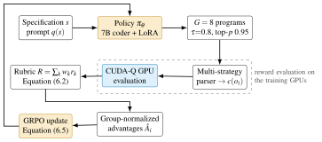
6.3.5Multi-Strategy Parsing
A language model fine-tuned by reinforcement learning drifts toward whatever the reward pays for. Early in training, a large fraction of completions are almost, but not quite, valid programs: a missing import, an unbalanced bracket, a gate name from the wrong library. They differ from valid programs by a few tokens, so they carry the most gradient signal. Scoring them all as \(R=0\) discards exactly those samples. RubriQ therefore applies the cascade of parsing strategies in Figure 6.2, from strictest to most permissive, and assigns \(R=0\) only when every strategy fails.
As reported in [8], the cascade recovers approximately \(60\%\) of the completions that the strictest parser rejects. This raises the effective batch size and removes a source of high-variance zero rewards from Equation (6.4).
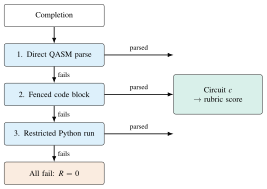
6.4Implementation on Perlmutter
Training and reward evaluation both run on the GPU partition of NERSC’s Perlmutter system. Each node carries four NVIDIA A100 GPUs [19] on an HPE Slingshot interconnect. The policy is a 7B-parameter instruction-tuned coder fine-tuned with low-rank adaptation [111] of rank \(64\). This leaves approximately \(28\) million trainable parameters and keeps the base weights frozen and shared. DeepSpeed ZeRO stage 2 [112] partitions the adapter optimizer states and gradients across data-parallel ranks. Each GPU thus holds a full copy of the frozen base model but only a shard of the training state.
The artifact provides fine-tuning configurations for Qwen2.5-Coder variants, DeepSeek-Coder-V2-Lite, Llama-3.1-8B and StarCoder2-15B [116]. Runs use four to eight A100 nodes. As reported in [8], the strong-scaling efficiency on eight GPUs is \(85\%\) after tuning of the collective communication for the Slingshot fabric.
The reward path reuses the software stack of Chapter III. Parsed circuits are lowered to CUDA-Q kernels and executed by the GPU state-vector backend [24]. The fidelity term of Equation (6.2) for a group of eight \(n\)-qubit circuits thus costs eight state-vector evolutions on the GPUs that already host the policy, with no host round trip. This co-location makes a simulator-in-the-loop reward affordable. The Q-GEAR measurements of Chapter III put a single-GPU state-vector evolution roughly two orders of magnitude below its CPU cost. The benchmark families of Section 6.5 sit well inside the \(32\)-qubit envelope of a single 40 GB A100.
The Clifford, topology, T-count and depth components run on the host in negligible time. The archived artifact [116] includes 21 integration tests for the evaluator, a conda environment pinned to PyTorch with CUDA 12.1, and launch scripts for one to two A100-80GB nodes. The complete set of fine-tuned weights occupies about 200 GB.
6.5Experimental Setup and Results
6.5.1Benchmarks, Baselines and Metrics
The benchmark suite of [8] contains 1500 circuits and a generated prompt set. Of the circuits, 500 are subsampled from each of three public collections (UnitaryHack, qsynth-bench and QDataSet [144]). They have 2 to 8 qubits and are stratified by baseline T-count into three buckets (\(T_0<80\), \(80\le T_0\le 140\) and \(T_0>140\)). The prompt set covers the quantum Fourier transform (QFT), quantum phase estimation (QPE), Hamiltonian simulation and data encoding. The data-encoding prompts use the QCrank-type encoders [59] of Chapter IV. Each instance specifies the qubit count, the family parameters and the target back-end, whose coupling graph is heavy-hex or all-to-all.
The primary baselines are sparse-reward RL with the same policy, optimizer and hyper-parameters. Sparse-GRPO replaces the rubric by a terminal scalar reward, and Sparse-PPO uses PPO with the terminal reward \(1/T(c)\). The non-RL baselines are the rule-based compilers t\(|\)ket\(\rangle\) at optimization level 2 and the Qiskit transpiler at optimization level 3. Each runs at its strongest available setting [8]. The metrics are:
mean T-gate compression \(T(c_{\mathrm{ref}})/T(c)\) over instances,
correctness rate (fraction of instances with \(F\ge 1-\varepsilon\)),
hardware-constraint violation rate (fraction with \(\nu>0\)),
training steps to reach a fixed fraction of the final reward, and
simulator calls consumed to get there.
6.5.2Results
Table 6.2 collects the headline numbers. Rubric-guided GRPO reaches a mean T-gate compression of \(3.31\times\) against \(2.05\times\) for sparse-reward RL. It keeps the violation rate below \(1\%\), five times fewer violations than the strongest baseline, and attains \(96\%\) correctness. It converges two to three times faster in training steps. A faster run draws fewer samples, so it also needs two to three times fewer simulator calls to reach the same reward level.
Figure 6.3 shows the two training curves qualitatively. The rubric curve rises quickly because partial credit for correct Clifford structure and partial T-count reductions is available from the first iterations. The sparse curve stays flat until the policy stumbles on fully correct, fully compliant circuits.
| Metric | RubriQ (rubric GRPO) | Sparse-reward RL | Strongest other baseline |
|---|---|---|---|
| Mean T-gate compression \(T(c_{\mathrm{ref}})/T(c)\) | \(3.31\times\) | \(2.05\times\) | — |
| Correctness (\(F\ge 1-\varepsilon\)) | \(96\%\) | — | — |
| Hardware-constraint violation rate | \(<1\%\) | — | \(5\times\) that of RubriQ |
| Training steps to convergence (relative) | \(1\times\) | \(2\)–\(3\times\) | — |
| Simulator calls to convergence (relative) | \(1\times\) | \(2\)–\(3\times\) | — |
| Unparseable completions recovered by the parser cascade | \(\approx 60\%\) | n/a | n/a |
| Benchmark families | QFT, QPE, Hamiltonian simulation, data encoding | ||
| Hardware validation | IBM Heron r3 (156 qubits), IonQ Forte (36 qubits) | ||
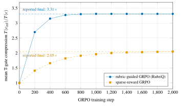
6.5.3Hardware Validation
Synthesized circuits were executed on four back-ends from two hardware families with different topologies and native gate sets. The IBM Eagle and Heron superconducting processors have 127–156 qubits and heavy-hex coupling. The IonQ Aria and Forte trapped-ion processors have 25–36 qubits and all-to-all connectivity. The highest-reward circuits were submitted to IBM Heron-3 (156 qubits) and IonQ Forte (36 qubits) [8]. Neither device runs an error-corrected code, so the runs do not demonstrate fault tolerance. They checked two things. First, the vendor compilers accept the emitted circuits for a given coupling graph without additional routing (the topology-compliance term in practice). Second, the measured output distributions match the simulated ones within the device noise.
For the 4-qubit QFT task with 4,096 shots, the metric is the Kullback–Leibler divergence between the hardware distribution and the noiseless simulation. For RubriQ circuits it was \(0.032\) on IBM Eagle, \(0.028\) on IBM Heron, \(0.024\) on IonQ Forte and \(0.021\) on IonQ Aria. All are below the \(0.05\) acceptance threshold. Sparse-PPO circuits gave \(0.121\), \(0.138\), \(0.087\) and \(0.079\), and removing the hardware-compliance term roughly doubles the RubriQ values. In simulation the average gate fidelity of RubriQ circuits exceeded \(0.95\), with a violation rate of \(0.8\%\) against \(4.2\%\) for Sparse-PPO [8]. The two platforms also show the role of the topology term. On the all-to-all IonQ device it is trivially satisfied, so the compression comes entirely from the T-count and depth terms. On the heavy-hex device the policy must trade T-count against SWAP insertion.
6.6Discussion: Rubrics, Sparse Rewards and Threats to Validity
Why the rubric wins. The sparse reward is a step function on the space of circuits, so almost all of the volume around a random completion has zero gradient. The dense rubric instead gives the policy a direction to move in at every step. Decomposability also gives a curriculum without explicit staging. Early in training the Clifford and topology terms dominate the within-group variance, so the policy first learns to emit structurally right, routable circuits. Later, when those terms saturate near one, the fidelity and T-count terms dominate and the policy learns to compress. The \(2\)–\(3\times\) reduction in simulator calls is the practical consequence: the same GPU budget buys two to three times more learning.
Benchmark leakage. QFT, QPE and Hamiltonian-simulation circuits are textbook material whose textbook implementations almost certainly appear in the pretraining corpora of code models. This does not invalidate the compression results: the reference compiler also starts from the textbook decomposition, and the policy beats it. But the correctness rate then partly measures recall rather than synthesis. The benchmark mitigates leakage by parameterizing instances (qubit counts, coupling graphs, Hamiltonian coefficients), so no completion can be retrieved verbatim. The data-encoding family, whose QCrank decompositions are much rarer in public code, is a partial control. A stronger test would hold out an entire family at training time and evaluate on it. We regard this as the most important open evaluation for learned synthesis.
Reward hacking. Any programmatic reward invites exploitation [145]. The most obvious exploit of Equation (6.2) is a nearly empty, trivially compliant circuit with no T gates. The fidelity weight of \(0.40\) blocks it: a wrong circuit scores at most \(0.60\) and, more importantly, less than any correct circuit with moderate compression. A subtler exploit pushes T gates into non-Clifford gates that the census does not count (arbitrary rotations). The gate set in the prompt and the parser’s rejection of non-Clifford+T gates prevent this. The KL penalty in Equation (6.5) is the general safeguard, because it keeps the policy near a prior that writes conventional programs.
Whether the weights of Table 6.1 are optimal is an empirical question the paper does not settle. They were chosen to reflect the relative importance of correctness, fault-tolerant cost and hardware constraints, and an ablation over them would strengthen the case.
Scale. The fidelity term requires exact simulation, so the qubit count of training instances is bounded by what a GPU can hold. A 40 GB A100 holds about \(32\) qubits, and the multi-GPU distribution of Chapter III holds more. Beyond that scale, proxies such as Clifford checks on random stabilizer inputs or sampled fidelity estimates would have to replace the fidelity term. Decomposability keeps such substitutions local.
6.7Honest Cost Accounting for Nonlinear-Wave Simulation
6.7.1The Read-Out Barrier for Nonlinear Dynamics
We consider two canonical nonlinear wave equations. The one-dimensional nonlinear Schrödinger (NLS) equation for a complex field \(\psi(x,t)\) is \[i\,\partial_t\psi \;=\; -\tfrac{1}{2}\,\partial_{xx}\psi \;+\; \kappa\,\abs{\psi}^{2}\psi , \tag{6.8}\] with nonlinearity strength \(\kappa\). The viscous Burgers equation [146] for a real velocity field \(u\) is \[\partial_t u + u\,\partial_x u \;=\; \nu\,\partial_{xx}u , \tag{6.9}\] with its two-dimensional counterpart \(\partial_t \mathbf{u}+(\mathbf{u}\cdot\nabla)\mathbf{u}=\nu\nabla^{2}\mathbf{u}\). Both are discretized on a periodic grid of \(N=2^{n}\) points. The field is stored as the amplitudes of an \(n\)-qubit register, \(\ket{\psi}=\sum_{j=0}^{N-1}\psi_j\ket{j}/\norm{\psi}\), the amplitude encoding of Section 2.5. The linear parts of Equations (6.8) and (6.9) are diagonal in Fourier space, so a quantum Fourier transform (QFT) can apply them coherently. This is the classical split-step Fourier method [147] on a quantum register. It is where a quantum computer is genuinely efficient: the QFT costs \(\mathcal{O}\!\left(n^{2}\right)\) gates against \(\mathcal{O}\!\left(N\log N\right)\) classical operations.
The nonlinear parts are the problem. The NLS nonlinearity multiplies \(\psi_j\) by a phase \(e^{-i\kappa\abs{\psi_j}^{2}\Delta t}\) that depends on the amplitude at the same grid point. The Burgers advection term \(u\,\partial_x u\) is quadratic in the field. A unitary that acts on \(\ket{\psi}\) cannot read its own amplitudes. A coherent implementation must therefore either linearize the dynamics in a larger space (Carleman linearization [142], Schrödingerization [115]) or consume multiple copies of the state [143]. Figure 6.4 shows where each route hides the cost of the nonlinearity. Each is also analysed under assumptions (dissipation, weak nonlinearity, block-encoded inputs) that the equations one wants to solve do not always meet.
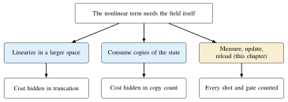
The study of [9] takes the opposite approach. It implements the nonlinear step in the most direct way possible: read the field, update it classically, write it back. It accounts for every shot and gate of that cycle. The result is not an algorithm that beats classical solvers but a measurement of how far the direct route falls short.
6.7.2The Hybrid Split-Step Solver
Write \(L=-\tfrac12\partial_{xx}\) (or \(-\nu\partial_{xx}\) for Burgers) for the linear operator and \(\mathcal{N}_{\Delta t}\) for the nonlinear flow over a time step \(\Delta t\). Strang splitting [148] advances the field by \[\psi^{m+1} \;=\; e^{-i\Delta t L/2}\;\mathcal{N}_{\Delta t}\!\big(e^{-i\Delta t L/2}\,\psi^{m}\big) \;+\;\mathcal{O}\!\left(\Delta t^{3}\right), \tag{6.10}\] with a global error of order \(\Delta t^{2}\) over a fixed horizon \(T\). The discrete Fourier transform \(\mathcal{F}\) diagonalizes the linear half-step, \[e^{-i\Delta t L/2} \;=\; \mathcal{F}^{\dagger}\,\operatorname{diag}\!\big(e^{-i k_\ell^{2}\Delta t/4}\big)\,\mathcal{F}, \qquad k_\ell=\frac{2\pi\ell}{N\Delta x},\quad \ell=-\tfrac{N}{2},\dots,\tfrac{N}{2}-1, \tag{6.11}\] and on the quantum register \(\mathcal{F}\) is the QFT. The QFT is built from \(n\) Hadamard gates and \(n(n-1)/2\) controlled-phase gates [12].
The exponent \(k_\ell^{2}\) is a quadratic form in the bits of \(\ell\). The diagonal phase in Equation (6.11) is therefore itself a product of \(n\) single-qubit phase gates and \(n(n-1)/2\) controlled-phase gates. The entire linear propagator thus costs \(\Theta(n^{2})\) gates, of which \(\Theta(n^{2})\) are two-qubit. Boundary kernels for Dirichlet or absorbing conditions in the Burgers problem are added as fixed diagonal unitaries in the position basis. These coherent kernels are the part validated on hardware (Section 6.7.5).
The nonlinear flow for the NLS equation is the pointwise phase \[\big[\mathcal{N}_{\Delta t}(\psi)\big]_j \;=\; e^{-i\theta_j}\,\psi_j,\qquad \theta_j=\kappa\,\abs{\psi_j}^{2}\,\Delta t , \tag{6.12}\] and for Burgers the analogous pointwise polynomial update of the advection term. The hybrid solver implements Equation (6.12) as the cycle in Figure 6.5. The register is measured \(S\) times in the computational basis, and the counts \(n_j\) give the estimates \(\hat p_j=n_j/S\) of \(p_j=\abs{\psi_j}^{2}/\norm{\psi}^{2}\). The classical controller forms \(\hat\theta_j=\kappa\hat p_j\norm{\psi}^{2}\Delta t\) and applies the update as a degree-\(d\) polynomial in \(\hat\theta_j\), \[\psi_j \;\leftarrow\; P_d(\hat\theta_j)\,\psi_j,\qquad P_d(\theta)=\sum_{m=0}^{d}\frac{(-i\theta)^{m}}{m!}, \tag{6.13}\] at a classical cost of \(\mathcal{O}\!\left(Nd\right)\) arithmetic operations. A vectorized QCrank-style loader [59], [60] then writes the updated field back into the register. It encodes the \(N\) field values as the angles of a uniformly controlled rotation on a data qubit, conditioned on the \(n\)-qubit address register. The loader costs \(\Theta(N)\) CNOT gates.
The nonlinear half-kick needs only the intensities \(\lvert\psi_j\rvert^{2}\). They are estimated from computational-basis counts as \(\hat p_j=c_j/S\) in one multinomial experiment per half-kick, so no phase tomography is performed. The updated vector \(\psi^{+}\in\mathbb{C}^{N}\) is then handed to the StateReload boundary, which prepares it with the vectorized loader. In the cost model this reload costs \(\Theta(N)\) CX depth, about 1.6 µs at \(N=32\) for a 50 ns two-qubit gate time. That is comparable to the coherent linear step [9].
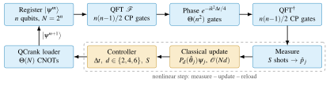
6.7.3Unified Cost and Error Model
The value of the direct route is that its cost and error can be written down completely. Per time step the quantum path runs \(S\) shots of the linear kernel, loader and measurement, so its cost in gate executions is \[C_Q(N,S) \;=\; S\,\big[\,G_{\mathrm{lin}}(n) + G_{\mathrm{load}}(N)\,\big] \;=\; S\cdot\Theta\!\big(n^{2}+N\big),\qquad n=\log_2 N, \tag{6.14}\] while the classical path costs \[C_C(N,d) \;=\; \Theta(N\log N) + \Theta(Nd) \tag{6.15}\] per step for the fast Fourier transform and the polynomial update.
The shot count is not free to choose. The estimate \(\hat p_j\) has variance \[\operatorname{Var}[\hat p_j]=\frac{p_j(1-p_j)}{S}, \tag{6.16}\] and a smooth field of unit norm has \(p_j\sim 1/N\), so resolving each amplitude to relative accuracy \(\varepsilon\) requires \(S\gtrsim N/\varepsilon^{2}\). Substitution into Equation (6.14) gives \(C_Q=\Theta\big(N(N+\log^{2}N)/\varepsilon^{2}\big)=\Theta(N^{2}/\varepsilon^{2})\) per step against \(C_C=\Theta(N\log N)\). The ratio \(C_Q/C_C\) grows as \(N/(\varepsilon^{2}\log N)\). So the direct route loses to the classical solver for every \(N\) beyond a small constant, whatever the gate speed. The reason is structural: a classical solver touches each grid point once per step, the quantum solver once per shot.
The error side of the model has four terms, collected in Table 6.3. Shot noise, Equation (6.16), propagates into the phase as \(\delta\theta_j=\kappa\norm{\psi}^{2}\Delta t\,\delta p_j\). The polynomial truncation in Equation (6.13) contributes \[\abs{e^{-i\theta}-P_d(\theta)}\;\le\;\frac{\theta^{d+1}}{(d+1)!}, \tag{6.17}\] which is small only when the per-step nonlinear phase satisfies \(\theta<1\). Strang splitting contributes the \(\mathcal{O}\!\left(\Delta t^{3}\right)\) local error of Equation (6.10). Finally, the reconstructed field after measurement, update and reload need not have unit norm. The norm defect \(\delta_{\mathrm{norm}}=\abs{1-\sum_j\abs{\hat\psi_j}^{2}}\) aggregates shot noise, truncation and loader imperfection into one observable. The controller treats a defect above \(0.02\) as a sign of an under-resolved step.
| Error source | Per-step scaling | Bounded by | Threshold / setting |
|---|---|---|---|
| Shot noise in \(\hat p_j\) | \(\sqrt{p_j(1-p_j)/S}\) (Equation (6.16)) | shots \(S\) | \(S\gtrsim N/\varepsilon^{2}\) |
| Polynomial truncation | \(\theta^{d+1}/(d+1)!\) (Equation (6.17)) | degree \(d\) | \(d\in\{2,4,6\}\) |
| Nonlinear phase per step | \(\theta=\kappa\abs{\psi}^{2}\Delta t\) | time step \(\Delta t\) | \(\theta<1\) |
| Strang splitting | \(\mathcal{O}\!\left(\Delta t^{3}\right)\) local, \(\mathcal{O}\!\left(\Delta t^{2}\right)\) global | time step \(\Delta t\) | set by \(\theta<1\) |
| Norm defect after reload | \(\abs{1-\sum_j\abs{\hat\psi_j}^{2}}\) | re-estimate, renormalize | \(\le 0.02\) |
| Coherent kernels (hardware) | device two-qubit error \(\times\,\Theta(n^{2})\) | IBM Heron runs | Section 6.7.5 |
| End-to-end example | \(\kappa=50\), \(T=0.48\): fidelity \(\approx 0.95\) against the classical reference | ||
6.7.4Adaptive Controller
A controller that runs between steps sets the three knobs of Table 6.3. Given a per-step tolerance \(\varepsilon_{\mathrm{tol}}\) and a target phase \(\theta^{\star}<1\), it chooses \[\begin{aligned} \Delta t&=\min\Big\{\Delta t_{\max},\ \frac{\theta^{\star}}{\kappa\max_j\abs{\hat\psi_j}^{2}}\Big\},\\ d&=\min\Big\{d\in\{2,4,6\}:\ \frac{(\theta^{\star})^{d+1}}{(d+1)!}\le\varepsilon_{\mathrm{tol}}\Big\},\qquad S=\Big\lceil\frac{N}{\varepsilon_{\mathrm{tol}}^{2}}\Big\rceil, \end{aligned} \tag{6.18}\] and, if the norm defect after the step exceeds \(0.02\), halves \(\Delta t\) or doubles \(S\) and repeats the step. It therefore spends shots where the field is sharp and saves them where it is smooth. It raises the polynomial degree only when the nonlinear phase demands it.
In the worked example of [9], an NLS run with \(\kappa=50\) was integrated to \(T=0.48\) under this controller. It reached a final-state fidelity of approximately \(0.95\) against the classical reference solution. The controller chose the timestep, the truncation degree \(d\in\{2,4,6\}\) and the shot count \(S\) per half-kick from a fixed measurement budget. It accepted a step only when the norm defect stayed within \(\delta=0.02\) [9].
6.7.5Hardware Validation and Cost Crossover
The coherent kernels are the QFT propagator with its \(n(n-1)/2\) two-qubit gates per transform, the quadratic-phase kernel and the boundary kernels. They were compiled and executed on an IBM Heron superconducting processor, and their measured output distributions were compared with the exact ones. The kernels reproduce the expected Fourier-space phases within the device noise at the small \(n\) accessible to the experiment [9]. Simulated end-to-end runs combined the same kernels with the measure–update–reload cycle and gave the fidelity quoted above. The reload latency of about 1.6 µs at \(N=32\) is instructive. It is fast in absolute terms, but it is paid once per shot, and Equation (6.16) demands of order \(N\) shots per step.
Figure 6.6 plots the two sides of Equations (6.14) and (6.15) under the model’s own assumptions. The quantum curve with shots scaled as \(S=N/\varepsilon^{2}\) grows quadratically in \(N\). Even with a fixed, generous shot budget it grows linearly, because the loader depth is \(\Theta(N)\). The classical curve grows as \(N\log N\). The curves are a rendering of the model, not measurements. Their absolute placement depends on the unit chosen for a gate execution versus a floating-point operation. Their slopes do not, and the slopes are the finding.
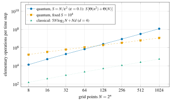
6.7.6What the Negative Result Means
The direct route fails for a reason that has nothing to do with today’s noise and everything to do with information. A nonlinear update needs \(N\) numbers, and a quantum register does not release them for less than \(\Theta(N)\) shots. Any proposal for end-to-end quantum advantage in nonlinear wave simulation must therefore contain a coherent nonlinear update. Its cost per step must be \(o(N)\) in gates and shots combined. The model of Section 6.7.3 gives the target concretely: match the \(\Theta(n^{2})\) cost of the linear kernel, or at least beat \(\Theta(N\log N)\) with a constant that survives the shot overhead of reading the final answer.
The linear-embedding routes can in principle meet this target for weakly nonlinear, dissipative problems [142]. The polynomial arithmetic on encoded states of Chapter IV (NNQA) is a candidate primitive for the pointwise polynomial map in Equation (6.13) without measurement. This chapter tells us how good such a primitive has to be. It also gives a template for honest accounting beyond fluids: whenever an algorithm’s inner loop needs the data it is processing, count the read-out.
6.8Relation to the Other Chapters
Both halves of this chapter rest on the HPC stack of Chapter III. RubriQ places CUDA-Q state-vector simulation inside a reinforcement-learning loop on Perlmutter, with the containers, Slurm integration and Qiskit-to-CUDA-Q lowering that Q-GEAR provides. The nonlinear-wave study used GPU simulation to run the end-to-end hybrid solver at sizes beyond the hardware runs. The data-encoding family in the RubriQ benchmark and the reload step of the split-step solver are both QCrank-type vectorized encoders. So the encoding work of Chapter IV supplies the loader whose \(\Theta(N)\) cost Equation (6.14) counts, and its NNQA is the natural candidate for a coherent nonlinear update.
The T-count that RubriQ minimizes is the fault-tolerant cost defined by the error-correcting codes of Chapter VII. Its Clifford-fraction term is a tableau check in the stabilizer formalism that Chapter VII uses to build and audit encoders. Conversely, the seeded Clifford ensembles of Chapter VII are exactly the circuits that the Clifford term verifies at zero simulation cost. Finally, Part B’s cost discipline is to count shots, depth and reload latency, and to compare with the classical baseline at equal accuracy. The hardware-aware optimizers of Chapter V applied the same discipline to NISQ circuits, and this chapter carries it into the fault-tolerant setting.
6.9Summary
This chapter answered RQ4 in two parts. Learned synthesis can produce circuits that respect fault-tolerant budgets when the learning signal is a dense, decomposable rubric evaluated at HPC scale. RubriQ fine-tunes a 7B coder with GRPO against a five-term rubric computed by CUDA-Q simulation on Perlmutter. On 1500 benchmark circuits it achieves \(3.31\times\) mean T-gate compression against \(2.05\times\) for sparse-reward RL, sub-\(1\%\) hardware-constraint violations and \(96\%\) correctness. It converges two to three times faster with proportionally fewer simulator calls, and its circuits were validated on IBM Heron r3 and IonQ Forte [8].
Honest cost accounting was applied to the direct simulation of nonlinear waves. Reading the field at every step costs \(\Theta(N^{2}/\varepsilon^{2})\) gate executions per step against \(\Theta(N\log N)\) classically, so no end-to-end advantage is possible without a coherent nonlinear update. The unified cost-and-error model, adaptive controller and hardware-validated kernels state that target quantitatively [9]. The next chapter turns from the cost of fault-tolerant computation to whether it can be trusted on hardware the user does not own.
Chapter VIIAuditing Error Correction on Shared Cloud Hardware
This chapter addresses the first half of RQ5: how do we make error-corrected computation on shared cloud quantum processors auditable and secure? The dissertation’s thesis is that a co-designed classical stack surrounds the QPU at every layer. One of those layers, this chapter argues, must be a security layer attached at the error-correcting encoder. A fixed, publicly known encoder circuit is a reusable target for a co-located adversary who can inject a single Pauli fault. An encoder drawn afresh from a seeded ensemble at every run changes the map from physical faults to logical effects. The syndrome check then becomes a defense. We make this argument quantitative as follows:
define the accepted logical disturbance (Section 7.4);
derive its expectation over Haar-random encoders (Section 7.4.3);
replace the exponentially costly Haar ensemble by a polynomial-cost seeded Clifford ensemble (Section 7.5);
specify an audit protocol (Section 7.6);
evaluate it by exact enumeration up to eight qubits, with the fixed [[5,1,3]] code as control, and in gate-level simulations up to \(n=17\) qubits (Section 7.7).
Section 7.8 states the limitations, Section 7.9 connects the chapter to Chapters VI and VIII, and Section 7.10 summarizes.
7.1Introduction
Quantum processors are consumed as a cloud service. A user submits a circuit, and a scheduler places it on a device that other users’ circuits also occupy or have just occupied. The result comes back with no attestation of what else ran on the same chip. Multi-programming of a single QPU has been proposed as a throughput measure [149]. For NISQ workloads, the security consequences of co-tenancy have been studied. One job can direct crosstalk at another [105], and defenses that scan for malicious circuit patterns are needed [150].
Error-corrected workloads change the picture in two ways. First, the encoder that maps a logical state into a code is a long, structured circuit that runs identically every time. If it is public, an adversary can precompute which physical fault produces which logical effect. Second, error correction already contains a defense: syndrome extraction followed by correction or rejection catches exactly the low-weight disturbance a fault injector can produce. The question is how to stop the adversary from routing around it.
Fault-injection attacks are classical territory. Boneh, DeMillo and Lipton showed that a single induced fault can break RSA signatures [151], and cryptographic-module standards have since required fault detection and randomized countermeasures [98]. The analogue we propose for QEC is reseeding: the encoder is drawn from a seeded ensemble at each run. A fault tuned to one encoder then maps to a detectable syndrome under the next.
The idea resembles randomized compiling [152], which twirls gates to turn coherent noise into stochastic noise. It differs in intent and in analysis. Our adversary is a strategist, not noise. Our figure of merit is the logical damage that survives the syndrome check, not the average gate fidelity.
Reseeding is more than a slogan only if three questions are answered.
What quantity does the adversary want to maximize and the defender want to bound?
What does the ideal defense, a Haar-random encoder, achieve, and can a polynomial-size circuit achieve nearly the same?
How does an operator audit that the randomness is really there, in the vocabulary of the standards that govern randomness in cryptographic modules [98], [99]?
The contributions answer them in turn.
A bounded cloud fault model (Section 7.3) and the accepted logical disturbance (Section 7.4), an acceptance-weighted measure of the harmful logical action that survives syndrome-based rejection. Its Haar expectation has an exact expression that depends only on second moments, so it holds for any unitary 2-design (Section 7.4.3).
The Hadamard-structured ensemble (HSE), a seeded family of Clifford encoders built from Hadamard, phase, permutation and CNOT layers of depth \(d\), with polynomial-cost derivation of stabilizers and logicals (Section 7.5).
An audit protocol (Section 7.6) and its evaluation (Section 7.7). For eight-qubit HSE encoders of depth \(12\) with all \(3n=24\) weight-one Pauli faults, reseeding reduces the mean accepted logical disturbance from \(0.150\) (fault chosen after the encoder is known) to \(0.020\) (fault committed before the seed is drawn). This \(86.7\%\) reduction is attributable to rejection. Also, \(18.5\%\) of the sampled encoders satisfy the exact error-correction conditions, the fixed [[5,1,3]] code corrects every tested fault, and gate-level Stim simulations at \(n\in\{5,9,13,17\}\) confirm the scaling.
7.2Preliminaries
7.2.1Stabilizer Codes and the Five-Qubit Code
Here we fix the notation of the stabilizer formalism reviewed in Section 2.7. An \([[n,k,\delta]]\) stabilizer code is defined by an abelian subgroup \(\mathcal{S}\) of the \(n\)-qubit Pauli group that does not contain \(-I\) and has \(n-k\) independent generators \(g_1,\dots,g_{n-k}\). The code space is \[\mathcal{C}=\{\ket{\phi}:\ g\ket{\phi}=\ket{\phi}\ \ \forall g\in\mathcal{S}\},\qquad \dim\mathcal{C}=2^{k}. \tag{7.1}\] A Pauli \(P\) has syndrome \(\sigma(P)\in\{0,1\}^{n-k}\) with \(\sigma_j(P)=0\) if \(P\) commutes with \(g_j\) and \(1\) otherwise. Paulis with trivial syndrome form the normalizer \(N(\mathcal{S})\). Those in \(N(\mathcal{S})\setminus\mathcal{S}\) act as non-trivial logical operators, and the distance \(\delta\) is the minimum weight of such an operator. The Knill–Laflamme conditions [72] state that a set of errors \(\mathcal{F}\) is correctable if and only if \[\Pi\,P_a^{\dagger}P_b\,\Pi \;=\; c_{ab}\,\Pi\qquad\forall\,P_a,P_b\in\mathcal{F}\cup\{I\}, \tag{7.2}\] with \(\Pi\) the projector onto \(\mathcal{C}\) and \(c_{ab}\) scalars. For a stabilizer code and Pauli errors, Equation (7.2) holds when every product \(P_a^{\dagger}P_b\) either lies in \(\mathcal{S}\) or anticommutes with some generator. The weaker condition that every \(P\in\mathcal{F}\) be detectable requires only that \(P\notin N(\mathcal{S})\setminus\mathcal{S}\).
The [[5,1,3]] code [73], [153] is the smallest code that corrects an arbitrary single-qubit error. Its four generators are the cyclic shifts of \(XZZXI\), and its logical operators can be taken as \(\bar X=X^{\otimes 5}\) and \(\bar Z=Z^{\otimes 5}\) [12] (Table 7.1). The code is perfect: its \(2^{4}-1=15\) non-zero syndromes are in one-to-one correspondence with the \(3n=15\) weight-one Pauli faults, so every such fault is detected and uniquely identified. This makes the code the right test bed for the audit. An adversary restricted to weight-one faults cannot defeat the ideal [[5,1,3]] encoder. Any surviving disturbance must therefore be attributed to the encoder ensemble, not to the code.
| Operator | \(q_1\) | \(q_2\) | \(q_3\) | \(q_4\) | \(q_5\) | Role |
|---|---|---|---|---|---|---|
| \(g_1\) | \(X\) | \(Z\) | \(Z\) | \(X\) | \(I\) | stabilizer generator |
| \(g_2\) | \(I\) | \(X\) | \(Z\) | \(Z\) | \(X\) | stabilizer generator |
| \(g_3\) | \(X\) | \(I\) | \(X\) | \(Z\) | \(Z\) | stabilizer generator |
| \(g_4\) | \(Z\) | \(X\) | \(I\) | \(X\) | \(Z\) | stabilizer generator |
| \(\bar X\) | \(X\) | \(X\) | \(X\) | \(X\) | \(X\) | logical \(X\) (weight 5; weight-3 representatives exist) |
| \(\bar Z\) | \(Z\) | \(Z\) | \(Z\) | \(Z\) | \(Z\) | logical \(Z\) (weight 5; weight-3 representatives exist) |
| Weight-one faults: \(\{X_i,Y_i,Z_i\}_{i=1}^{5}\), \(15\) in total; syndromes \(\sigma\in\{0,1\}^{4}\setminus\{0000\}\), \(15\) in total. | ||||||
7.2.2Encoders, Syndromes and Rejection
An encoder for a \(k=1\) code is a unitary \(E\) on \(n\) qubits that maps the logical qubit \(A\), together with \(n-1\) ancillas \(B\) prepared in \(\ket{0}\), into the code space, \[E\big(\ket{\psi}_A\otimes\ket{0^{\,n-1}}_B\big)\in\mathcal{C},\qquad \mathcal{S}=\big\{E\,Z_j\,E^{\dagger}:\ j=2,\dots,n\big\},\qquad \bar X=E X_1 E^{\dagger},\ \ \bar Z=E Z_1 E^{\dagger}. \tag{7.3}\] When \(E\) is Clifford, the stabilizers and logicals in Equation (7.3) are Paulis. Tableau simulation [83] computes them in time polynomial in \(n\) and in the gate count of \(E\). The code projector is \(\Pi_E=E\,\Pi_0\,E^{\dagger}\) with \(\Pi_0=I_A\otimes\ket{0^{\,n-1}}\!\bra{0^{\,n-1}}_B\). Up to the choice of generators, the syndrome measurement is the measurement of \(\{Z_j\}_{j\ge 2}\) in the decoded frame.
We consider syndrome-based rejection: a run whose syndrome is non-trivial is discarded. Rejection is the right audit primitive for two reasons. The accepted output depends on the fault only through \(\Pi_E\). And an operator who rejects rather than corrects cannot be misled by a decoder that the adversary has also studied. Correction is the operational goal, and Section 7.8 discusses how the audit extends to it.
7.2.3Random Unitaries, Designs and the Clifford Group
A Haar-random encoder is the natural idealization of “the adversary knows nothing about the code.” Haar-random unitaries on \(n\) qubits cannot be implemented with polynomially many gates. But unitary \(t\)-designs, ensembles whose first \(t\) moments agree with Haar’s, reproduce many of their statistical properties [84], [154].
The uniform distribution over the \(n\)-qubit Clifford group is a unitary 2-design and indeed a 3-design [85]. A uniformly random Clifford element can be sampled and compiled in polynomial time [155], [156]. Section 7.4.3 exploits one consequence: any quantity quadratic in the encoder and its adjoint has the same expectation under Haar and under any 2-design. The accepted logical disturbance is such a quantity.
7.3The Bounded Cloud Fault Model
Figure 7.1 depicts the setting. A client prepares a logical state, chooses (or is assigned) an encoder, and submits the encoded computation to a shared QPU. A co-tenant adversary occupies neighbouring qubits during a fault window between encoding and syndrome extraction. The syndrome is then measured, and the run is accepted or rejected. The adversary is bounded as follows.
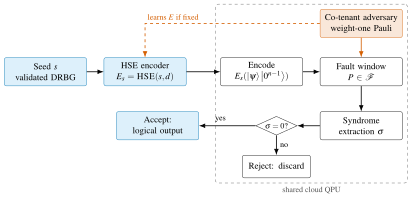
Assumption 7.1 (Bounded cloud fault model).
Fault capability. During the fault window of one run the adversary can apply at most one weight-one Pauli \(P\in\mathcal{F}=\{X_i,Y_i,Z_i\}_{i=1}^{n}\) to the encoded register, for instance through directed crosstalk or a mistimed control pulse [105]. Native device noise is either absent (exact enumeration) or modelled as depolarizing noise on every gate (gate-level simulation).
Knowledge. The adversary knows the code family, the encoder ensemble and the audit protocol. In the adaptive setting the adversary also learns the encoder \(E\) of the current run before choosing \(P\); this models a fixed, public encoder, since a fixed encoder is learned once and known thereafter. In the committed setting the adversary must choose \(P\) before the seed of the current run is drawn.
Trusted components. Seed generation, encoder derivation from the seed, syndrome extraction and the accept/reject decision are trusted and, in the enumeration experiments, ideal.
Goal. The adversary seeks to maximize the harmful logical action that survives rejection; the defender seeks to bound it.
The model is deliberately bounded. A single weight-one fault is the smallest disturbance that a code is built to handle. It therefore isolates whether the encoder, rather than the code, is the weak point. The adaptive-versus-committed distinction is the formal content of “reseeding.” Figure 7.2 shows the two settings: they differ only in whether the adversary chooses after or before the seed.
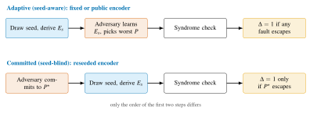
7.4Accepted Logical Disturbance
7.4.1Definition
We need one number for the harm a fault does after rejection has had its chance. Two quantities matter: the probability that the faulty run is accepted, and the fidelity of the accepted logical state with the intended one. A fault that is always rejected or acts trivially on the logical qubit does no harm. A fault that is accepted and flips the logical qubit does maximal harm. We evaluate the measure on the logical qubit entangled with a reference qubit \(R\). This makes it independent of the logical state and yields the entanglement fidelity of the induced logical channel.
Definition 7.2 (Accepted logical disturbance). Let \(E\) be an encoder for a \(k=1\) code with code projector \(\Pi_E=E\Pi_0E^{\dagger}\), let \(\ket{\Phi^{+}}_{AR}=(\ket{00}+\ket{11})/\sqrt2\), let \(\ket{\Phi_E}=(E\otimes I_R)\big(\ket{\Phi^{+}}_{AR}\otimes\ket{0^{\,n-1}}_B\big)\) be the encoded half of a maximally entangled pair, and let \(P\) be a fault operator. Write \(p_{\mathrm{acc}}(E,P)=\norm{(\Pi_E P\otimes I_R)\ket{\Phi_E}}^{2}\) for the acceptance probability and \(F_e(E,P)=\abs{\bra{\Phi_E}(P\otimes I_R)\ket{\Phi_E}}^{2}/p_{\mathrm{acc}}(E,P)\) for the entanglement fidelity of the accepted state. The accepted logical disturbance is \[\Delta(E,P)\;=\;p_{\mathrm{acc}}(E,P)\,\big(1-F_e(E,P)\big) \;=\;\norm{(\Pi_E P\otimes I_R)\ket{\Phi_E}}^{2}-\abs{\bra{\Phi_E}(P\otimes I_R)\ket{\Phi_E}}^{2}. \tag{7.4}\]
The second form in Equation (7.4) follows from \(\Pi_E\ket{\Phi_E}=\ket{\Phi_E}\) and is the one we compute. It is the probability that the fault is accepted and the accepted state is orthogonal, within the code space, to the intended one. Several properties are immediate. \(\Delta\in[0,1]\). \(\Delta=0\) whenever \(P\) is rejected with certainty or acts as a logical identity. \(\Delta\) is acceptance-weighted, so a fault that slips through with probability \(p_{\mathrm{acc}}\) and then does full damage contributes \(p_{\mathrm{acc}}\), not one.
For an ensemble of encoders \(\mathcal{E}\) and the two adversaries of Assumption 7.1 (Figure 7.2) the quantities audited are \[\bar\Delta_{\mathrm{adapt}}(\mathcal{E})=\mathbb{E}_{E\sim\mathcal{E}}\Big[\max_{P\in\mathcal{F}}\Delta(E,P)\Big],\qquad \bar\Delta_{\mathrm{commit}}(\mathcal{E})=\max_{P\in\mathcal{F}}\ \mathbb{E}_{E\sim\mathcal{E}}\big[\Delta(E,P)\big], \tag{7.5}\] and the gap between them is the value of reseeding. For a single fixed encoder the two coincide: a fixed encoder offers no protection beyond the code itself. In the experiments of Section 7.7 the committed adversary’s fault is also averaged over \(\mathcal{F}\), to report the typical case alongside the worst case. The value \(0.020\) quoted there is the mean over faults and seeds, as reported in [10].
7.4.2Clifford Encoders and Pauli Faults
For the encoders and faults used in the experiments, Equation (7.4) collapses to an indicator.
Lemma 7.3. Let \(E\) be a Clifford encoder and \(P\neq I\) a Pauli fault, and write \(E^{\dagger}PE=\pm\,L\otimes Q\) with \(L\) a Pauli on the logical qubit \(A\) and \(Q\) a Pauli on the ancillas \(B\). Then \(P\) is accepted if and only if \(Q\in\{I,Z\}^{\otimes(n-1)}\), and \[\Delta(E,P)=\mathbb{1}\big[Q\in\{I,Z\}^{\otimes(n-1)}\big]\cdot\mathbb{1}\big[L\neq I\big]\in\{0,1\}. \tag{7.6}\]
Proof. In the decoded frame the faulty state is \((L\otimes Q\otimes I_R)(\ket{\Phi^{+}}\otimes\ket{0^{\,n-1}})\) up to a phase. If \(Q\) contains an \(X\) or \(Y\) factor it maps \(\ket{0^{\,n-1}}\) to an orthogonal computational basis state, so \(\Pi_0\) annihilates the state and \(p_{\mathrm{acc}}=0\). Otherwise \(Q\ket{0^{\,n-1}}=\ket{0^{\,n-1}}\), so \(p_{\mathrm{acc}}=1\) and \(F_e=\abs{\bra{\Phi^{+}}(L\otimes I)\ket{\Phi^{+}}}^{2}=\abs{\Tr L/2}^{2}\), which equals \(1\) if \(L=I\) and \(0\) otherwise. ◻
Figure 7.3 draws the decision of Lemma 7.3, which we read in two ways. First, \(\Delta(E,P)=1\) exactly when \(P\in N(\mathcal{S}_E)\setminus\mathcal{S}_E\), that is, when \(P\) is an undetectable logical of the code generated by \(E\). Hence \(\max_{P\in\mathcal{F}}\Delta(E,P)=1\) if and only if the code has distance one, and \(\bar\Delta_{\mathrm{adapt}}\) is the fraction of distance-one draws. Second, \(\mathbb{E}_E[\Delta(E,P)]\) is the fraction of encoders for which the particular fault \(P\) is an undetectable logical, the most a committed adversary can hope for.
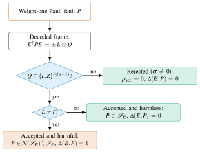
7.4.3Expectation over Haar-Random Encoders
The Haar-random encoder is the ideal against which structured ensembles are measured. Its expected disturbance has a closed form.
Proposition 7.4 (Haar expectation of the accepted logical disturbance). Let \(d=2^{n}\), \(k=1\), and let \(P\) be any fixed \(n\)-qubit operator with \(\Tr P=0\) and \(P^{2}=I\) (in particular any non-identity Pauli). Then \[\mathbb{E}_{E\sim\mathrm{Haar}}\big[\Delta(E,P)\big]\;=\;\frac{3d}{2(d^{2}-1)}\;=\;\frac{3\cdot 2^{n}}{2\,(4^{n}-1)}, \tag{7.7}\] independently of \(P\). The same value is obtained for any unitary 2-design, in particular for the uniform distribution over the \(n\)-qubit Clifford group. For \(k\) logical qubits the constant becomes \(d\,(2^{k}-2^{-k})/(d^{2}-1)\).
Proof sketch. Set \(V=E^{\dagger}PE\). Both terms of Equation (7.4) are quadratic in \(V\), hence in \(E\) and \(E^{\dagger}\), so only the second moment of \(E\) enters and any 2-design gives the Haar value. For Haar \(E\) and \(\Tr P=0\), \(\Tr P^{2}=d\), the standard second-moment identity gives \(\mathbb{E}[V\otimes V]=(d\,\mathrm{SWAP}-I)/(d^{2}-1)\), and therefore \(\mathbb{E}[VAV]=(d\Tr(A)\,I-A)/(d^{2}-1)\) for any operator \(A\). The acceptance term is \(\bra{\Phi}(V\Pi_0V\otimes I_R)\ket{\Phi}\) with \(\ket{\Phi}=\ket{\Phi^{+}}\otimes\ket{0^{\,n-1}}\); taking \(A=\Pi_0\), \(\Tr\Pi_0=2\), gives \(\mathbb{E}[p_{\mathrm{acc}}]=(2d-1)/(d^{2}-1)\). The fidelity term is \(\mathbb{E}\abs{\Tr(V\rho)}^{2}\) with \(\rho=\Tr_R\ket{\Phi}\!\bra{\Phi}=\tfrac12 I_A\otimes\ket{0^{\,n-1}}\!\bra{0^{\,n-1}}\), and \(\mathbb{E}\abs{\Tr V\rho}^{2}=\Tr[(\rho\otimes\rho)\,\mathbb{E}(V\otimes V)]=(d\Tr\rho^{2}-(\Tr\rho)^{2})/(d^{2}-1)=(d/2-1)/(d^{2}-1)\). Subtracting yields \((2d-1-d/2+1)/(d^{2}-1)=3d/(2(d^{2}-1))\). For general \(k\) replace \(\Tr\Pi_0=2\) by \(2^{k}\) and \(\Tr\rho^{2}=1/2\) by \(2^{-k}\). The full derivation is given in [10], whose Theorem 1 states the same values in the form \(\mathbb{E}[p_{\mathrm{acc}}]=(KN-1)/(N^{2}-1)\) and \(\mathbb{E}[c]=N(K^{2}-1)/(K(N^{2}-1))\) with \(N=2^{n}\) and \(K=2^{k}\). ◻
For \(n=5\), Equation (7.7) gives \(96/2046\approx 0.0469\), for \(n=8\) it gives \(768/131070\approx 0.0059\), and for \(n=17\) it gives \(\approx 1.1\times 10^{-5}\). Asymptotically the Haar value decays as \(\tfrac{3}{2}\,2^{-n}\). As a consistency check, under the uniform Clifford group \(E^{\dagger}PE\) is a uniformly random non-identity Pauli. By Lemma 7.3 the disturbance is one exactly when its ancilla part is \(Z\)-type (\(2^{n-1}\) choices) and its logical part is non-identity (\(3\) choices). This gives \(3\cdot 2^{n-1}/(4^{n}-1)=48/1023\) for \(n=5\), in agreement with Equation (7.7).
The Haar value is the committed-adversary disturbance of an ensemble with no structure at all. A structured ensemble may lie above it (if its structure leaks) or below it (if its structure happens to favour good codes). And the adaptive-adversary disturbance of any ensemble is at least its committed-adversary disturbance, because a maximum over faults dominates each fault’s mean.
7.5The Hadamard-Structured Ensemble
Haar-random encoders are unimplementable. Even uniformly random Cliffords, though polynomial to sample [155], produce circuits whose depth and connectivity are not under the operator’s control. The HSE is a seeded Clifford ensemble designed for the audit: shallow, of fixed layer structure, and cheap to derive from a seed. It is also rich enough to leave the Hadamard-free subgroup of the Clifford group [156], whose elements map \(Z\)-type Paulis to \(Z\)-type Paulis. A Hadamard-free encoder therefore produces only \(Z\)-type stabilizers and cannot detect a single phase-flip fault.
Let \(s\) be a seed and \(\mathrm{DRBG}(s)\) a deterministic random-bit generator instantiated from it [99]. A depth-\(d\) HSE encoder is \[E_s=\prod_{\ell=1}^{d}\ \mathrm{C}_{M_\ell}\;\Pi_{\sigma_\ell}\;\mathrm{S}_{B_\ell}\;\mathrm{H}_{A_\ell}, \qquad \mathrm{H}_{A}=\bigotimes_{i\in A}H_i,\quad \mathrm{S}_{B}=\bigotimes_{i\in B}S_i,\quad \mathrm{C}_{M}=\prod_{(i\to j)\in M}\mathrm{CNOT}_{i\to j}, \tag{7.8}\] where in layer \(\ell\) the Hadamard subset \(A_\ell\subseteq[n]\), the phase subset \(B_\ell\subseteq[n]\), the qubit permutation \(\sigma_\ell\in S_n\) and the CNOT matching \(M_\ell\) (a set of disjoint ordered pairs) are all read from \(\mathrm{DRBG}(s)\). Figure 7.4 shows one layer on five qubits. Every factor in Equation (7.8) is Clifford, so the stabilizer generators and logical operators follow from Equation (7.3) by tableau conjugation at cost \(\mathcal{O}\!\left(n\right)\) per gate [83]. That is \(\mathcal{O}\!\left(d\,n^{2}\right)\) for the whole encoder, against \(\mathcal{O}\!\left(4^{n}\right)\) to write down a Haar-random unitary. The permutation layer is free on hardware with all-to-all connectivity and costs a SWAP network otherwise. On a fixed coupling graph it can be restricted to permutations realizable in constant depth, the topology-compliance constraint that Chapter VI enforced through a reward term.
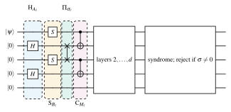
The seed budget of the ensemble is small and explicit. Each layer consumes:
\(n\) bits for the Hadamard subset;
\(n\) bits for the phase subset;
about \(\log_2 n!\approx n\log_2 n\) bits for the permutation;
at most \(n\log_2 n\) bits for the matching.
A depth-\(d\) encoder is therefore determined by \(\mathcal{O}\!\left(d\,n\log n\right)\) output bits of the generator: a few hundred bits for the five-qubit experiments and a few thousand at \(n=17\). This fits in a single request to an SP 800-90A generator, and it fixes the requirement on the seed source precisely. Reseeding protects against a committed adversary only if the adversary cannot predict those bits. A validated DRBG is certified to provide exactly that, and no circuit-level cleverness can substitute for it. Because the same seed always yields the same circuit, an auditor who holds the seed log can regenerate every encoder and recompute every reported syndrome.
The budget also bounds the entropy of the ensemble from above: at most \(\mathcal{O}\!\left(d\,n\log n\right)\) bits, against the \(\Theta(n^{2})\) bits needed to specify a uniformly random Clifford [155]. This is why a shallow HSE is not a 2-design, and why its disturbance can differ from the value of Proposition 7.4 in either direction.
Not every HSE encoder generates a good code. A draw whose CNOT layers never touch some ancilla leaves that ancilla’s \(Z\) stabilizer of weight one. A draw with too few Hadamards leaves the logical operators concentrated on few qubits. The audit does not filter such draws away. It measures how often they occur and how much disturbance they admit, because an operator who reseeds at every run will also draw them.
As reported in [10], \(18.5\%\) of the sampled depth-\(12\) HSE encoders on eight qubits satisfy the exact Knill–Laflamme conditions Equation (7.2) for all \(24\) weight-one faults. The fraction for uniformly random Clifford encoders is \(14.5\%\). Such draws are as capable against this fault set as a designed distance-three code such as the [[5,1,3]] code. A much larger fraction detect all such faults, which is what rejection needs. The depth \(d\) trades cost against quality. Deeper ensembles approach the uniform Clifford distribution and hence the 2-design value of Equation (7.7). Shallow ensembles are cheaper and, as the next sections show, can beat that value against a committed adversary because their structure favours spreading.
7.6The Audit Protocol
An audit is a procedure that an operator, a client or a third party can run. It certifies that the deployed encoder ensemble delivers the disturbance bound it claims, and that the randomness feeding it has the quality the claim assumes. Algorithm 4 states the procedure, and Table 7.2 maps each step onto the standards that govern it. The protocol has two modes, which mirror Assumption 7.1 and differ only in when the adversary chooses the fault. It has two evaluation back-ends. Exact enumeration by tableau simulation serves Clifford encoders and Pauli faults, and sampled gate-level simulation with Stim [28] serves runs that include native noise.
| Step | Operation | Requirement audited | Standard |
|---|---|---|---|
| 1 | Seed generation | Approved deterministic random-bit generator with a validated entropy source, instantiated inside a validated module | SP 800-90A [99], SP 800-90B [157], FIPS 140-3 [98] |
| 2 | Seed transport to the cloud controller | Confidentiality of the seed against a quantum-capable eavesdropper | ML-KEM, FIPS 203 [95] |
| 3 | Encoder derivation \(E_s=\textsc{HSE}(s,d)\) | Determinism and reproducibility from the seed; polynomial cost | Section 7.5 |
| 4 | Encoding on the QPU | Start of the fault window | — |
| 5 | Fault injection (model) | Adaptive vs. committed adversary of Assumption 7.1 | — |
| 6 | Syndrome extraction and rejection | Trusted measurement of the generators; accept iff \(\sigma=0\) | — |
| 7 | Disturbance accounting | Exact enumeration (tableau) or sampled gate-level simulation (Stim) of \(\Delta\) | Equation (7.4) |
| 8 | Attestation of the audit log | Integrity and non-repudiation of seeds, syndromes and disturbances | ML-DSA / SLH-DSA, FIPS 204/205 [96], [97] |
The protocol is reproducible by construction. Encoders are derived deterministically from logged seeds, so an auditor can regenerate every encoder, recompute every stabilizer and verify every reported syndrome. The artifact of [10] is containerized and seeded for exactly this reason.
The protocol is also standards-facing (Section 2.8 reviews the relevant standards). The quality of the defense rests on the unpredictability of the seed, so the seed source must itself be an approved generator in a validated module. That means an SP 800-90A DRBG [99] fed by an SP 800-90B entropy source [157] and operated under FIPS 140-3 [98]. The seed’s transport and the log’s attestation are natural applications of the post-quantum standards ML-KEM and ML-DSA/SLH-DSA [95], [96], [97].
The seed-derivation and encoder rows (steps 1 and 3) follow the standards discussion of [10]. That discussion derives the layer choices from an SP 800-90A generator and takes FIPS 140-3 as the precedent for a validated module boundary. The transport and attestation rows (steps 2 and 8) are this dissertation’s extension. Chapter VIII describes the FIPS 140-3 module that would implement steps 1, 2 and 8.
7.7Experiments
7.7.1Setup
Two experimental regimes were used in [10]. In the exact regime, encoders are Haar isometries, uniformly random Clifford circuits or HSE draws on \(n=4\) to \(8\) qubits with \(k=1\). The fault set is all \(3n\) weight-one Paulis, and \(\Delta\) is evaluated exactly by dense linear algebra and Lemma 7.3. Native noise is absent, so every non-zero disturbance is attributable to the encoder ensemble and the adversary. The [[5,1,3]] code of Table 7.1 is the fixed control.
The adaptive adversary of Assumption 7.1 (seed-aware in the paper’s terms) evaluates all \(3n\) faults against each encoder and injects the worst. The committed adversary (seed-blind) selects one fault on training seeds and is scored on disjoint held-out test seeds. The primary comparisons use \(n=8\), \(24\) faults, \(200\) seeds per condition and HSE depths \(d\in\{1,2,4,6,8,12\}\). The reported depth, \(d=12\), maximizes the exact-correction fraction.
In the gate-level regime, HSE encoders with \(n\in\{5,9,13,17\}\) and \(d\in\{2,4,8,12\}\) are compiled to gates and simulated with Stim [28]. Each condition uses \(20\) seeds, every single-qubit Pauli fault and both logical input states. Ideal runs use one shot per circuit as a deterministic cross-check. Noisy runs use 1,000 shots under depolarizing noise with single-qubit rate \(p_1=10^{-3}\) and two-qubit rate \(p_2=10^{-2}\) applied after every encoder and decoder gate. Seeds were drawn from a DRBG in both regimes. Uncertainties are 95% percentile-bootstrap intervals over seeds (5,000 resamples) and Wilson intervals for the exact-correction fractions.
7.7.2Results in the Exact Regime
Table 7.3 summarizes the exact-regime results at the selected condition (\(n=8\), \(k=1\), \(d=12\)), and Figure 7.5 plots them. Against the adaptive adversary, that is, a fixed and therefore learnable encoder, the mean accepted logical disturbance is \(0.150\). By Lemma 7.3, \(15\%\) of HSE draws have distance one, and the adversary finds the undetectable fault. Against the committed adversary the mean is \(0.020\). For a fault chosen on training seeds and scored on held-out seeds, only \(2\%\) of (encoder, fault) pairs let the fault through as a harmful logical.
The reduction is \((0.150-0.020)/0.150=86.7\%\), and it is attributable to rejection (Figure 7.2). Under reseeding, a fault that is an undetectable logical for one encoder anticommutes with a stabilizer of the next and is caught. The 2-design reference of Proposition 7.4, \(0.0059\) for \(n=8\), lies below both measured values, as it must. It is the average over all faults and encoders, whereas the audited numbers are a worst case over faults (adaptive) or a trained choice (committed). The measured Haar and uniform-Clifford means track the closed form to within \(1.6\%\) at the largest width [10].
Finally, \(18.5\%\) of the sampled depth-\(12\) encoders satisfy the exact conditions Equation (7.2) for the full weight-one fault set, against \(14.5\%\) of uniformly random Clifford encoders. The uniform Clifford encoders use fewer two-qubit instructions at this width (median \(33\) against \(112\)) but reach a lower exact-correction fraction. So nearly one draw in five is a genuine distance-three code, while the fixed [[5,1,3]] control corrects every tested fault with zero accepted disturbance.
| Quantity | Value | Interpretation (Lemma 7.3) |
|---|---|---|
| Encoder; fault set | HSE, \(n=8\), \(k=1\), \(d=12\); \(3n=24\) Paulis | all weight-one faults enumerated; [[5,1,3]] as fixed control |
| \(\bar\Delta_{\mathrm{adapt}}\) (fixed encoder, seed-aware adversary) | \(0.150\) | fraction of draws with a distance-one code |
| \(\bar\Delta_{\mathrm{commit}}\) (reseeded encoder, seed-blind fault) | \(0.020\) | fraction of (draw, fault) pairs accepted and harmful |
| Relative reduction | \(86.7\%\) | attributable to syndrome-based rejection |
| Encoders satisfying Equation (7.2) for \(\mathcal{F}\) | \(18.5\%\) (\(14.5\%\) uniform Clifford) | distance-three codes among draws |
| 2-design (Haar) reference, \(n=8\) | \(0.0059\) | \(3\cdot 2^{n}/(2(4^{n}-1))\), Proposition 7.4 |
| Gate-level regime | \(n\in\{5,9,13,17\}\); \(p_1=10^{-3}\), \(p_2=10^{-2}\) | Stim, 20 seeds per condition; scaling confirmed |
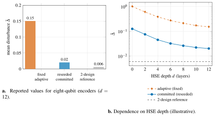
The depth dependence in Figure 7.5b makes the mechanism visible. At depth zero the encoder is the identity, the ancillas are unprotected, and any fault on the logical qubit is accepted and harmful. The adaptive adversary then always wins (\(\bar\Delta_{\mathrm{adapt}}=1\)), and a committed fault is harmful in \(3\) of \(24\) cases (\(\bar\Delta_{\mathrm{commit}}=0.125\)), both exactly. Each additional layer spreads the logical operators over more qubits and converts more weight-one faults into detectable ones. The committed curve falls quickly, because a randomly placed fault rarely aligns with the few remaining weight-one logicals. The adaptive curve falls only as fast as the fraction of distance-one draws, because the adaptive adversary needs just one such logical to exist.
Because \(\Delta\) is an indicator in this regime (Lemma 7.3), the audited means are Bernoulli proportions with elementary precision. With \(M\) seeds the standard error of an estimated mean \(\bar\Delta\) is \(\sqrt{\bar\Delta(1-\bar\Delta)/M}\). At the \(M=200\) seeds of [10] this is \(\pm0.010\) for \(\bar\Delta_{\mathrm{commit}}=0.020\) and \(\pm0.025\) for \(\bar\Delta_{\mathrm{adapt}}=0.150\), which is why the paper reports 95% bootstrap intervals. With \(M=10^{4}\) seeds the two means would be resolved to \(\pm0.0014\) and \(\pm0.0036\). The audit is therefore practical: each seed costs one tableau computation of \(\mathcal{O}\!\left(d\,n^{2}\right)\) operations and \(3n\) syndrome checks. An operator can certify an ensemble to three significant figures in seconds on a laptop, and can re-certify it whenever the depth, the coupling graph or the fault set changes.
7.7.3Gate-Level Simulations at Seventeen Qubits
The exact regime isolates the encoder but ignores noise. In the gate-level regime of [10], HSE encoders on \(n=17\) qubits were compiled to gates and simulated in Stim with depolarizing noise of \(p_1=10^{-3}\) and \(p_2=10^{-2}\). Syndrome extraction was itself noisy, and the disturbance was estimated by sampling. Figure 7.6 sketches the qualitative picture, which is the one the exact regime predicts. Noise alone produces a logical disturbance that scales as a power of the physical rate set by the code distance of the draw. An adaptive adversary adds a floor that noise cannot lower, because the floor is the fraction of draws with an undetectable weight-one logical. Reseeding lowers that floor by the same mechanism as in the exact regime.
In the ideal gate-level runs, the fraction of single-qubit Pauli faults that cause an accepted logical change falls with both width and depth. It falls from about \(0.15\) at \(n=5\), \(d=2\) to roughly \(10^{-2}\) or less at \(n=17\), \(d=12\) (values read from Fig. 4 of [10]). The ideal Stim classification agrees with the dense audit in \(100\%\) of the overlapping cases. Under noise, the fraction of shots that are both accepted and corrupted falls the same way, from about \(0.08\) at \(n=5\), \(d=2\) to the \(10^{-6}\) range at \(n=17\), \(d=12\). There the mean acceptance is only \(1.23\times10^{-5}\) and the unconditional accepted-failure rate \(5.88\times10^{-6}\). The paper notes that this low failure rate records an availability collapse rather than a free lunch. At the widest and deepest condition almost every noisy shot is rejected, so a practical device must also meet an acceptance target over repeated fault-tolerant cycles.
Noisy syndrome extraction adds two effects that the exact regime cannot show. It can misreport a trivial syndrome as non-trivial, which raises the rejection rate and therefore lowers the accepted disturbance at the price of throughput. It can also misreport a non-trivial syndrome as trivial, which lets a fault through that the ideal check would have caught. Both effects grow with \(p_2\) and with the depth of the extraction circuit, and both favour shallow encoders.
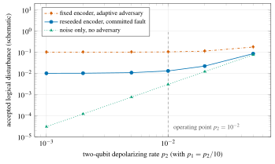
7.8Discussion and Limitations
Weight-one faults. The bounded model allows one weight-one Pauli per run, the natural first case and the one a code is built for. But a co-tenant who can drive crosstalk on a coupler can plausibly produce correlated weight-two faults, and an adversary who controls timing can inject in more than one window. A weight-two fault set leaves Lemma 7.3 and Algorithm 4 unchanged in form, because the audit enumerates \(\mathcal{F}\), whatever it is. But it raises the cost from \(3n\) to \(\mathcal{O}\!\left(n^{2}\right)\) faults per encoder and lowers the fraction of HSE draws that detect everything, so the disturbance values would rise. The Haar expectation of Proposition 7.4 holds for any traceless Hermitian unitary fault, so it remains the reference.
Small codes. The exact experiments use \(n\le 8\), where everything can be enumerated, and the gate-level experiments reach \(n=17\). Neither is a size at which fault-tolerant computation will run. The method scales: tableau simulation is polynomial, Stim handles thousands of qubits, and the disturbance is defined for any code. The ensemble does not obviously scale. At large \(n\) a shallow HSE draw will rarely be a good code, so the operator will want to reseed within a family of encoders known to be good. One route randomizes the encoding circuit of a fixed surface or bicycle code [79], [82] through its automorphisms and gauge freedoms instead of drawing an arbitrary Clifford. The audit applies unchanged to such constrained ensembles.
Adversary model. The adaptive adversary of Assumption 7.1 is strong in knowledge (it learns the encoder exactly) and weak in capability (one Pauli). Real adversaries are the reverse: they see side channels rather than circuits, and they may cause more than one fault. The committed adversary, by contrast, is a faithful model of an attacker facing a fresh seed, provided the seed is unpredictable. This is why the standards mapping of Table 7.2 is part of the defense rather than decoration. The model also treats syndrome extraction as trusted. An adversary who faults the extraction ancillas attacks a different surface, for which flag qubits and repeated extraction are the standard remedies.
Rejection versus correction. Rejection is the cleanest primitive to audit, but computation needs correction. With correction, the quantity that survives is the disturbance after the decoder has applied its recovery. An adaptive adversary can then target faults whose syndrome the decoder maps to the wrong recovery. Definition 7.2 extends directly: replace \(\Pi_E\) with the decoder’s recovery map. Reseeding helps for the same reason: the map from fault to syndrome changes with the seed. Quantifying this extension is the most important next step.
Throughput cost of rejection. Rejection buys safety with discarded runs. In the exact regime the only rejected runs are those in which a fault was injected and caught, so the throughput cost is the adversary’s injection rate. Under native noise, however, every run has a non-zero probability of a non-trivial syndrome. The acceptance rate then falls roughly as \((1-p_2)^{G_2}\), with \(G_2\) the number of two-qubit gates in the encoder and extraction circuits. At \(p_2=10^{-2}\) and a few dozen two-qubit gates this is a tens-of-percent overhead, tolerable for an audit but not for a long computation. The operational regime is correction, with rejection reserved for the audit itself and for the highest-assurance runs.
Cost of reseeding. Every reseed costs a new compilation of the encoder and, on a fixed coupling graph, possibly a new routing. The HSE keeps this cheap because its layer structure is fixed and only the subsets, permutation and matching change. The learned synthesis of Chapter VI suggests a complementary route: a policy trained with a Clifford-fraction and topology-compliance reward emits compliant encoders for each seed directly.
7.9Relation to the Other Chapters
This chapter attaches the dissertation’s security thread to its error-correction thread and connects backward and forward. Backward, the Clifford-fraction and T-count terms of the RubriQ rubric in Chapter VI measure exactly the non-Clifford content whose cost the codes of this chapter impose on logic. The stabilizer tableau that Algorithm 4 derives is the natural certificate of a synthesized encoder. A synthesizer that respects both constraints is the natural compiler for seeded, topology-compliant encoders. The gate-level simulations relied on Stim rather than on the GPU state-vector simulation of Chapter III, because stabilizer circuits admit polynomial simulation. The two simulators are complementary, and the non-Clifford logical operations of a full fault-tolerant computation would need the state-vector path.
Forward, the protocol of Section 7.6 places three requirements on classical cryptography:
an approved DRBG in a validated module for the seed;
a post-quantum key-encapsulation mechanism for its transport;
a post-quantum signature for the audit log.
Chapter VIII presents the FIPS 140-3 module with ML-KEM, ML-DSA and SLH-DSA support [11] that would meet them. The two chapters together answer RQ5. Error-corrected computation on shared hardware becomes auditable when its randomness is defined, measured and sourced to the same standard as the randomness in a cryptographic module.
7.10Summary
We studied a security threat specific to error-corrected computation on shared cloud QPUs: a fixed, public encoder gives a co-located fault injector a reusable target. We formalized a bounded cloud fault model and defined the accepted logical disturbance, the acceptance-weighted harmful logical action that survives syndrome-based rejection. For Clifford encoders and Pauli faults it is an indicator of undetectable logicals, and its exact Haar expectation, \(3\cdot 2^{n}/(2(4^{n}-1))\), holds for any unitary 2-design. We introduced the Hadamard-structured ensemble as a polynomial-cost seeded Clifford substitute for Haar encoders. We specified an audit protocol that is reproducible from logged seeds and maps onto SP 800-90A, FIPS 140-3 and FIPS 203/204/205.
For eight-qubit HSE encoders of depth \(12\) with all \(24\) weight-one faults, reseeding reduced the mean accepted logical disturbance from \(0.150\) to \(0.020\), an \(86.7\%\) reduction attributable to rejection. Also, \(18.5\%\) of the draws satisfied the exact error-correction conditions, the fixed [[5,1,3]] code corrected every tested fault, and gate-level Stim simulations up to \(n=17\) under depolarizing noise confirmed the scaling [10]. The seed source is the hinge on which the whole defense turns, and the next chapter builds it.
Chapter VIIIToward a Post-Quantum-Secure Quantum Stack
This chapter addresses the second half of RQ5 (Trust). Chapter VII showed that an audit of error-corrected computation on a shared cloud processor needs encoder randomness that a co-located adversary cannot predict. The quantum cloud is itself a classical distributed system. Its channels for job submission, calibration distribution, result return and seed generation rest on cryptography that a large enough quantum computer would break. A quantum stack that must be trusted in the coming decade therefore needs protection against the very machine it builds.
This is a design and integration chapter, not an experimental one. Its published evidence is the NIST standards [95], [96], [97], [98], [99], the released QPC SDK [11], the audit of Chapter VII [10] and the candidate’s standardization-timeline tracker [158]. We separate what exists, a software release designed to the FIPS 140-3 requirements and final standards, from what is proposed: a requirements analysis, a trust chain for audited QEC jobs, and a migration plan.
8.1Why a Quantum-Computing Stack Needs Post-Quantum Cryptography
Section 2.8 recalls two facts. Shor’s algorithm [87] solves factoring and discrete logarithms in polynomial time, and so defeats RSA, finite-field Diffie–Hellman and elliptic-curve cryptography. Grover’s algorithm [88] halves the effective key length of symmetric primitives. Gidney and Ekerå [89] estimated that RSA-2048 could be factored in about eight hours with twenty million noisy physical qubits under surface-code error correction at a \(10^{-3}\) gate error rate. A 2025 revision by Gidney [90] lowers the requirement below one million physical qubits. The estimates fall because the improvements are algorithmic and architectural, not larger devices. This is the resource accounting that Chapter VI argued must be taken seriously.
Two properties make waiting untenable. The first is harvest-now-decrypt-later. Ciphertext recorded today under a quantum-vulnerable key exchange can be decrypted once a cryptographically relevant quantum computer exists. Data whose confidentiality must outlive that date are already at risk. Mosca [159] phrases this as an inequality, drawn in Figure 8.1. If data must stay secret for \(x\) years, migration takes \(y\) years and a cryptographically relevant machine is \(z\) years away, the migration is late whenever \(x+y>z\). For scientific and industrial data with a decade-long shelf life, essentially any plausible \(z\) satisfies it.
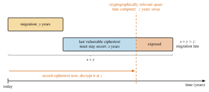
The second property is that authentication fails immediately, not retroactively. Once discrete logarithms are cheap, every unexpired ECDSA key can be forged. Firmware images, calibration files and job results then lose their integrity guarantee at the same moment. Post-quantum cryptography (PQC) [92] replaces the vulnerable public-key primitives with problems for which no efficient quantum algorithm is known: module lattices and hash functions in the NIST selections [94].
Grover’s quadratic speed-up is far less damaging than Shor’s: its iterations cannot be parallelized without loss of the advantage, and each must evaluate the cipher coherently. NIST and the CNSA 2.0 profile [160] respond conservatively with 256-bit keys and 256-bit hash outputs. Hence the module described below carries AES-256-GCM and SHA3-256 and instantiates its DRBGs at a 256-bit security strength, and the migration effort concentrates on the public-key layer.
A cloud QPU is not accessed through a quantum channel. The user’s circuit is compiled on a workstation or an HPC system (Chapter III), serialized and sent over TLS to the provider’s front end. A classical scheduler queues it, classical control electronics translate it into pulses, and the outcomes travel back the same way. Every dashed arrow in Figure 8.2 is a classical channel where a quantum-vulnerable primitive would have to be replaced. The trustworthiness of the whole is bounded by its weakest classical link.
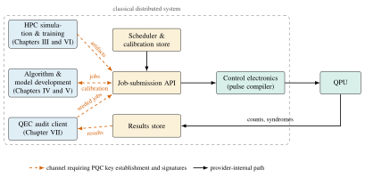
A quantum cloud also widens the attack surface. Calibration data are a public interface that an adversary can read and, on an unauthenticated channel, alter. Multi-tenancy is physical, so cross-talk becomes a cross-tenant channel, the co-location that the fault model of Chapter VII formalizes. And jobs wait in classical queues for hours. Post-quantum cryptography cures none of this by itself. But authenticated calibration, signed jobs and attested results turn an opaque queue into a chain of verifiable records.
8.2Requirements Analysis
Table 8.1 covers the five kinds of classical artifacts of this dissertation, one per research chapter. The paragraphs below justify the entries.
| Layer | Asset | Lifetime | Principal threat | Service | Primitive |
|---|---|---|---|---|---|
| HPC simulation (Chapter III) | HDF5 circuit tensors, state-vector checkpoints, container images | months to years | tampered image or dataset (supply chain) | integrity, authenticity | ML-DSA signature; SHA-3 digest |
| NISQ algorithms (Chapter V) | Job payloads: QUBO coefficients mapped to DEAL angles; QAWA portfolio data | years (business data) | interception and later decryption of payloads | confidentiality in transit | hybrid ML-KEM + AES-256-GCM |
| Calibration (Chapters IV and V) | \(T_1\), \(T_2\), CZ-error maps used by ShardQ and DEAL layer selection | hours (freshness) | poisoned calibration causes mis-compiled cuts | authenticity, freshness | ML-DSA-signed, time-stamped snapshots |
| Quantum learning (Chapter IV) | Encoded datasets (medical images), QPIE/VQT parameters | years (privacy) | disclosure of training data | confidentiality at rest and in transit | AES-256-GCM; ML-KEM key wrap |
| Synthesis (Chapter VI) | RubriQ fine-tuned weights, LoRA adapters, rubric evaluators | years (IP; reward integrity) | weight tampering; evaluator substitution | integrity, authenticity (long-lived) | SLH-DSA or ML-DSA-87; SHA-3 Merkle digest |
| QEC audit (Chapter VII) | Encoder seeds, syndrome records, audit logs | per run (seed); years (log) | seed prediction; log forgery | unpredictability; non-repudiation | SP 800-90A DRBG; ML-DSA |
| Results (all) | Measurement counts, provider attestations | years (evidence) | result substitution or replay | authenticity, freshness | ML-DSA; nonce and commitment |
Simulation artifacts on HPC. The Q-GEAR pipeline of Chapter III produces HDF5 tensors for thousands of circuits and container images that fix the software stack (Appendix A), shared across facilities and reused for months. Their confidentiality is rarely critical, but their integrity is: a tampered container that silently altered gate semantics would corrupt every downstream benchmark. Authenticity over a long lifetime needs a signature whose security does not erode as quantum hardware improves.
Job payloads to cloud QPUs. A DEAL circuit (Chapter V) encodes the QUBO coefficients of the problem instance in its rotation angles, and a QAWA circuit encodes portfolio correlations. The payload is the business data, sent to a third party, and its value persists for years. Harvest-now-decrypt-later applies in full: key establishment for the submission channel must be post-quantum.
Calibration data. ShardQ (Chapter IV) places gate cuts with physical-qubit distances and calibrated error rates, and DEAL selects its layer count from the device noise profile. A calibration file that an adversary can alter is a compiler-level attack surface: it can steer cuts onto the worst qubits or push layer counts beyond the coherence budget. Because calibration is refreshed hourly, the service needed is authenticity with freshness, not long-term confidentiality.
Model weights and learned encodings. The QPIE and VQT models of Chapter IV were trained on medical images. RubriQ (Chapter VI) holds roughly 200 GB of fine-tuned weights whose integrity determines the correctness of every synthesized circuit. Both require confidentiality at rest and integrity over the model’s lifetime. The RubriQ reward pipeline also requires that the evaluator code in its reinforcement-learning loop is exactly the audited code.
QEC seeds and audit records. Chapter VII showed that reseeding the Hadamard-structured-ensemble (HSE) encoder per run cuts the mean accepted logical disturbance of eight-qubit encoders from 0.150 to 0.020 when the fault is fixed before the seed is known [10]. The benefit evaporates if the adversary can predict the seed. An SP 800-90A deterministic random bit generator (DRBG) [99] fed from a validated entropy source [157] provides what is needed: unpredictability at a stated security strength.
The threats in Table 8.1 presuppose three adversaries. A network adversary records traffic today and decrypts it once a cryptographically relevant quantum computer exists; only post-quantum key establishment defeats it. A co-located tenant, the adversary of Chapter VII, can inject faults but cannot read the control plane; reseeding from a source it cannot observe contains it. A compromised control plane can alter queued jobs, calibration files and results; the user cannot prevent this but can detect it through signatures and attestations.
From Table 8.1 we distill five requirements for the cryptographic component of the stack.
Post-quantum key establishment for every channel carrying job payloads or model data, in a hybrid construction so that security does not regress below the classical baseline during migration.
Post-quantum signatures on artifacts (images, calibration snapshots, results), with a hash-based option for artifacts whose lifetime is measured in decades.
Approved randomness: all seeds consumed by the audit of Chapter VII originate from an SP 800-90A DRBG inside a cryptographic module boundary.
Assurance: the implementation is structured as a cryptographic module in the sense of FIPS 140-3 [98], with self-tests, defined roles and services, and zeroization.
Crypto-agility: applications can discover which module and algorithm suite is available and switch suites without code changes, because the standards are still evolving (Section 8.5).
8.3The QPC SDK Architecture
The Light Rider Inc. QPC SDK [11] is the candidate’s response to R1–R5. It was released on Zenodo in August 2026 as version 1.0.0 for Linux x86_64. Its record describes it as a “post-quantum cryptography FIPS 140-3 module with module search capability.” We describe it as FIPS 140-3 [98], whose technical basis is ISO/IEC 19790:2012, describes any cryptographic module, and then its distinguishing module search capability. The SDK is a software module designed to the requirements for software on a general-purpose operating system. Implementation statements beyond the public release are marked for confirmation against the SDK documentation. Figure 8.3 shows the architecture.
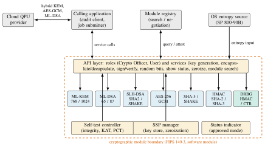
8.3.1Module Boundary, Roles and Services
The module boundary encloses the algorithm implementations, the self-test logic, the SSP manager and the service interface. FIPS 140-3 requires at least a Crypto Officer role and permits a User role, and the SDK exposes both. The Crypto Officer instantiates the module, runs on-demand self-tests and zeroizes, and the User calls the cryptographic services. Every service must indicate whether it ran in the approved mode, which the SDK does with a status indicator per call. The service list mirrors Section 8.2: key-pair generation and encapsulation/decapsulation (R1), signature generation and verification (R2), random-bit generation (R3), show-status and self-test (R4), and module search (R5).
8.3.2Approved Algorithms
The approved algorithm set comes from the three August 2024 standards and the symmetric primitives they rely on. Table 8.2 lists the parameter sets and their public sizes. ML-KEM [95] is the lattice-based key-encapsulation mechanism formerly known as CRYSTALS-Kyber. ML-DSA [96] is the lattice-based signature formerly known as CRYSTALS-Dilithium. SLH-DSA [97] is the stateless hash-based signature formerly known as SPHINCS+. NIST’s security categories relate each parameter set to a classical reference [94]: categories 1, 3 and 5 correspond to key search on AES-128, AES-192 and AES-256, and categories 2 and 4 to collision search on SHA-256 and SHA-384.
The SDK defaults to category-3 parameters (ML-KEM-768, ML-DSA-65) and offers category 5 for the longest-lived artifacts. SLH-DSA is the conservative choice for container images and model weights that must remain verifiable for a decade, at the price of signatures roughly two orders of magnitude larger than classical ones.
| Function | Parameter set | Standard | Category | Public (B) | Private (B) | CT / sig. (B) |
|---|---|---|---|---|---|---|
| KEM | ML-KEM-768 | FIPS 203 [95] | 3 | 1184 | 2400 | 1088 |
| KEM | ML-KEM-1024 | FIPS 203 [95] | 5 | 1568 | 3168 | 1568 |
| Signature | ML-DSA-65 | FIPS 204 [96] | 3 | 1952 | 4032 | 3309 |
| Signature | ML-DSA-87 | FIPS 204 [96] | 5 | 2592 | 4896 | 4627 |
| Signature | SLH-DSA-SHA2-128s | FIPS 205 [97] | 1 | 32 | 64 | 7856 |
| Signature | SLH-DSA-SHA2-256s | FIPS 205 [97] | 5 | 64 | 128 | 29792 |
| Hash / XOF | SHA3-256, SHA3-512, SHAKE128, SHAKE256 | FIPS 202 [161] | — | — | — | — |
| AEAD | AES-256-GCM | FIPS 197 [162]; SP 800-38D [163] | 256-bit | — | 32 | — |
| DRBG | HMAC_DRBG; CTR_DRBG (AES-256) | SP 800-90A [99] | 256-bit | — | — | — |
A hybrid handshake that carries an ML-KEM-768 encapsulation key and ciphertext adds roughly 2.3 kB to a connection. An ML-DSA-65 signature is about fifty times larger than an ECDSA-P256 signature. For job submission this is negligible against payload sizes, but for signing calibration snapshots at hourly cadence it argues for ML-DSA rather than SLH-DSA. The DRBGs are the only components whose output feeds a quantum operation directly, because the encoder seeds of Chapter VII are DRBG output. They are instantiated at the 256-bit strength with prediction resistance available.
Carrying both lattice-based and hash-based signatures is a hedge. ML-KEM and ML-DSA rest on the same module-lattice assumptions, so a structural advance would affect both at once. SLH-DSA depends only on the preimage and collision resistance of its hash function. NIST’s selection of HQC as a code-based backup KEM [164] reflects the same reasoning. Module search (Section 8.3.4) lets the SDK add HQC once its standard is final without application changes. Computationally the lattice schemes are cheap: ML-KEM-768 runs in software at speeds comparable to elliptic-curve Diffie–Hellman, so the price of migration is bandwidth and storage. SLH-DSA signing is the exception: slow enough for the infrequent signing of images and checkpoints but not for per-message use.
8.3.3Self-Tests, Key Management and Zeroization
FIPS 140-3 distinguishes pre-operational self-tests, which must pass before the module provides any service, from conditional self-tests, which run when a particular condition arises. At load time the SDK performs a software-integrity test over its code image. Before the first use of each approved algorithm it runs known-answer tests (KATs) against vectors from the standards. The conditional tests are pair-wise consistency tests (PCTs), run whenever a key pair is generated. A fresh ML-DSA or SLH-DSA key signs and verifies a test message. A fresh ML-KEM key encapsulates, decapsulates and checks that the two shared secrets agree.
A failed self-test places the module in an error state in which all cryptographic output is inhibited and only show-status and zeroize remain available. The SSP manager holds sensitive security parameters (private keys, DRBG state, shared secrets and intermediate values) and zeroizes them on release, on error and on request. Public security parameters are protected against modification but not disclosure. The DRBGs draw entropy from the operating system’s noise source. FIPS 140-3 treats it as a passive entropy source outside the boundary, documented against SP 800-90B [157].
FIPS 140-3 also covers non-invasive attacks, and the post-quantum schemes have specific side-channel profiles. ML-KEM decapsulation uses implicit rejection: an invalid ciphertext yields a pseudorandom secret, not an error. The comparison that selects between the two paths must be constant-time, or a timing difference would enable a chosen-ciphertext attack on the decapsulation key. ML-DSA signing contains rejection-sampling loops whose rejected candidates must never be exposed. Operations on critical security parameters are free of secret-dependent branches and table look-ups. Its known-answer tests exercise the implicit-rejection path, so a regression is caught before the module enters the operational state.
The public release of the SDK [11] consists of the Linux x86-64 binary archive and its checksums, without a published security policy. So the self-test schedule, the entropy-source treatment and the targeted security level stated here describe the design as implemented by the candidate, not claims verified by a testing laboratory.
8.3.4Module Search Capability
The module search capability of its release description distinguishes the SDK from a plain library. An application in a heterogeneous facility may have several cryptographic modules: the SDK, an operating-system module, or a hardware security module on the HPC login nodes. Each supports a different subset of Table 8.2 at its own security level and validation status. Module search is a registry-and-discovery service in which each module publishes a signed descriptor that lists its identity, approved algorithm suites, security level and validation metadata. An application submits a requirement profile, for example “KEM at category 3 or higher, signature at category 3, DRBG at 256-bit strength.” It receives a ranked list of matching modules and negotiates a suite with the one it selects.
Two design decisions matter for security. Descriptors are signed with ML-DSA, so a network adversary cannot advertise a weaker module and induce a downgrade. Negotiation is constrained by a policy floor set by the Crypto Officer, so no suite can fall below the requirements of Section 8.2. Module search thus implements R5: crypto-agility becomes a configuration property, not a code change, which makes the migration plan of Section 8.5 operational. The registry transport, descriptor format and ranking policy are described here only as an interface contract. The released archive publishes no separate specification for them.
8.4Integration with the QEC Audit
8.4.1Seeding the Encoder from an Approved DRBG
In the audit, an HSE encoder of depth \(d\) is a deterministic function \(E_s\) of a seed \(s\). The seed selects the Hadamard, phase, permutation and CNOT layers [10]. The security argument requires that the adversary who chooses the fault does not know \(s\). In the bounded cloud fault model the mean accepted logical disturbance falls from 0.150 to 0.020, an \(86.7\%\) reduction attributable to syndrome-based rejection, precisely because the fault is committed before the encoder is known [10]. If \(s\) came from a predictable source (a wall-clock time, a job identifier, a default pseudo-random generator seeded with a small integer), an adversary who reproduces the derivation is back in the fixed-encoder setting. Requirement R3 therefore states that every \(s\) is a fresh output of the SDK’s DRBG: \[s \leftarrow \mathrm{Generate}\bigl(\mathrm{state},\ 256,\ \mathrm{SHA3\text{-}256}(\mathrm{job\_id} \,\|\, \mathrm{device\_id})\bigr), \tag{8.1}\] where the arguments are the DRBG state, the requested number of bits and the SP 800-90A additional input. The additional input binds the seed to the job and the device but adds no unpredictability. The SP 800-90A reseed counter, or a request before a batch of audit runs, triggers a reseed of the DRBG from the entropy source. Reseeding the encoder draws a fresh \(s\) per run with a Generate call, the mechanism studied in Chapter VII. Reseeding the DRBG refreshes its internal state from entropy with a Reseed call, the mechanism of SP 800-90A [99]. Both are required.
Until the job has executed, \(s\) is a critical security parameter held by the SSP manager and stored at rest only under AES-256-GCM. Once revealed, it becomes evidence from which any third party can reconstruct \(E_s\) and recompute the audit statistic. For a batch of \(N\) runs the design draws \(N\) seeds by separate Generate calls whose additional input includes the run index, so one run can be revealed and audited without exposing the others.
8.4.2An End-to-End Trust Chain
For a verifier to conclude that an accepted-logical-disturbance estimate refers to the job that actually ran on the device, every link from DRBG to result must be authenticated. Figure 8.4 defines the trust chain as nine steps between four parties: the QPC module, the audit client, the cloud provider’s front end and the QPU.
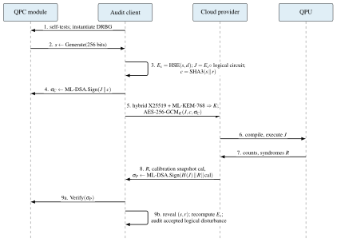
The client runs the module’s self-tests, instantiates a DRBG (step 1) and draws a seed (step 2, Equation (8.1)). It builds the encoder and the job and commits to the seed as \(c=\mathrm{SHA3\text{-}256}(s\,\|\,r)\) with a random blinding value \(r\) (step 3), so the seed is provably fixed before execution without being disclosed. The module signs job and commitment with ML-DSA-65 (step 4), and the client sends them to the provider under a hybrid key (step 5, Section 8.4.3). The provider compiles and executes the job (steps 6–7) and returns the results with the calibration snapshot in effect and its own ML-DSA signature over the hash of job, results and calibration (step 8). That signature ties the results to the exact job and to the device state at the time, the freshness property of Table 8.1. The client verifies it through the module (step 9a) and reveals \(s\) and \(r\), so that any verifier can recompute \(E_s\) and evaluate the accepted logical disturbance on \(R\) (step 9b).
Every link is either a post-quantum primitive from Table 8.2 or a hash, so the chain remains sound after a cryptographically relevant quantum computer exists. It does not, and cannot, prevent a co-located adversary who observes the compiled pulses from learning \(E_s\) during execution. The cloud fault model of Chapter VII bounds that residual threat. The chain’s role is to ensure that the audit measures it faithfully.
8.4.3Hybrid Key Establishment for Job Submission
During the transition, R1 asks for a construction at least as secure as both the classical scheme it replaces and the post-quantum scheme, so that a flaw in either does not expose the channel. The standard approach, adopted in the IETF’s hybrid key agreement for TLS 1.3 [165] and consistent with the concatenation KDF of SP 800-56C [166], derives the session key from both shared secrets: \[K = \mathrm{KDF}\bigl(\mathrm{ss}_{\text{X25519}} \,\|\, \mathrm{ss}_{\text{ML-KEM-768}} \,\|\, \mathrm{transcript}\bigr), \tag{8.2}\] where \(\mathrm{ss}_{\text{X25519}}\) is the elliptic-curve Diffie–Hellman secret, \(\mathrm{ss}_{\text{ML-KEM-768}}\) the decapsulated ML-KEM secret, and the transcript hash binds the key to the handshake. Figure 8.5 shows the handshake. The SDK exposes the ML-KEM half through its encapsulation service and the KDF through its SHA-3 service. Payloads are then protected with AES-256-GCM under \(K\), and a certificate chain whose leaf is ML-DSA-65 authenticates the provider’s signing key. NSA’s CNSA 2.0 advisory [160] prefers ML-KEM-1024 and ML-DSA-87 for national-security systems. The SDK’s category-5 parameter sets make that profile a configuration choice.
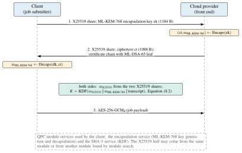
8.5Migration Timeline and Crypto-Agility
The candidate’s tracker [158] monitors the NIST post-quantum standardization pages weekly. Figure 8.6 plots its milestones against the transition deadlines NIST has proposed. The process opened with a workshop in April 2015 and a call for proposals in December 2016. By November 2017, 69 complete first-round candidates had arrived, narrowed to 26 in January 2019 and to seven finalists plus eight alternates in July 2020. The third-round report of July 2022 [94] selected CRYSTALS-Kyber, CRYSTALS-Dilithium, FALCON and SPHINCS+ and sent four KEMs to a fourth round.
Drafts appeared in August 2023 and the final FIPS 203, 204 and 205 were published on 13 August 2024 [95], [96], [97]. On 11 March 2025 NIST selected HQC as a code-based backup KEM [164]. The FALCON-based FN-DSA is expected as FIPS 206, of which no draft had appeared in NIST’s publication database as of October 2026. The initial public draft of NIST IR 8547 [167], released in November 2024, proposes two deprecation dates. Quantum-vulnerable algorithms at the 112-bit classical security level (RSA-2048, ECDSA and ECDH on P-256) are to be deprecated after 2030. All quantum-vulnerable public-key algorithms are to be disallowed after 2035. Its comment period closed on 10 January 2025 and the report remained an initial public draft as of October 2026.
First, the window between the final standards (2024) and the proposed deprecation of RSA-2048 (2030) is shorter than the lifetime of an HPC procurement or a QPU generation, so the migration must be under way now. Second, the standards are not finished: HQC and FN-DSA will add algorithms, further signature candidates are under evaluation, and IR 8547 is a draft. So code that hard-wires one algorithm will be rewritten more than once, whereas code that negotiates a suite through module search will be reconfigured. Third, the seeds and signatures of Chapter VII have different agility needs. A seed is consumed immediately, so the DRBG can be upgraded at any time. A signature on a container image must verify for years, which is why Table 8.1 assigns the most conservative scheme, SLH-DSA, to model weights and images.
For such a facility the migration has four steps.
Inventory every point in Figure 8.2 where a key is established, a signature verified or a random value drawn, with the lifetime of the data it protects.
Prioritize by lifetime, following Table 8.1.
Run a hybrid phase: Equation (8.2) alongside the classical exchange, and post-quantum signatures next to the existing ones. Module search discovers which counterparts already support the new suite.
Remove the classical components as the deprecation date approaches. The tracker [158] alerts the facility when NIST changes the schedule.
8.6Discussion
8.6.1What Is Validated and What Is Designed
Three things exist. The NIST standards are final documents with fixed parameter sets [95], [96], [97]. The QPC SDK is a released artifact with a persistent identifier [11]. Its implementations can be exercised against the known-answer vectors of the standards, and its release description commits it to the FIPS 140-3 structure of Section 8.3. The audit of Chapter VII is a published analysis with reproducible simulations [10].
Three things are designs. The requirements analysis of Section 8.2 is the candidate’s mapping of the dissertation’s artifacts onto security services. The trust chain of Section 8.4.2 is a protocol proposal, not deployed end to end against a commercial provider because none yet exposes ML-DSA-attested results. Module search is an interface contract. Most importantly, the SDK is designed to the requirements of FIPS 140-3. It has not been submitted to a testing laboratory, and this dissertation makes no claim that a Cryptographic Module Validation Program certificate has been obtained. As of October 2026 the module had not been submitted to a CMVP testing laboratory.
8.6.2Limitations
The stack was evaluated on providers whose channels still use classical TLS. So the cost of the trust chain, the added bytes of Table 8.2 and the latency of a signature verification per result batch, has been reasoned about rather than measured on a live queue. A facility with different workloads would populate Table 8.1 differently, although R1–R5 are generic. The trust chain assumes a provider willing to sign results and calibration snapshots. Where it is not, the client can still authenticate its own submission and bind the seed by commitment, but result authenticity degrades to transport-layer security. Finally, the bounded cloud fault model of Chapter VII is a model, and empirical characterization of co-located fault injection on real devices remains future work. The natural continuation is to measure the trust chain through a submission proxy against a real queue. Queue waits on the devices of Chapters IV and V were minutes to hours, so we expect the cryptographic overhead to be invisible at the job level.
8.6.3Relation to Quantum Key Distribution
The advisor’s work on secret-key distillation across quantum wiretap channels [102] represents the other route to quantum-safe key establishment: quantum key distribution (QKD), whose security follows from physics, not computational assumptions [100], [101]. The two are complementary. QKD requires a quantum channel, delivers only key establishment and does not scale to the many-to-many topology of a cloud service. PQC needs no special hardware and covers signatures, key establishment and randomness, but rests on conjectured hardness. A facility with both a QPU and a QKD link could feed QKD-derived key material into the KDF of Equation (8.2) as a third input, giving a key that is secure unless the classical, the lattice-based and the physical assumption all fail. The SDK’s KDF service and module search make such a three-way hybrid a configuration, not a new design.
8.6.4Relation to the Other Chapters
The HDF5 artifacts and containers of Chapter III become signed objects in Table 8.1. The calibration-driven compilation of Chapter V and Chapter IV acquires an authenticity requirement on its inputs. The model weights of Chapter VI acquire a long-lived signature. The reseeded encoders of Chapter VII draw their randomness from an approved DRBG inside a module boundary. Conversely, the fault-tolerant resource estimates that motivate the migration [89], [90] concern exactly the T-count-constrained circuits that RubriQ learns to synthesize. So progress on RQ4 shortens the horizon \(z\) in Mosca’s inequality and tightens the deadline addressed here.
8.7Summary
This chapter mapped the assets of the stack of Chapters III to VII to five requirements: hybrid key establishment, post-quantum signatures with a hash-based option for long-lived artifacts, approved randomness inside a module boundary, FIPS 140-3 assurance and crypto-agility. The Light Rider QPC SDK [11] is a cryptographic module designed to meet them, with ML-KEM, ML-DSA and SLH-DSA from the August 2024 standards, SP 800-90A DRBGs and module search. An end-to-end trust chain carries a DRBG-generated seed through commitment, signing, hybrid encryption, execution and attested return to the audit statistic of Chapter VII, and the design was placed against the NIST standardization and transition timeline. With Chapter VII this answers RQ5: error-corrected computation on shared hardware can be made auditable by reseeding, and the reseeding can be made trustworthy by anchoring it in a post-quantum cryptographic module whose standards are final. Chapter IX draws the five research questions together.
Chapter IXConclusion and Future Work
This dissertation set out to show that useful near-term quantum computation is a property of a co-designed stack, not of a quantum processor alone. It also set out to make concrete progress at each layer. This chapter answers the five research questions of Chapter I. It then draws out the design principles that recur across layers, records the remaining limitations, and lays out the research program that follows.
9.1Answers to the Research Questions
9.1.1RQ1: Scale
Chapter III asked how far classical HPC can push exact circuit simulation, and how to make that capability usable without rewriting programs. Technically, Q-GEAR pushes exact state-vector simulation to 42 qubits on 1,024 A100 GPUs of Perlmutter with close to full GPU utilization. A laptop-scale Qiskit circuit reaches that scale through a constant-time gate-by-gate transformation into a CUDA-Q kernel, plus a containerized, Slurm-native deployment [1].
Practically, the speed-ups that matter to a working researcher change which experiments are feasible in a day. A 34-qubit random circuit that occupies a CPU node for a day completes in about a minute on four GPUs. A 20-qubit quantum Fourier transform runs one to two orders of magnitude faster than in Qiskit Aer. An 18-qubit variational eigensolver loop drops from ten minutes to four seconds. Q-GEAR then served as the validation and reward-evaluation engine of Chapters IV to VI, the strongest evidence that it met the usability goal.
The memory wall of exact simulation stands at roughly 42–44 qubits, even for a leadership-class allocation. Beyond that scale, simulation must become approximate (tensor networks, Clifford-plus-magic decompositions) or give way to the hardware.
9.1.2RQ2: Data
Chapter IV asked how classical data should enter and leave a quantum processor so that learning models are shot-efficient, hardware-compatible and trainable. The four primitives developed there share one answer:
Load many values at once into an address–data register with a uniformly controlled rotation.
Read many expectation values at once from the same circuit.
Keep the nonlinearity on the classical side.
Let a hardware-aware compiler decide how the circuit meets the device.
QPIE showed that parallel exchange between pretrained classical parameters and variational circuits improves accuracy over classical transfer learning on five benchmark tasks. It also speeds convergence on stochastic time series [2]. VQT showed that a vectorized quantum dot product can estimate a transformer’s attention matrix with logarithmic circuit complexity in the batch–sequence product. The estimate reached an RMSE of 0.059 on ibm_kingston, and the resulting language model is competitive with prior quantum sequence models on the Brown corpus [3].
ShardQ showed that a deterministic, distance-ordered cut selection with global reconstruction lowers encoding error by about 15% on Heron devices. It also lifts reconstruction fidelity from 0.79 to 0.90 for seven-address-qubit images [4]. NNQA showed that a trained polynomial network compiles into exact quantum arithmetic. That arithmetic reaches above 99.5% accuracy for polynomials up to degree 35 on both superconducting and trapped-ion hardware. Its resource footprint is an order of magnitude below variational alternatives [5].
9.1.3RQ3: Noise
Chapter V asked how optimization algorithms on NISQ devices can exploit problem and hardware structure instead of black-box parameter search. DEAL showed that a QUBO instance carries enough structure to initialize QAOA angles directly through qubit-prioritization normalization. Calibration data can drive a dynamic physical mapping, and a lightweight digital zero-noise extrapolation can be folded into the same pipeline. On IBM Heron processors, this raised the ground-state success rate of 20-qubit, 10-layer circuits by 14.81% (ibm_torino) and 7.40% (ibm_marrakesh) over vanilla QAOA. It also let seven layers do the work of nine [6].
QAWA approached the same question from the data side. Its classical-data-traceable oracle has two-qubit depth linear in the qubit count. With classical post-processing of mid-circuit measurements, it yields solutions whose quality can be verified in polynomial time. On a 156-qubit device, QAWA produced a portfolio 5.4% better than the baseline and 8.1% above the noise floor [7]. The general answer is to move structure out of the optimizer and into the ansatz, initialization and compilation, where it costs no shots.
9.1.4RQ4: Synthesis
Chapter VI asked whether learned, HPC-scale synthesis can produce circuits that respect fault-tolerant resource budgets, and what honest cost accounting says about end-to-end quantum advantage. RubriQ answered the first half. It fine-tunes a code-generating language model with group relative policy optimization against a programmatic rubric, with GPU simulation inside the reward loop. The model achieves a mean T-gate compression of 3.31\(\times\), against 2.05\(\times\) for sparse-reward reinforcement learning. It keeps hardware-constraint violations below 1% and converges two to three times faster. The dense, decomposable reward makes the difference [8].
The nonlinear-wave study answered the second half with a quantitative negative result. In a split-step solver that must measure the field to evaluate the nonlinearity, the per-step quantum cost (depth times shots) grows faster than the classical cost with grid size. An end-to-end advantage therefore requires a coherent nonlinear update that does not read out the field [9]. Both halves rely on the same HPC substrate as Chapter III, and together they set the bar that fault-tolerant compilation must clear.
9.1.5RQ5: Trust
Chapters VII and VIII asked how error-corrected computation on shared cloud QPUs can be made auditable and secure, and how that connects to post-quantum cryptography standards. The audit of Chapter VII introduced a bounded cloud fault model and the notion of accepted logical disturbance, with its exact expectation under Haar-random encoders. It also introduced a polynomial-cost seeded Clifford ensemble that reseeds the encoder per run. For eight-qubit encoders, the reseeded ensemble reduces mean accepted disturbance from 0.150 to 0.020, an 86.7% reduction attributable to syndrome-based rejection. The fixed [[5,1,3]] code corrects every tested weight-one fault, and gate-level Stim simulations up to seventeen qubits confirm the scaling [10].
Chapter VIII then showed that a post-quantum cryptographic module designed to the FIPS 140-3 requirements should supply three things. These are the seed for that encoder, the keys that protect job submission, and the signatures that authenticate results. It described the Light Rider QPC SDK as such a module, with a discovery service for approved algorithm suites [11].
Trust in the quantum stack is therefore a chain. Validated randomness feeds reseeded encoders. Reseeded encoders bound what a co-tenant adversary can do. Post-quantum key establishment and signatures protect everything that moves between the classical and quantum sides.
9.2Cross-Cutting Principles
Four principles recur across the chapters and are, in the candidate’s view, the durable contribution of the dissertation beyond its individual results.
The first is move work off the QPU and out of the shot budget:
DEAL moves parameter search into initialization and compilation.
QAWA and VQT move nonlinear post-processing to the classical side.
NNQA moves training entirely off the device and uses it only for exact arithmetic.
RubriQ moves the search for good circuits into a classical policy trained against a simulator.
In every case, the quantum processor does only what the classical side cannot.
The second is vectorize the interface. Address–data encodings and parallel readout appear in four chapters:
in Chapter III as the QCrank benchmark;
in Chapter IV as the foundation of all four primitives;
in Chapter V as the data-traceable oracle; and
in Chapter VI as the reload step of the split-step solver.
Whatever the application, the number of values that cross the classical–quantum interface per circuit execution sets its cost, and vectorization is the lever.
The third is let calibration data drive compilation. DEAL’s dynamic mapping and RubriQ’s hardware-compliance term take device calibration and topology as compilation inputs, not as an afterthought. ShardQ transpiles its sub-circuits against the target’s calibrated coupling map. The devices used here changed their error maps daily, and methods that read the map outperformed those that did not.
The fourth is account honestly and audit adversarially. The nonlinear-wave study reports where the quantum cost overtakes the classical one. The QEC audit assumes an adversary rather than benign noise, and Chapter VIII distinguishes what is validated from what is designed. A stack trusted with computations of value must be assessed against the costs it will actually incur and the adversaries it will actually face.
9.3Limitations
The limitations recorded in each chapter fall into three groups. The first is scale on the quantum side. Hardware experiments used at most 36 qubits and a few hundred two-qubit gates. Those experiments showed that the algorithms of Chapters IV and V help at that scale, and simulation extends the evidence to 42 qubits. Whether the observed gains persist at hundreds of logical qubits is an open empirical question.
The second is model scope. The QEC audit uses weight-one Pauli faults and small codes. The cost model of the nonlinear-wave study assumes a particular loader and polynomial nonlinearity. RubriQ’s rubric encodes one view of fault-tolerant cost centred on T-count. Each model is tractable and defensible by design, and each could be broadened.
The third is validation status. Several results are preprints under review at the time of writing. The cryptographic module of Chapter VIII is designed to a standard rather than certified against it. Each chapter states these facts where they arise, and the artifact appendix (Appendix B) records the status of each work.
9.4Future Work
The research program that follows has one item per layer and one that spans them.
At the scale layer, the natural extension of Q-GEAR is approximate simulation beyond the memory wall. This means matrix-product-state and tree-tensor-network backends with bond dimension chosen automatically from the circuit’s entanglement structure. It also means Clifford-plus-magic decompositions that exploit the low T-count of the circuits RubriQ produces. A second extension is hardware-in-the-loop simulation, which refreshes the noise model from the device’s live calibration. The simulator then predicts hardware results rather than ideal ones.
At the data layer, the four primitives of Chapter IV should be unified into one vectorized-encoding library with a common compiler pass built on ShardQ. VQT should be scaled to sequence lengths and vocabularies where the vectorized dot product’s logarithmic circuit complexity becomes the dominant advantage. NNQA’s exact arithmetic suggests a broader program: compile classically trained models into quantum arithmetic blocks. These include the coherent nonlinear update that Chapter VI identifies as the missing piece for quantum simulation of nonlinear dynamics.
At the algorithms layer, DEAL and QAWA should be combined. The direct initialization and dynamic mapping of DEAL would join the data-traceable oracle and verifiable post-processing of QAWA, applied to constrained problems with penalty structure. The longer-term goal is their integration with error-corrected execution, in which the logical-qubit error map replaces the physical one.
At the synthesis layer, RubriQ’s rubric should be extended from T-count to full fault-tolerant resource estimates (logical qubits, code distance, magic-state factories). The policy then optimizes what a fault-tolerant machine will actually charge for. For larger circuits, the approximate backends proposed above should replace the simulator in the reward loop.
At the trust layer, the QEC audit should be extended to correlated and higher-weight faults, to surface and bivariate-bicycle codes, and to an adversary who observes syndromes. The QPC SDK should proceed through formal FIPS 140-3 validation, with the hybrid key-establishment and signed-result protocols of Chapter VIII exercised against live cloud QPU services.
Spanning all layers, the most important next step is an end-to-end demonstration of one workload:
developed in simulation with Q-GEAR;
compiled with ShardQ and RubriQ;
executed with DEAL-style initialization on a cloud QPU under a reseeded error-correcting encoder whose seeds and job channels are protected by the QPC SDK; and
with the full cost accounted for.
That demonstration would test the thesis of this dissertation directly, and the components to build it now exist.
9.5Concluding Remarks
The quantum processor is the most photographed part of a quantum computer, but it is not where most of the computation happens. It will not be for some time. This dissertation treats the classical HPC around the QPU as a first-class object of research. It has argued, and shown across simulation, algorithms, data encoding, synthesis and security, that this treatment produces gains at every layer. Those gains compound. The stack is the machine.
References
Appendix AQ-GEAR Configuration and Usage
This appendix collects the operational details of the Q-GEAR framework of Chapter III that are needed to reproduce the simulation results but do not belong in the main text: the environment setup on the NERSC Perlmutter system, the HDF5 layout used to move circuits between the Qiskit front end and the CUDA-Q back end, a minimal Python usage example, a Slurm batch skeleton for a multi-node GPU job, and the gate mapping that the transformer implements. The software is released under the Apache-2.0 license at https://github.com/gzquse/qgear [114]; the multi-node launch scripts derive from the cudaq-perlmutter repository at https://github.com/gzquse/cudaq-perlmutter. The numbers quoted here (34 qubits on four A100 GPUs in about one minute, 42 qubits on up to 1,024 GPUs) are those reported in [1].
A.1Environment Setup on NERSC Perlmutter
Q-GEAR is distributed as an nbdev-based Python package and is installed into a conda environment placed on the Perlmutter scratch file system, where the many small files of a Python environment are served efficiently. Listing A.1 shows the interactive setup; <location> and <username> are the first letter of the user name and the user name, following the NERSC /pscratch convention, and $SCRATCH resolves to the same directory.
Listing A.1. Interactive environment setup on a Perlmutter login node.
module load conda
conda create --prefix=/pscratch/sd/<location>/<username>/qgear -y python=3.11 pip
conda activate $SCRATCH/qgear
pip install -U qgear ipykernel
python -m ipykernel install --user --name qgear --display-name qgearThe last line registers the environment as a Jupyter kernel. After logging in at https://jupyter.nersc.gov and selecting a GPU node, the kernel named qgear appears in the kernel list and the notebook examples.ipynb in the repository walks through the random-circuit, QFT and QCrank image-encoding examples used in the benchmarks of Chapter III. The same environment is used from batch jobs by activating it inside the job script or by baking it into a container image (Section A.4).
A.2HDF5 Tensor Layout
The transformer does not serialize Qiskit objects. It flattens a list of circuits into three fixed-shape NumPy tensors and a JSON metadata string, and writes them to a single HDF5 file that can be read on any node without importing Qiskit. Table A.1 gives the datasets. Circuits in a batch share one gate dimension nGate, so that a whole batch is a rectangular tensor from which thousands of circuits can be dispatched to GPUs with a single read; each circuit’s own gate count travels in its circ_type row, and the kernel executes only that many entries.
| Dataset | Shape | Type | Content |
|---|---|---|---|
circ_type |
(nCirc, 2) |
int32 |
per-circuit header: number of qubits, number of gates |
gate_type |
(nCirc, nGate, 3) |
int32 |
per-gate: gate identifier, target qubit, control qubit (\(-1\) if none) |
gate_param |
(nCirc, nGate, 3) |
float32 |
per-gate rotation parameters \((\theta,\phi,\lambda)\); zero for parameter-free gates |
meta.JSON |
scalar string | — | gate-identifier dictionary, shot count, provenance and timestamps |
The gate-identifier dictionary in meta.JSON maps the integer codes in gate_type to the gate names of Table A.2, so that a file remains self-describing if the supported gate set is extended. In the released package the integer codes are 1 (h), 2 (ry), 3 (rz), 4 (cx), 5 (measure), 6 (cp), 7 (swap) and 8 (u3); each gate_type row holds the code followed by the primary target qubit and the second (control or target) qubit, and the parameter slots of gate_param are left at zero for parameter-free gates, as in the random CX-block generator of the package.
A.3Minimal Python Usage
Listing A.2 shows the complete round trip: build Qiskit circuits, transform them to the gate-list tensors, write and read the HDF5 file, execute on a CUDA-Q target and convert the results to Qiskit-style count dictionaries. On a login node the qpp-cpu target can be substituted for nvidia to test the pipeline without a GPU.
Listing A.2. End-to-end use of the Q-GEAR API on a single GPU node.
from qiskit import QuantumCircuit
from qgear.runner import run_cudaq
from qgear.toolbox.Util_CudaQ import qiskit_to_gateList
from qgear.toolbox.Util_CudaQ import counts_cudaq_to_qiskit
from qgear.toolbox.Util_H5io4 import write4_data_hdf5, read4_data_hdf5
# 1. Build (or load) a list of Qiskit circuits using the supported gate set
circs = []
for i in range(4):
qc = QuantumCircuit(3)
qc.h(0); qc.cx(0, 1); qc.ry(0.3 * (i + 1), 2)
qc.cp(0.5, 1, 2); qc.swap(0, 2)
qc.measure_all()
circs.append(qc)
# 2. Flatten to the (circ_type, gate_type, gate_param) tensors
gate_lists, meta = qiskit_to_gateList(circs)
# 3. Persist for the HPC job (the file is Qiskit-independent)
write4_data_hdf5(gate_lists, "circuits.h5", metaD=meta)
# 4. On the GPU node: read back and execute with CUDA-Q
big_data, meta = read4_data_hdf5("circuits.h5")
results, states = run_cudaq(big_data, shots=10_000,
backend="nvidia")
# 5. Convert CUDA-Q sample results to Qiskit-style counts
counts = counts_cudaq_to_qiskit(results)
print(counts[0])The function names follow the package as used for Chapter III; the HDF5 helpers live in the shared toolbox module inherited from the QCrank encoder code of Balewski et al. [59]. In the released package (qgear 1.1.2) the functions live in the following modules:
qgear.toolbox.Util_CudaQ:
qiskit_to_gateList,counts_cudaq_to_qiskit;qgear.toolbox.Util_H5io4:
write4_data_hdf5,read4_data_hdf5;qgear.runner:
run_cudaq(gateD, shots, verb, backend), which returns the sampled counts together with the state vectors.
A.4Multi-Node Slurm Batch Script
Large runs use the CUDA-Q multi-GPU state-vector back end, which distributes the \(2^n\) amplitudes across GPUs and nodes with MPI, so that a 34-qubit simulation ran on four A100 GPUs in about a minute and larger states scale to hundreds of nodes [1]. The container stack is either Podman-HPC or Shifter [31], with the CUDA-Q image extended by the Q-GEAR package. Listing A.3 is the skeleton used for the 1,024-GPU runs; the account, image and paths are placeholders.
Listing A.3. Slurm skeleton for a multi-node CUDA-Q job on Perlmutter (256 nodes, 4 A100 GPUs each).
#!/bin/bash
#SBATCH -N 256 # nodes: 256 x 4 A100 = 1,024 GPUs
#SBATCH --gpus-per-node=4
#SBATCH --ntasks-per-node=4 # one MPI rank per GPU
#SBATCH -C gpu
#SBATCH -q regular
#SBATCH -A <account>
#SBATCH -t 00:30:00
#SBATCH -J qgear-mgpu
#SBATCH -o slurm-%j.out
IMG=<registry>/cudaq-qgear:latest # CUDA-Q image with qgear installed
INP=$SCRATCH/qgear/circuits.h5
OUT=$SCRATCH/qgear/out_$SLURM_JOB_ID
mkdir -p $OUT
# Podman-HPC (preferred); the Shifter equivalent is
# shifter --image=$IMG --module=gpu,cuda-mpich python -m qgear.runner ...
srun -N $SLURM_NNODES --ntasks-per-node=4 --gpus-per-task=1 \
podman-hpc run --rm --gpu --mpi -v $SCRATCH:$SCRATCH $IMG \
python -m qgear.runner --input $INP --out $OUT \
--target nvidia-mgpu --shots 10000Two details matter for scaling. The number of MPI ranks must equal the number of GPUs, because each rank owns one device and one slice of the state vector; and the nvidia-mgpu target name of the CUDA-Q release used in Chapter III is spelled --target nvidia --target-option mgpu in later releases, so the launch line should be adjusted to the container’s CUDA-Q version.
The node count is set by memory rather than by speed. With single-precision complex amplitudes of 8 bytes, an \(n\)-qubit state occupies \(2^{n+3}\) bytes, so a 40 GB A100 holds a 32-qubit state, four GPUs hold 34 qubits, and 42 qubits require \(2^{45}\) bytes, or 32 TB, which is why the largest runs of Chapter III used 1,024 GPUs (256 nodes); the rule of thumb is \(G \geq 2^{\,n-32}\) GPUs for \(n>32\) qubits. Requesting more nodes than the memory rule demands does not shorten a run appreciably, because the all-to-all amplitude exchange after each gate acting on a globally distributed qubit grows with the number of ranks, and it consumes allocation hours in proportion to the node count. For validation, the count distributions returned by CUDA-Q for circuits of up to about 30 qubits can be compared directly with those of Qiskit Aer on the same circuits, which is the procedure used to check the transformer before the larger runs were made.
A.5Gate Mapping from Qiskit to CUDA-Q
Table A.2 lists the gate set that the transformer accepts and the CUDA-Q kernel operation each gate becomes. Circuits containing other gates must first be transpiled to this basis with Qiskit’s transpile(qc, basis_gates=[...]); since the set includes u3 and cx it is universal, and cp and swap are kept as native operations because they appear in the QFT and QCrank benchmarks and would otherwise expand into several two-qubit gates. Measurement is applied to all qubits at the end of the circuit; mid-circuit measurement and classical control are outside the supported set.
| Qiskit gate | CUDA-Q kernel operation | Parameters | Note |
|---|---|---|---|
h |
h(q) |
— | Hadamard |
ry |
ry(theta, q) |
\(\theta\) | |
rz |
rz(theta, q) |
\(\theta\) | |
u3 |
u3(theta, phi, lam, q) |
\(\theta,\phi,\lambda\) | or rz--ry--rz decomposition |
cx |
x.ctrl(c, t) |
— | CNOT |
cp |
r1.ctrl(theta, c, t) |
\(\theta\) | controlled phase |
swap |
swap(a, b) |
— | |
measure |
mz(q) |
— | all qubits, end of circuit |
Appendix BReproducibility and Research Artifacts
This appendix records, for every research chapter, the published paper, the code repository, the archived software or data release and the hardware and software needed to reproduce the results, followed by the acknowledgments required by the computing facilities used, a note on seeds, determinism and container images, and data-availability statements. The inventory is compiled from the publication records and repository metadata current in September 2026; items that could not be confirmed are marked.
B.1Artifact Inventory
Table B.1 lists the artifacts chapter by chapter. Repository names are under the GitHub account https://github.com/gzquse unless a full address is given. Where a paper has both a preprint and a published version, the published DOI is given in the bibliography entry and the arXiv identifier is repeated here for convenience.
| Chapter | Work | arXiv | Code repository | Archive / license | Hardware / software |
|---|---|---|---|---|---|
| III | Q-GEAR [1] | 2504.03967 | qgear (Apache-2.0); cudaq- perlmutter |
ACM DOI 10.1145/ 3754598.3754608; software [114] | Perlmutter A100 nodes (up to 1,024 GPUs); CUDA-Q, Qiskit, Podman-HPC / Shifter, Slurm |
| IV | QPIE [2] | 2504.04235 | QPIE_ datacircuit |
IOP DOI 10.1088/ 2058-9565/ ade89f | Amazon Braket SV1, IonQ Aria-1, A100 80 GB; PennyLane; PyTorch 24.06 Shifter container |
| IV | VQT [3] | 2508.18464 | quantum- transformer; paper_ AAAI2025- quantum; vectorized_ encoding |
AAAI DOI 10.1609/ aaaiss.v7i1.36905 | ibm_kingston, IonQ Aria-1; ideal simulator; Mathematica notebooks |
| IV | ShardQ [4] | 2511.05492 | ShardQ_v2 (MIT) |
preprint only | ibm_pittsburgh (Heron r3), ibm_marrakesh (Heron r2); A100 80 GB nodes; qiskit-addon- cutting |
| IV | NNQA [5] | 2603.27297 | nnqa (MIT) |
preprint only | ibm_boston, ibm_miami, IonQ Forte-1; Perlmutter A100 for training |
| V | DEAL [6] | 2504.04021 | DEAL_QUBO |
IEEE DOI 10.1109/ QCE65121. 2025.10343 | ibm_torino, ibm_marrakesh; D-Wave Leap (annealing baseline); Qiskit GPU kernel; TTU HPCC |
| V | QAWA [7] | 2511.07676 | qawa_data_circ |
preprint only | ibm_pittsburgh; Qiskit 2.2 with Aer HPC backend |
| VI | RubriQ [8] | 2607.07554 | rubriq-artifact |
Zenodo 10.5281/ zenodo. 21284556 (CC-BY-4.0) [116] | Perlmutter, 4–8 A100 nodes; DeepSpeed ZeRO-2; CUDA-Q; PyTorch CUDA 12.1; IBM Heron-3, IonQ Forte |
| VI | Nonlinear waves [9] | 2608.21647 | SplitStepQUDE (Zenodo archive) | Zenodo 10.5281/ zenodo. 21245905 (CC-BY-4.0 / Apache-2.0) [117] | IBM Heron processor; classical split-step solver |
| VII | QEC audit [10] | 2608.26600 | anonymous.4open. science/ r/usenix_qec_ hse-32FE; ExploreQEC_mar (Apache-2.0) |
preprint only | Stim; containerized, seeded, deterministic |
| VIII | QPC SDK [11] | — | binary release | Zenodo 10.5281/ zenodo. 21895102 (CC-BY-4.0), v1.0.0 | Linux x86_64 |
| VIII | NIST tracker [158] | — | quantum_ news-NIST |
— | GitHub Actions |
B.2Computing Resources and Acknowledgments
The GPU simulations of Chapter III, the circuit-knitting and training runs of Chapter IV and the reinforcement-learning runs of Chapter VI were performed on the Perlmutter system at the National Energy Research Scientific Computing Center. The following acknowledgment applies to all of them and is reproduced in the form requested by the facility:
This research used resources of the National Energy Research Scientific Computing Center, a DOE Office of Science User Facility supported by the Office of Science of the U.S. Department of Energy under Contract No. DE-AC02-05CH11231 using NERSC award DDR-ERCAP0034486 and supported by TTU HPCC center.
The VQT work additionally used NERSC award DDR-ERCAP0034385 and resources of the National Quantum Laboratory at the University of Maryland. The DEAL, QAWA and QPIE studies additionally used the Texas Tech University High Performance Computing Center (HPCC) for classical preprocessing, distributed training and job orchestration.
B.3Cloud Quantum-Processor Access
Hardware experiments were executed on cloud-accessible processors from three providers. Table B.2 lists the devices and the chapters in which they appear; qubit counts and processor generations are those published by the providers at the time of the experiments. IBM Quantum devices were accessed through the IBM Quantum Platform. IonQ Aria-1 and Forte-1 were accessed through Amazon Braket, with credits provided by Xanadu, and through the IonQ cloud API. The D-Wave Leap service was used for the annealing baseline of the DEAL vehicle-routing benchmark. Every hardware result in this dissertation is accompanied in the corresponding repository by the job identifiers, the shot counts and the calibration snapshot in effect at execution time, because device calibration drifts and a later re-run will not reproduce the same counts.
| Device | Provider / processor | Qubits | Used in |
|---|---|---|---|
ibm_torino |
IBM Heron r1 | 133 | Chapter V (DEAL) |
ibm_marrakesh |
IBM Heron r2 | 156 | Chapter V (DEAL), Chapter IV (ShardQ) |
ibm_kingston |
IBM Heron r2 | 156 | Chapter IV (VQT) |
ibm_pittsburgh |
IBM Heron r3 | 156 | Chapter V (QAWA), Chapter IV (ShardQ) |
ibm_boston |
IBM Heron r3 | 156 | Chapter IV (NNQA), Chapter VI (RubriQ) |
ibm_miami |
IBM Nighthawk | 120 | Chapter IV (NNQA) |
| IonQ Aria-1 | IonQ trapped ion (AWS Braket) | 25 | Chapter IV (QPIE, VQT) |
| IonQ Forte-1 | IonQ trapped ion | 36 | Chapter IV (NNQA), Chapter VI (RubriQ) |
| D-Wave Leap | D-Wave Advantage annealer | — | Chapter V (DEAL baseline) |
B.4Seeds, Determinism and Container Images
Three sources of non-determinism affect the results and are handled differently. Classical simulation and training are made reproducible by fixed seeds: the Q-GEAR random-circuit generators, the RubriQ artifact exposes a seed for its training and evaluation runs, and the Stim simulations of Chapter VII take an explicit seed, and the QEC-audit artifact is packaged as a container that runs a seeded, deterministic pipeline from encoder sampling to the final statistics. GPU floating-point reductions are not bitwise reproducible across different GPU counts, so state-vector amplitudes from multi-GPU runs agree with single-GPU runs only to floating-point tolerance, and the benchmarks of Chapter III report timings rather than amplitudes. Hardware execution is inherently stochastic; the repositories therefore archive raw counts rather than derived statistics, together with the number of shots and repetitions, so that any statistic in the text can be recomputed.
The software environments are pinned through containers. The Q-GEAR runs used a CUDA-Q image executed with Podman-HPC or Shifter on Perlmutter (Appendix A); the QPIE runs used the NVIDIA PyTorch 24.06 image with a PennyLane layer described by the repository’s Dockerfile.pennylane; the RubriQ artifact specifies a conda environment with PyTorch for CUDA 12.1 and ships 21 evaluator integration tests that must pass before training; and the QEC audit ships its own container. Version pins for Qiskit (2.2 for QAWA), qiskit-addon- cutting (ShardQ) and Stim are recorded in each repository’s requirements file. The QPC SDK of Chapter VIII is a binary release for Linux x86_64 whose self-tests, described in Section 8.3.3, verify the integrity of the installed image at load time.
B.5Data Availability by Chapter
Chapter III. The benchmark circuits (random CX-block circuits, QFT and QCrank image encodings), the HDF5 files and the timing logs are generated by the notebooks and scripts in the qgear repository; no proprietary data are involved.
Chapter IV. The Moon, Spiral, Hymenoptera, MNIST and NARMA data sets used by QPIE are public; the brain-tumor MRI set is the public collection used by Abiwinanda et al. [168], which [2] cites as its source. The Brown-corpus language-modelling data of VQT are public. Hardware counts for VQT, ShardQ and NNQA are archived in the respective repositories.
Chapter V. The QUBO instances (travelling-salesman, knapsack, MaxCut), the IBM job records and the D-Wave baseline for DEAL are in DEAL_QUBO; the QAWA portfolio data are derived from historical prices of four S&P 500 constituents (AAPL, MSFT, JNJ, XOM), and the processed correlation targets and hardware counts are in qawa_data_circ.
Chapter VI. The 1,500 benchmark circuits and the rubric evaluators of RubriQ are in the Zenodo release; the fine-tuned adapter weights are not part of the 1.6 MB archive and are regenerated by the training scripts (fixed seed 42; about 280 A100 GPU-hours for all methods and seeds). The SplitStepQUDE release contains the solver, the IBM kernel submissions and the data behind every figure of the nonlinear-waves study.
Chapter VII. All encoder samples, fault enumerations and Stim outputs are regenerated deterministically by the containerized artifact; no hardware data are involved.
Chapter VIII. The QPC SDK is available from Zenodo under CC-BY-4.0; the standardization timeline is maintained in the quantum_ news-NIST repository. No experimental data are reported in that chapter.